QSS Tidyverse Code
Jeffrey B. Arnold
2018-02-07
Preface
This is tidyverse R code to supplement the book, Quantitative Social Science: An Introduction, by Kosuke Imai, to be published by Princeton University Press in March 2017.
The R code included with the text of QSS and the supplementary materials relies mostly on base R functions. This translates the code examples provided with QSS to tidyverse R code. Tidyverse refers to a set of packages (ggplot2, dplyr, tidyr, readr, purrr, tibble, and a few others) that share common data representations, especially the use of data frames for return values.
These notes do not aim to teach tidyverse, The book R for Data Science by Hadley Wickham and Garrett Grolemond is an introduction.
I wrote this code while teaching course that employed both texts in order to make the excellent examples and statistical material in QSS more compatible with the modern data science using R approach in R4DS.
Colophon
To install the R packages used in this work run the following code, installs the qsstidy package which contains no code or data, but will install the needed dependencies.
Additionally, the gganimate package requires installing ffmpeg with libvpx support.
The source of the book is available here and was built with versions of packages below:
#> Session info -------------------------------------------------------------
#> setting value
#> version R version 3.4.3 (2017-11-30)
#> system x86_64, darwin15.6.0
#> ui X11
#> language (EN)
#> collate en_US.UTF-8
#> tz America/Los_Angeles
#> date 2018-01-10
#> Packages -----------------------------------------------------------------
#> package * version date source
#> animation * 2.5 2017-03-30 cran (@2.5)
#> assertthat 0.2.0 2017-04-11 CRAN (R 3.4.0)
#> backports 1.1.2 2017-12-13 CRAN (R 3.4.3)
#> base * 3.4.3 2017-12-07 local
#> bindr 0.1 2016-11-13 CRAN (R 3.4.0)
#> bindrcpp 0.2 2017-06-17 CRAN (R 3.4.0)
#> bookdown 0.5 2017-08-20 CRAN (R 3.4.1)
#> broom 0.4.3 2017-11-20 CRAN (R 3.4.3)
#> cellranger 1.1.0 2016-07-27 CRAN (R 3.4.0)
#> cli 1.0.0 2017-11-05 CRAN (R 3.4.2)
#> colorspace 1.3-2 2016-12-14 CRAN (R 3.4.0)
#> compiler 3.4.3 2017-12-07 local
#> crayon 1.3.4 2017-09-16 CRAN (R 3.4.1)
#> datasets * 3.4.3 2017-12-07 local
#> devtools 1.13.4 2017-11-09 CRAN (R 3.4.2)
#> digest 0.6.13 2017-12-14 CRAN (R 3.4.3)
#> dplyr * 0.7.4 2017-09-28 CRAN (R 3.4.2)
#> evaluate 0.10.1 2017-06-24 CRAN (R 3.4.1)
#> forcats * 0.2.0 2017-01-23 CRAN (R 3.4.0)
#> foreign 0.8-69 2017-06-22 CRAN (R 3.4.3)
#> ggplot2 * 2.2.1 2016-12-30 CRAN (R 3.4.0)
#> glue 1.2.0 2017-10-29 CRAN (R 3.4.2)
#> graphics * 3.4.3 2017-12-07 local
#> grDevices * 3.4.3 2017-12-07 local
#> grid 3.4.3 2017-12-07 local
#> gtable 0.2.0 2016-02-26 CRAN (R 3.4.0)
#> haven 1.1.0 2017-07-09 CRAN (R 3.4.1)
#> hms 0.4.0 2017-11-23 CRAN (R 3.4.3)
#> htmltools 0.3.6 2017-04-28 CRAN (R 3.4.0)
#> httr 1.3.1 2017-08-20 CRAN (R 3.4.1)
#> jsonlite 1.5 2017-06-01 CRAN (R 3.4.0)
#> knitr 1.18 2017-12-27 CRAN (R 3.4.3)
#> lattice 0.20-35 2017-03-25 CRAN (R 3.4.3)
#> lazyeval 0.2.1 2017-10-29 CRAN (R 3.4.2)
#> lubridate 1.7.1 2017-11-03 CRAN (R 3.4.2)
#> magrittr 1.5 2014-11-22 CRAN (R 3.4.0)
#> memoise 1.1.0 2017-04-21 CRAN (R 3.4.0)
#> methods 3.4.3 2017-12-07 local
#> mnormt 1.5-5 2016-10-15 CRAN (R 3.4.0)
#> modelr 0.1.1 2017-07-24 CRAN (R 3.4.1)
#> munsell 0.4.3 2016-02-13 CRAN (R 3.4.0)
#> nlme 3.1-131 2017-02-06 CRAN (R 3.4.3)
#> parallel 3.4.3 2017-12-07 local
#> pillar 1.0.1 2017-11-27 CRAN (R 3.4.3)
#> pkgconfig 2.0.1 2017-03-21 CRAN (R 3.4.0)
#> plyr 1.8.4 2016-06-08 CRAN (R 3.4.0)
#> psych 1.7.8 2017-09-09 CRAN (R 3.4.3)
#> purrr * 0.2.4 2017-10-18 CRAN (R 3.4.2)
#> R6 2.2.2 2017-06-17 CRAN (R 3.4.0)
#> Rcpp 0.12.14 2017-11-23 CRAN (R 3.4.3)
#> readr * 1.1.1 2017-05-16 CRAN (R 3.4.0)
#> readxl 1.0.0 2017-04-18 CRAN (R 3.4.0)
#> reshape2 1.4.3 2017-12-11 CRAN (R 3.4.3)
#> rlang 0.1.6 2017-12-21 CRAN (R 3.4.3)
#> rmarkdown 1.8 2017-11-17 CRAN (R 3.4.2)
#> rprojroot 1.3-2 2018-01-03 CRAN (R 3.4.3)
#> rstudioapi 0.7 2017-09-07 CRAN (R 3.4.1)
#> rvest 0.3.2 2016-06-17 CRAN (R 3.4.0)
#> scales 0.5.0 2017-08-24 CRAN (R 3.4.1)
#> stats * 3.4.3 2017-12-07 local
#> stringi 1.1.6 2017-11-17 CRAN (R 3.4.2)
#> stringr * 1.2.0 2017-02-18 CRAN (R 3.4.0)
#> tibble * 1.4.1 2017-12-25 CRAN (R 3.4.3)
#> tidyr * 0.7.2 2017-10-16 CRAN (R 3.4.2)
#> tidyverse * 1.2.1 2017-11-14 CRAN (R 3.4.2)
#> tools 3.4.3 2017-12-07 local
#> utils * 3.4.3 2017-12-07 local
#> withr 2.1.1 2017-12-19 CRAN (R 3.4.3)
#> xml2 1.1.1 2017-01-24 CRAN (R 3.4.0)
#> yaml 2.1.16 2017-12-12 CRAN (R 3.4.3)1 Introduction
Prerequisites
In this and other chapters we will make use of data from the qss package, which is available on github. Install it using the install_github() function from the library devtools.
devtools::install_github("kosukeimai/qss-package")
#> Skipping install of 'qss' from a github remote, the SHA1 (1dc4b858) has not changed since last install.
#> Use `force = TRUE` to force installation
library("qss")In the prerequisites section of each chapter, we’ll load any packages needed for the chapter, and possibly define some functions or load data.
We also load the readr package to load csv files,
the haven package to load Stata dta files,
and the rio package to load multiple types of files.
1.1 Overview of the Book
This sections contains no code to translate – seeQSS* text.*
1.2 How to use the Book
This sections contains no code to translate – seeQSS* text.*
1.3 Introduction to R
These notes do not aim to completely teach R and the tidyverse. However, there are many other resources for that.
R for Data Science is a comprehensive introduction to R using the tidyverse.
Data Camp has interactive courses. In particular, I recommend starting with the following two courses.
1.3.1 Arithmetic Operations
This sections contains no code to translate – seeQSS* text.*
1.3.2 Objects
This sections contains no code to translate – seeQSS* text.*
Also see R4DS: Workflow basics.
1.3.3 Vectors
This sections contains no code to translate – seeQSS* text.*
Also see R4DS: Vectors. In R for Data Science vectors are introduced much later, after data frames.
1.3.4 Functions
This sections contains no code to translate – seeQSS* text.*
Also see R4DS: Functions.
1.3.5 Data Files
Rather than using setwd() in scripts, data analysis should be organized in projects. Read the introduction on RStudio projects in R4DS.1
Datasets used in R are accessed in two ways.
- Datasets can be distributed with R packages. These are often smaller datasets used in examples and tutorials in packages. These are loaded with the
data()function. For example you can load UN data on demographic statistics from the qss library, which distributes the data sets used in the QSS textbook. (The functiondata()called without any arguments will list all the datasets distributed with installed packages.)
- Datasets can be loaded from external files including both stored R objects (
.RData,.rda) and other formats (.csv,.dta,.sav). To read a csv file into R use theread_csvfunction from the readr library, part of the tidyverse.
UNpop_URL <- "https://raw.githubusercontent.com/kosukeimai/qss/master/INTRO/UNpop.csv"
UNpop <- read_csv(UNpop_URL)
#> Parsed with column specification:
#> cols(
#> year = col_integer(),
#> world.pop = col_integer()
#> )We use the readr functionread_csv() instead of the base R function read.csv() used in the QSS text. It is slightly faster, and returns a tibble instead of a data frame. Check this by calling class() on the new object.
class(UNpop)
#> [1] "tbl_df" "tbl" "data.frame"
UNpop
#> # A tibble: 7 x 2
#> year world.pop
#> <int> <int>
#> 1 1950 2525779
#> 2 1960 3026003
#> 3 1970 3691173
#> 4 1980 4449049
#> 5 1990 5320817
#> 6 2000 6127700
#> # ... with 1 more rowSee R for Data Science Ch 11: Data Import for more discussion.
Note that in the previous code we loaded the file directly from a URL, but we could also work with local files on your computer, e.g.
See R for Data Science Ch 10: Tibbles for a deeper discussion of data frames.
The single bracket, [, is useful to select rows and columns in simple cases.
UNpop[c(1, 2, 3), ]
#> # A tibble: 3 x 2
#> year world.pop
#> <int> <int>
#> 1 1950 2525779
#> 2 1960 3026003
#> 3 1970 3691173There are dplyr functions to select rows by number, to select rows by certain criteria, or to select columns.
To select rows 1–3, use slice().
slice(UNpop, 1:3)
#> # A tibble: 3 x 2
#> year world.pop
#> <int> <int>
#> 1 1950 2525779
#> 2 1960 3026003
#> 3 1970 3691173Base R allows you to choose the column world.pop column from the UNpop data frame:
UNpop[, "world.pop"]
#> # A tibble: 7 x 1
#> world.pop
#> <int>
#> 1 2525779
#> 2 3026003
#> 3 3691173
#> 4 4449049
#> 5 5320817
#> 6 6127700
#> # ... with 1 more row
UNpop$world.pop
#> [1] 2525779 3026003 3691173 4449049 5320817 6127700 6916183
UNpop[["world.pop"]]
#> [1] 2525779 3026003 3691173 4449049 5320817 6127700 6916183
select(UNpop, world.pop)
#> # A tibble: 7 x 1
#> world.pop
#> <int>
#> 1 2525779
#> 2 3026003
#> 3 3691173
#> 4 4449049
#> 5 5320817
#> 6 6127700
#> # ... with 1 more rowUnlike [, the [[ and $ operators can only select a single column and return a vector.2 The dplyr function select() always returns a tibble (data frame), and never a vector, even if only one column is selected.
Select rows 1–3 of the year column:
or,
The same series of functions can be performed using the pipe operator, %>%.
UNpop %>%
slice(1:3) %>%
select(year)
#> # A tibble: 3 x 1
#> year
#> <int>
#> 1 1950
#> 2 1960
#> 3 1970This example may seem verbose, but later we can produce more complicated transformations of the data by chaining together simple functions.
Select every other row from UNpop:
or
UNpop %>%
slice(seq(1, n(), by = 2)) %>%
select(world.pop)
#> # A tibble: 4 x 1
#> world.pop
#> <int>
#> 1 2525779
#> 2 3691173
#> 3 5320817
#> 4 6916183or
UNpop %>%
filter(row_number() %% 2 == 1)
#> # A tibble: 4 x 2
#> year world.pop
#> <int> <int>
#> 1 1950 2525779
#> 2 1970 3691173
#> 3 1990 5320817
#> 4 2010 6916183The function n() when used in a dplyr function returns the number of rows in the data frame (or the number of rows in the group if used with group_by()). The function row_number() returns the row number of an observation. The %% operator returns the modulus, i.e. division remainder.
1.3.6 Saving Objects
It is not recommended that you save the entire R workspace using save.image due to the negative and unexpected impacts it can have on reproducibility.See the R for Data Science chapter Workflow Projects.
You should uncheck the options in RStudio to avoid saving and restoring from .RData files (go to Tools > Global Options > General). This will help ensure that your R code runs the way you think it does, instead of depending on some long forgotten code that is only saved in the workspace image. Everything important should be in a script. Anything saved or loaded from file should be done explicitly.
Your motto should be that the source is real, not the objects created by it.
The source code is real. The objects are realizations of the source code. Source for EVERY user modified object is placed in a particular directory or directories, for later editing and retrieval. – from the ESS manual
This means that while you should not save the entire workplace it is perfectly fine practice to run a script and save or load R objects to files, using or .
As with reading CSV files, use the readr package functions. In this case, write_csv() writes a csv file and takes at least two objects: the data that you want to write to a csv and the name that you want to give the file.
1.3.7 Programming and Learning Tips
Use the haven package to read and write Stata (.dta) and SPSS (.sav) files. Stata and SPSS are two other statistical programs commonly used in social science. Even if you don’t ever use them, you’ll almost certainly encounter data stored in their native formats.
UNpop_dta_url <- "https://github.com/kosukeimai/qss/raw/master/INTRO/UNpop.dta"
UNpop <- read_dta(UNpop_dta_url)
UNpop
#> # A tibble: 7 x 2
#> year world_pop
#> <dbl> <dbl>
#> 1 1950 2526
#> 2 1960 3026
#> 3 1970 3691
#> 4 1980 4449
#> 5 1990 5321
#> 6 2000 6128
#> # ... with 1 more rowThere is also the equivalent write_dta() function to create Stata datasets.
While Stata and SPSS data sets are quite similar to data frames, they differ slightly in definitions of acceptable data types of columns and what metadata they store with the data. +Be careful when reading and writing from these formats to ensure that information is not lost.
Also see the rio package which makes loading data even easier with smart defaults.
You can use the import() function to load many types of files:
import("https://github.com/kosukeimai/qss/raw/master/INTRO/UNpop.csv")
#> year world.pop
#> 1 1950 2525779
#> 2 1960 3026003
#> 3 1970 3691173
#> 4 1980 4449049
#> 5 1990 5320817
#> 6 2000 6127700
#> 7 2010 6916183
import("https://github.com/kosukeimai/qss/raw/master/INTRO/UNpop.RData")
#> year world.pop
#> 1 1950 2525779
#> 2 1960 3026003
#> 3 1970 3691173
#> 4 1980 4449049
#> 5 1990 5320817
#> 6 2000 6127700
#> 7 2010 6916183
import("https://github.com/kosukeimai/qss/raw/master/INTRO/UNpop.dta")
#> year world_pop
#> 1 1950 2526
#> 2 1960 3026
#> 3 1970 3691
#> 4 1980 4449
#> 5 1990 5321
#> 6 2000 6128
#> 7 2010 6916R also includes the foreign package, which contains functions for reading and writing files using haven. One reason to use these packages is that they are better maintained. For example, the R function read.dta() does not read files created by the most recent versions of Stata (13+), whereas haven does.
1.3.8 Style Guide
Following a consistent coding style is important for your code to be readable by you and others. The preferred style is the tidyverse style guide, which differs slightly from Google’s R style guide.
- The lintr package will check files for style errors.
- The styler package provides functions for automatically formatting R code according to style guides.
- In RStudio, go to the
Tools > Global Options > Code > Diagnosticspane and check the box to activate style warnings. On this pane, there are other options that can be set in order to increase or decrease the amount of warnings while writing R code in RStudio.
2 Causality
Prerequisites
2.1 Racial Discrimination in the Labor Market
Load the data from the qss package.
In addition to the dim(), summary(), and head() functions shown in the text,
dim(resume)
#> [1] 4870 4
summary(resume)
#> firstname sex race call
#> Length:4870 Length:4870 Length:4870 Min. :0.00
#> Class :character Class :character Class :character 1st Qu.:0.00
#> Mode :character Mode :character Mode :character Median :0.00
#> Mean :0.08
#> 3rd Qu.:0.00
#> Max. :1.00
head(resume)
#> firstname sex race call
#> 1 Allison female white 0
#> 2 Kristen female white 0
#> 3 Lakisha female black 0
#> 4 Latonya female black 0
#> 5 Carrie female white 0
#> 6 Jay male white 0we can also use glimpse() to get a quick understanding of the variables in the data frame:
glimpse(resume)
#> Observations: 4,870
#> Variables: 4
#> $ firstname <chr> "Allison", "Kristen", "Lakisha", "Latonya", "Carrie"...
#> $ sex <chr> "female", "female", "female", "female", "female", "m...
#> $ race <chr> "white", "white", "black", "black", "white", "white"...
#> $ call <int> 0, 0, 0, 0, 0, 0, 0, 0, 0, 0, 0, 0, 0, 0, 0, 0, 0, 0...The code in QSS uses table() and addmargins() to construct the table. However, this can be done easily with the dplyr package using grouping and summarizing.
Use group_by() to identify each combination of race and call, and then count() the observations:
race_call_tab <-
resume %>%
group_by(race, call) %>%
count()
race_call_tab
#> # A tibble: 4 x 3
#> # Groups: race, call [4]
#> race call n
#> <chr> <int> <int>
#> 1 black 0 2278
#> 2 black 1 157
#> 3 white 0 2200
#> 4 white 1 235If we want to calculate callback rates by race, we can use the mutate() function from dplyr.
race_call_rate <-
race_call_tab %>%
group_by(race) %>%
mutate(call_rate = n / sum(n)) %>%
filter(call == 1) %>%
select(race, call_rate)
race_call_rate
#> # A tibble: 2 x 2
#> # Groups: race [2]
#> race call_rate
#> <chr> <dbl>
#> 1 black 0.0645
#> 2 white 0.0965If we want the overall callback rate, we can calculate it from the original data. Use the summarise() function from dplyr.
2.2 Subsetting Data in R
2.2.1 Subsetting
Create a new object of all individuals whose race variable equals black in the resume data:
glimpse(resumeB)
#> Observations: 2,435
#> Variables: 4
#> $ firstname <chr> "Lakisha", "Latonya", "Kenya", "Latonya", "Tyrone", ...
#> $ sex <chr> "female", "female", "female", "female", "male", "fem...
#> $ race <chr> "black", "black", "black", "black", "black", "black"...
#> $ call <int> 0, 0, 0, 0, 0, 0, 0, 0, 0, 0, 0, 0, 0, 0, 0, 0, 0, 0...Calculate the callback rate for black individuals:
You can combine the filter() and select() functions with multiple conditions. For example, to keep the call and first name variables for female individuals with stereotypically black names:
resumeBf <-
resume %>%
filter(race == "black", sex == "female") %>%
select(call, firstname)
head(resumeBf)
#> call firstname
#> 1 0 Lakisha
#> 2 0 Latonya
#> 3 0 Kenya
#> 4 0 Latonya
#> 5 0 Aisha
#> 6 0 AishaNow we can calculate the gender gap by group.
Now we can calculate the gender gap by group. Doing so may seem to require a little more code, but we will not duplicate as much as in QSS, and this would easily scale to more than two categories.
First, group by race and sex and calculate the callback rate for each group:
resume_race_sex <-
resume %>%
group_by(race, sex) %>%
summarise(call = mean(call))
head(resume_race_sex)
#> # A tibble: 4 x 3
#> # Groups: race [2]
#> race sex call
#> <chr> <chr> <dbl>
#> 1 black female 0.0663
#> 2 black male 0.0583
#> 3 white female 0.0989
#> 4 white male 0.0887Use spread() from the tidyr package to make each value of race a new column:
resume_sex <-
resume_race_sex %>%
ungroup() %>%
spread(race, call)
resume_sex
#> # A tibble: 2 x 3
#> sex black white
#> * <chr> <dbl> <dbl>
#> 1 female 0.0663 0.0989
#> 2 male 0.0583 0.0887Now we can calculate the race wage differences by sex as before,
resume_sex %>%
mutate(call_diff = white - black)
#> # A tibble: 2 x 4
#> sex black white call_diff
#> <chr> <dbl> <dbl> <dbl>
#> 1 female 0.0663 0.0989 0.0326
#> 2 male 0.0583 0.0887 0.0304This could be combined into a single chain with only six lines of code:
resume %>%
group_by(race, sex) %>%
summarise(call = mean(call)) %>%
ungroup() %>%
spread(race, call) %>%
mutate(call_diff = white - black)
#> # A tibble: 2 x 4
#> sex black white call_diff
#> <chr> <dbl> <dbl> <dbl>
#> 1 female 0.0663 0.0989 0.0326
#> 2 male 0.0583 0.0887 0.0304For more information on a way to do this using the spread and gather functions from tidyr package, see the R for Data Science chapter “Tidy Data”.
WARNING The function ungroup removes the groupings in group_by. The function spread will not allow a grouping variable to be reshaped. Since many dplyr functions work differently depending on whether the data frame is grouped or not, I find that I can encounter many errors due to forgetting that a data frame is grouped. As such, I tend to ungroup data frames as soon as I am no longer are using the groupings.
Alternatively, we could have used summarise and the diff function:
resume %>%
group_by(race, sex) %>%
summarise(call = mean(call)) %>%
group_by(sex) %>%
arrange(race) %>%
summarise(call_diff = diff(call))
#> # A tibble: 2 x 2
#> sex call_diff
#> <chr> <dbl>
#> 1 female 0.0326
#> 2 male 0.0304I find the spread code preferable since the individual race callback rates are retained in the data, and since there is no natural ordering of the race variable (unlike if it were a time-series), it is not obvious from reading the code whether call_diff is black - white or white - black.
2.2.2 Simple conditional statements
dlpyr has three conditional statement functions if_else, recode and case_when.
The function if_else is like ifelse but corrects inconsistent behavior that ifelse exhibits in certain cases.
Create a variable BlackFemale using if_else() and confirm it is only equal to 1 for black and female observations:
resume %>%
mutate(BlackFemale = if_else(race == "black" & sex == "female", 1, 0)) %>%
group_by(BlackFemale, race, sex) %>%
count()
#> # A tibble: 4 x 4
#> # Groups: BlackFemale, race, sex [4]
#> BlackFemale race sex n
#> <dbl> <chr> <chr> <int>
#> 1 0 black male 549
#> 2 0 white female 1860
#> 3 0 white male 575
#> 4 1.00 black female 1886Warning The function if_else is more strict about the variable types than ifelse. While most R functions are forgiving about variables types, and will automatically convert integers to numeric or vice-versa, they are distinct. For example, these examples will produce errors:
resume %>%
mutate(BlackFemale = if_else(race == "black" & sex == "female", TRUE, 0))
#> Error in mutate_impl(.data, dots): Evaluation error: `false` must be type logical, not double.because TRUE is logical and 0 is numeric.
resume %>%
mutate(BlackFemale = if_else(race == "black" & sex == "female", 1L, 0))
#> Error in mutate_impl(.data, dots): Evaluation error: `false` must be type integer, not double.because 1L is an integer and 0 is numeric vector (floating-point number). The distinction between integers and numeric variables is often invisible because most functions coerce variables between integer and numeric vectors.
The : operator returns integers and as.integer coerces numeric vectors to integer vectors:
2.2.3 Factor Variables
For more on factors see the R for Data Science chapter “Factors” and the package forcats. Also see the R for Data Science chapter “Strings” for working with strings.
The function case_when is a generalization of the if_else function to multiple conditions. For example, to create categories for all combinations of race and sex,
resume %>%
mutate(
race_sex = case_when(
race == "black" & sex == "female" ~ "black, female",
race == "white" & sex == "female" ~ "white female",
race == "black" & sex == "male" ~ "black male",
race == "white" & sex == "male" ~ "white male"
)
) %>%
head()
#> firstname sex race call race_sex
#> 1 Allison female white 0 white female
#> 2 Kristen female white 0 white female
#> 3 Lakisha female black 0 black, female
#> 4 Latonya female black 0 black, female
#> 5 Carrie female white 0 white female
#> 6 Jay male white 0 white maleEach condition is a formula (an R object created with the “tilde” ~). You will see formulas used extensively in the modeling section. The condition is on the left-hand side of the formula. The value to assign to observations meeting that condition is on the right-hand side. Observations are given the value of the first matching condition, so the order of these can matter.
The case_when function also supports a default value by using a condition TRUE as the last condition. This will match anything not already matched. For example, if you wanted three categories (“black male”, “black female”, “white”):
resume %>%
mutate(
race_sex = case_when(
race == "black" & sex == "female" ~ "black female",
race == "black" & sex == "male" ~ "black male",
TRUE ~ "white"
)
) %>%
head()
#> firstname sex race call race_sex
#> 1 Allison female white 0 white
#> 2 Kristen female white 0 white
#> 3 Lakisha female black 0 black female
#> 4 Latonya female black 0 black female
#> 5 Carrie female white 0 white
#> 6 Jay male white 0 whiteAlternatively, we could have created this variable using string manipulation functions. Use mutate() to create a new variable, type, str_to_title to capitalize sex and race, and str_c to concatenate these vectors.
Some of the reasons given in QSS for using factors in this chapter are less important due to the functionality of modern tidyverse packages. For example, there is no reason to use tapply, as you can use group_by and summarise,
resume %>%
group_by(type) %>%
summarise(call = mean(call))
#> # A tibble: 4 x 2
#> type call
#> <chr> <dbl>
#> 1 BlackFemale 0.0663
#> 2 BlackMale 0.0583
#> 3 WhiteFemale 0.0989
#> 4 WhiteMale 0.0887or,
resume %>%
group_by(race, sex) %>%
summarise(call = mean(call))
#> # A tibble: 4 x 3
#> # Groups: race [?]
#> race sex call
#> <chr> <chr> <dbl>
#> 1 black female 0.0663
#> 2 black male 0.0583
#> 3 white female 0.0989
#> 4 white male 0.0887What’s nice about this approach is that we wouldn’t have needed to create the factor variable first as in QSS.
We can use that same approach to calculate the mean of first names, and use arrange() to sort in ascending order.
resume %>%
group_by(firstname) %>%
summarise(call = mean(call)) %>%
arrange(call)
#> # A tibble: 36 x 2
#> firstname call
#> <chr> <dbl>
#> 1 Aisha 0.0222
#> 2 Rasheed 0.0299
#> 3 Keisha 0.0383
#> 4 Tremayne 0.0435
#> 5 Kareem 0.0469
#> 6 Darnell 0.0476
#> # ... with 30 more rowsTip: General advice for working (or not) with factors:
- Use character vectors instead of factors. They are easier to manipulate with string functions.
- Use factor vectors only when you need a specific ordering of string values in a variable, e.g. in a model or a plot.
2.3 Causal Affects and the Counterfactual
Load the social dataset included in the qss package.
data("social", package = "qss")
summary(social)
#> sex yearofbirth primary2004 messages
#> Length:305866 Min. :1900 Min. :0.000 Length:305866
#> Class :character 1st Qu.:1947 1st Qu.:0.000 Class :character
#> Mode :character Median :1956 Median :0.000 Mode :character
#> Mean :1956 Mean :0.401
#> 3rd Qu.:1965 3rd Qu.:1.000
#> Max. :1986 Max. :1.000
#> primary2006 hhsize
#> Min. :0.000 Min. :1.00
#> 1st Qu.:0.000 1st Qu.:2.00
#> Median :0.000 Median :2.00
#> Mean :0.312 Mean :2.18
#> 3rd Qu.:1.000 3rd Qu.:2.00
#> Max. :1.000 Max. :8.00Calculate the mean turnout by message:
turnout_by_message <-
social %>%
group_by(messages) %>%
summarize(turnout = mean(primary2006))
turnout_by_message
#> # A tibble: 4 x 2
#> messages turnout
#> <chr> <dbl>
#> 1 Civic Duty 0.315
#> 2 Control 0.297
#> 3 Hawthorne 0.322
#> 4 Neighbors 0.378Since we want to calculate the difference by group, spread() the data set so each group is a column, then use mutate() to calculate the difference of each from the control group. Finally, use select() and matches() to return a dataframe with only those new variables that you have created:
turnout_by_message %>%
spread(messages, turnout) %>%
mutate(diff_civic_duty = `Civic Duty` - Control,
diff_Hawthorne = Hawthorne - Control,
diff_Neighbors = Neighbors - Control) %>%
select(matches("diff_"))
#> # A tibble: 1 x 3
#> diff_civic_duty diff_Hawthorne diff_Neighbors
#> <dbl> <dbl> <dbl>
#> 1 0.0179 0.0257 0.0813Find the mean values of age, 2004 turnout, and household size for each group:
social %>%
mutate(age = 2006 - yearofbirth) %>%
group_by(messages) %>%
summarise(primary2004 = mean(primary2004),
age = mean(age),
hhsize = mean(hhsize))
#> # A tibble: 4 x 4
#> messages primary2004 age hhsize
#> <chr> <dbl> <dbl> <dbl>
#> 1 Civic Duty 0.399 49.7 2.19
#> 2 Control 0.400 49.8 2.18
#> 3 Hawthorne 0.403 49.7 2.18
#> 4 Neighbors 0.407 49.9 2.19The function summarise_at allows you to summarize multiple variables, using multiple functions, or both.
social %>%
mutate(age = 2006 - yearofbirth) %>%
group_by(messages) %>%
summarise_at(vars(primary2004, age, hhsize), funs(mean))
#> # A tibble: 4 x 4
#> messages primary2004 age hhsize
#> <chr> <dbl> <dbl> <dbl>
#> 1 Civic Duty 0.399 49.7 2.19
#> 2 Control 0.400 49.8 2.18
#> 3 Hawthorne 0.403 49.7 2.18
#> 4 Neighbors 0.407 49.9 2.192.4 Observational Studies
Load and inspect the minimum wage data from the qss package:
data("minwage", package = "qss")
glimpse(minwage)
#> Observations: 358
#> Variables: 8
#> $ chain <chr> "wendys", "wendys", "burgerking", "burgerking", "kf...
#> $ location <chr> "PA", "PA", "PA", "PA", "PA", "PA", "PA", "PA", "PA...
#> $ wageBefore <dbl> 5.00, 5.50, 5.00, 5.00, 5.25, 5.00, 5.00, 5.00, 5.0...
#> $ wageAfter <dbl> 5.25, 4.75, 4.75, 5.00, 5.00, 5.00, 4.75, 5.00, 4.5...
#> $ fullBefore <dbl> 20.0, 6.0, 50.0, 10.0, 2.0, 2.0, 2.5, 40.0, 8.0, 10...
#> $ fullAfter <dbl> 0.0, 28.0, 15.0, 26.0, 3.0, 2.0, 1.0, 9.0, 7.0, 18....
#> $ partBefore <dbl> 20.0, 26.0, 35.0, 17.0, 8.0, 10.0, 20.0, 30.0, 27.0...
#> $ partAfter <dbl> 36, 3, 18, 9, 12, 9, 25, 32, 39, 10, 20, 4, 13, 20,...
summary(minwage)
#> chain location wageBefore wageAfter
#> Length:358 Length:358 Min. :4.25 Min. :4.25
#> Class :character Class :character 1st Qu.:4.25 1st Qu.:5.05
#> Mode :character Mode :character Median :4.50 Median :5.05
#> Mean :4.62 Mean :4.99
#> 3rd Qu.:4.99 3rd Qu.:5.05
#> Max. :5.75 Max. :6.25
#> fullBefore fullAfter partBefore partAfter
#> Min. : 0.0 Min. : 0.0 Min. : 0.0 Min. : 0.0
#> 1st Qu.: 2.1 1st Qu.: 2.0 1st Qu.:11.0 1st Qu.:11.0
#> Median : 6.0 Median : 6.0 Median :16.2 Median :17.0
#> Mean : 8.5 Mean : 8.4 Mean :18.8 Mean :18.7
#> 3rd Qu.:12.0 3rd Qu.:12.0 3rd Qu.:25.0 3rd Qu.:25.0
#> Max. :60.0 Max. :40.0 Max. :60.0 Max. :60.0First, calculate the proportion of restaurants by state whose hourly wages were less than the minimum wage in NJ, $5.05, for wageBefore and wageAfter:
Since the NJ minimum wage was $5.05, we’ll define a variable with that value. Even if you use them only once or twice, it is a good idea to put values like this in variables. It makes your code closer to self-documenting, i.e. easier for others (including you, in the future) to understand what the code does.
Later, it will be easier to understand wageAfter < NJ_MINWAGE without any comments than it would be to understand wageAfter < 5.05. In the latter case you’d have to remember that the new NJ minimum wage was 5.05 and that’s why you were using that value. Using 5.05 in your code, instead of assigning it to an object called NJ_MINWAGE, is an example of a magic number; try to avoid them.
Note that the variable location has multiple values: PA and four regions of NJ. So we’ll add a state variable to the data.
minwage %>%
count(location)
#> # A tibble: 5 x 2
#> location n
#> <chr> <int>
#> 1 centralNJ 45
#> 2 northNJ 146
#> 3 PA 67
#> 4 shoreNJ 33
#> 5 southNJ 67We can extract the state from the final two characters of the location variable using thestringr function str_sub:
Alternatively, since "PA" is the only value that an observation in Pennsylvania takes in location, and since all other observations are in New Jersey:
Let’s confirm that the restaurants followed the law:
minwage %>%
group_by(state) %>%
summarise(prop_after = mean(wageAfter < NJ_MINWAGE),
prop_Before = mean(wageBefore < NJ_MINWAGE))
#> # A tibble: 2 x 3
#> state prop_after prop_Before
#> <chr> <dbl> <dbl>
#> 1 NJ 0.00344 0.911
#> 2 PA 0.955 0.940Create a variable for the proportion of full-time employees in NJ and PA after the increase:
minwage <-
minwage %>%
mutate(totalAfter = fullAfter + partAfter,
fullPropAfter = fullAfter / totalAfter)Now calculate the average proportion of full-time employees for each state:
full_prop_by_state <-
minwage %>%
group_by(state) %>%
summarise(fullPropAfter = mean(fullPropAfter))
full_prop_by_state
#> # A tibble: 2 x 2
#> state fullPropAfter
#> <chr> <dbl>
#> 1 NJ 0.320
#> 2 PA 0.272We could compute the difference in means between NJ and PA by
(filter(full_prop_by_state, state == "NJ")[["fullPropAfter"]] -
filter(full_prop_by_state, state == "PA")[["fullPropAfter"]])
#> [1] 0.0481or
spread(full_prop_by_state, state, fullPropAfter) %>%
mutate(diff = NJ - PA)
#> # A tibble: 1 x 3
#> NJ PA diff
#> <dbl> <dbl> <dbl>
#> 1 0.320 0.272 0.04812.4.1 Confounding Bias
We can calculate the proportion of each chain out of all fast-food restaurants in each state:
We can easily compare these using a dot-plot:

In the QSS text, only Burger King restaurants are compared. However, dplyr makes comparing all restaurants not much more complicated than comparing two. All we have to do is change the group_by statement we used previously so that we group by chain restaurants and states:
full_prop_by_state_chain <-
minwage %>%
group_by(state, chain) %>%
summarise(fullPropAfter = mean(fullPropAfter))
full_prop_by_state_chain
#> # A tibble: 8 x 3
#> # Groups: state [?]
#> state chain fullPropAfter
#> <chr> <chr> <dbl>
#> 1 NJ burgerking 0.358
#> 2 NJ kfc 0.328
#> 3 NJ roys 0.283
#> 4 NJ wendys 0.260
#> 5 PA burgerking 0.321
#> 6 PA kfc 0.236
#> # ... with 2 more rowsWe can plot and compare the proportions easily in this format. In general, ordering categorical variables alphabetically is useless, so we’ll order the chains by the average of the NJ and PA fullPropAfter, using fct_reorder function:
ggplot(full_prop_by_state_chain,
aes(x = forcats::fct_reorder(chain, fullPropAfter),
y = fullPropAfter,
colour = state)) +
geom_point() +
coord_flip() +
labs(x = "chains")
To calculate the difference between states in the proportion of full-time employees after the change:
2.4.2 Before and After and Difference-in-Difference Designs
To compute the estimates in the before and after design first create an additional variable for the proportion of full-time employees before the minimum wage increase.
minwage <-
minwage %>%
mutate(totalBefore = fullBefore + partBefore,
fullPropBefore = fullBefore / totalBefore)The before-and-after analysis is the difference between the full-time employment before and after the minimum wage law passed looking only at NJ:
minwage %>%
filter(state == "NJ") %>%
summarise(diff = mean(fullPropAfter) - mean(fullPropBefore))
#> diff
#> 1 0.0239The difference-in-differences design uses the difference in the before-and-after differences for each state.
minwage %>%
group_by(state) %>%
summarise(diff = mean(fullPropAfter) - mean(fullPropBefore)) %>%
spread(state, diff) %>%
mutate(diff_in_diff = NJ - PA)
#> # A tibble: 1 x 3
#> NJ PA diff_in_diff
#> <dbl> <dbl> <dbl>
#> 1 0.0239 -0.0377 0.0616Let’s create a single dataset with the mean values of each state before and after to visually look at each of these designs:
full_prop_by_state <-
minwage %>%
group_by(state) %>%
summarise_at(vars(fullPropAfter, fullPropBefore), mean) %>%
gather(period, fullProp, -state) %>%
mutate(period = recode(period, fullPropAfter = 1, fullPropBefore = 0))
full_prop_by_state
#> # A tibble: 4 x 3
#> state period fullProp
#> <chr> <dbl> <dbl>
#> 1 NJ 1.00 0.320
#> 2 PA 1.00 0.272
#> 3 NJ 0 0.297
#> 4 PA 0 0.310Now plot this new dataset:
ggplot(full_prop_by_state, aes(x = period, y = fullProp, colour = state)) +
geom_point() +
geom_line() +
scale_x_continuous(breaks = c(0, 1), labels = c("Before", "After"))
2.5 Descriptive Statistics for a Single Variable
To calculate the summary for the variables wageBefore and wageAfter for New Jersey only:
minwage %>%
filter(state == "NJ") %>%
select(wageBefore, wageAfter) %>%
summary()
#> wageBefore wageAfter
#> Min. :4.25 Min. :5.00
#> 1st Qu.:4.25 1st Qu.:5.05
#> Median :4.50 Median :5.05
#> Mean :4.61 Mean :5.08
#> 3rd Qu.:4.87 3rd Qu.:5.05
#> Max. :5.75 Max. :5.75We calculate the interquartile range for each state’s wages after the passage of the law using the same grouped summarize as we used before:
minwage %>%
group_by(state) %>%
summarise(wageAfter = IQR(wageAfter),
wageBefore = IQR(wageBefore))
#> # A tibble: 2 x 3
#> state wageAfter wageBefore
#> <chr> <dbl> <dbl>
#> 1 NJ 0 0.620
#> 2 PA 0.575 0.750Calculate the variance and standard deviation of wageAfter and wageBefore for each state:
minwage %>%
group_by(state) %>%
summarise(wageAfter_sd = sd(wageAfter),
wageAfter_var = var(wageAfter),
wageBefore_sd = sd(wageBefore),
wageBefore_var = var(wageBefore))
#> # A tibble: 2 x 5
#> state wageAfter_sd wageAfter_var wageBefore_sd wageBefore_var
#> <chr> <dbl> <dbl> <dbl> <dbl>
#> 1 NJ 0.106 0.0112 0.343 0.118
#> 2 PA 0.359 0.129 0.358 0.128Here we can see again how using summarise_at allows for more compact code to specify variables and summary statistics that would be the case using just summarise:
3 Measurement
Prerequisites
3.1 Measuring Civilian Victimization during Wartime
Summarize the variables of interest
afghan %>%
select(age, educ.years, employed, income) %>%
summary()
#> age educ.years employed income
#> Min. :15.0 Min. : 0 Min. :0.000 Length:2754
#> 1st Qu.:22.0 1st Qu.: 0 1st Qu.:0.000 Class :character
#> Median :30.0 Median : 1 Median :1.000 Mode :character
#> Mean :32.4 Mean : 4 Mean :0.583
#> 3rd Qu.:40.0 3rd Qu.: 8 3rd Qu.:1.000
#> Max. :80.0 Max. :18 Max. :1.000Loading data with either data() orread_csv() does not convert strings to factors by default; see below with income. To get a summary of the different levels, either convert it to a factor (see R4DS Ch 15), or use count():
count(afghan, income)
#> # A tibble: 6 x 2
#> income n
#> <chr> <int>
#> 1 10,001-20,000 616
#> 2 2,001-10,000 1420
#> 3 20,001-30,000 93
#> 4 less than 2,000 457
#> 5 over 30,000 14
#> 6 <NA> 154Use count to calculate the proportion of respondents who answer that they were harmed by the ISAF or the Taliban (violent.exp.ISAF and violent.exp.taliban, respectively):
afghan %>%
group_by(violent.exp.ISAF, violent.exp.taliban) %>%
count() %>%
ungroup() %>%
mutate(prop = n / sum(n))
#> # A tibble: 9 x 4
#> violent.exp.ISAF violent.exp.taliban n prop
#> <int> <int> <int> <dbl>
#> 1 0 0 1330 0.483
#> 2 0 1 354 0.129
#> 3 0 NA 22 0.00799
#> 4 1 0 475 0.172
#> 5 1 1 526 0.191
#> 6 1 NA 22 0.00799
#> # ... with 3 more rowsWe need to use ungroup() in order to ensure that sum(n) sums over the entire dataset as opposed to only within categories of violent.exp.ISAF. Unlike prop.table(), the code above does not drop missing values. We can drop those values by adding filter() and !is.na() to test for missing values in those variables:
afghan %>%
filter(!is.na(violent.exp.ISAF), !is.na(violent.exp.taliban)) %>%
group_by(violent.exp.ISAF, violent.exp.taliban) %>%
count() %>%
ungroup() %>%
mutate(prop = n / sum(n))
#> # A tibble: 4 x 4
#> violent.exp.ISAF violent.exp.taliban n prop
#> <int> <int> <int> <dbl>
#> 1 0 0 1330 0.495
#> 2 0 1 354 0.132
#> 3 1 0 475 0.177
#> 4 1 1 526 0.1963.2 Handling Missing Data in R
We already observed the issues with NA values in calculating the proportion answering the “experienced violence” questions. You can filter rows with specific variables having missing values using filter() as shown above.
head(afghan$income, n = 10)
#> [1] "2,001-10,000" "2,001-10,000" "2,001-10,000" "2,001-10,000"
#> [5] "2,001-10,000" NA "10,001-20,000" "2,001-10,000"
#> [9] "2,001-10,000" NA
head(is.na(afghan$income), n = 10)
#> [1] FALSE FALSE FALSE FALSE FALSE TRUE FALSE FALSE FALSE TRUECounts and proportion of missing values of income:
summarise(afghan,
n_missing = sum(is.na(income)),
p_missing = mean(is.na(income)))
#> n_missing p_missing
#> 1 154 0.0559Mean, and other functions, do not by default exclude missing values. Use na.rm = TRUE in these cases.
Table of proportions of individuals harmed by the ISAF and Taliban that includes missing (NA) values:
violent_exp_prop <-
afghan %>%
group_by(violent.exp.ISAF, violent.exp.taliban) %>%
count() %>%
ungroup() %>%
mutate(prop = n / sum(n)) %>%
select(-n)
violent_exp_prop
#> # A tibble: 9 x 3
#> violent.exp.ISAF violent.exp.taliban prop
#> <int> <int> <dbl>
#> 1 0 0 0.483
#> 2 0 1 0.129
#> 3 0 NA 0.00799
#> 4 1 0 0.172
#> 5 1 1 0.191
#> 6 1 NA 0.00799
#> # ... with 3 more rowsThe data frame above can be reorganized so that rows are ISAF and the columns are Taliban as follows:
violent_exp_prop %>%
spread(violent.exp.taliban, prop)
#> # A tibble: 3 x 4
#> violent.exp.ISAF `0` `1` `<NA>`
#> * <int> <dbl> <dbl> <dbl>
#> 1 0 0.483 0.129 0.00799
#> 2 1 0.172 0.191 0.00799
#> 3 NA 0.00254 0.00290 0.00363drop_na is an alternative to na.omit that allows for removing missing values,
Tip There are multiple types of missing values.
NA # logical
#> [1] NA
NA_integer_ # integer
#> [1] NA
NA_real_ # double
#> [1] NA
NA_character_ # character
#> [1] NAIn many cases, this distinction does not matter since many functions will coerce these missing values to the correct vector type. However, you will need to use these in some tidyverse functions that require the outputs to be the same type, e.g. map() and most of the other purrr functions, and if_else(). The code below produces an error, since the TRUE case returns an integer value (x is an integer), but the FALSE case does not specify the type of NA.
x <- 1:5
class(x)
#> [1] "integer"
if_else(x < 3, x, NA)
#> Error: `false` must be type integer, not logicalSo instead of NA, use NA_integer_:
3.3 Visualizing the Univariate Distribution
3.3.1 Barplot
afghan <-
afghan %>%
mutate(violent.exp.ISAF.fct =
fct_explicit_na(fct_recode(factor(violent.exp.ISAF),
Harm = "1", "No Harm" = "0"),
"No response"))
ggplot(afghan, aes(x = violent.exp.ISAF.fct, y = ..prop.., group = 1)) +
geom_bar() +
xlab("Response category") +
ylab("Proportion of respondents") +
ggtitle("Civilian Victimization by the ISAF")
afghan <-
afghan %>%
mutate(violent.exp.taliban.fct =
fct_explicit_na(fct_recode(factor(violent.exp.taliban),
Harm = "1", "No Harm" = "0"),
"No response"))
ggplot(afghan, aes(x = violent.exp.ISAF.fct, y = ..prop.., group = 1)) +
geom_bar() +
xlab("Response category") +
ylab("Proportion of respondents") +
ggtitle("Civilian Victimization by the Taliban")
Instead of creating two separate box-plots, create a single plot facetted by ISAF and Taliban:
select(afghan, violent.exp.ISAF, violent.exp.taliban) %>%
gather(variable, value) %>%
mutate(value = fct_explicit_na(fct_recode(factor(value),
Harm = "1", "No Harm" = "0"),
"No response"),
variable = recode(variable,
violent.exp.ISAF = "ISAF",
violent.exp.taliban = "Taliban")) %>%
ggplot(aes(x = value, y = ..prop.., group = 1)) +
geom_bar() +
facet_wrap(~ variable, ncol = 1) +
xlab("Response category") +
ylab("Proportion of respondents") +
ggtitle("Civilian Victimization")
This plot could improved by plotting the two values simultaneously to be able to better compare them. This will require creating a data frame that has the following columns: perpetrator (ISAF, Taliban) and response (No Harm, Harm, No response).
violent_exp <-
afghan %>%
select(violent.exp.ISAF, violent.exp.taliban) %>%
gather(perpetrator, response) %>%
mutate(perpetrator = str_replace(perpetrator, "violent\\.exp\\.", ""),
perpetrator = str_replace(perpetrator, "taliban", "Taliban"),
response = fct_recode(factor(response), "Harm" = "1", "No Harm" = "0"),
response = fct_explicit_na(response, "No response"),
response = fct_relevel(response, c("No response", "No Harm"))
) %>%
count(perpetrator, response) %>%
mutate(prop = n / sum(n))
ggplot(violent_exp, aes(x = prop, y = response, color = perpetrator)) +
geom_point() +
scale_color_manual(values = c(ISAF = "green", Taliban = "black"))
Black was chosen for the Taliban, and Green for ISAF because they are the colors of their respective flags.
3.3.2 Histogram
See the documentation for geom_histogram.
ggplot(afghan, aes(x = age, y = ..density..)) +
geom_histogram(binwidth = 5, boundary = 0) +
scale_x_continuous(breaks = seq(20, 80, by = 10)) +
labs(title = "Distribution of respondent's age",
y = "Age", x = "Density")
ggplot(afghan, aes(x = educ.years, y = ..density..)) +
geom_histogram(binwidth = 1, center = 0) +
geom_vline(xintercept = median(afghan$educ.years),
color = "white", size = 2) +
annotate("text", x = median(afghan$educ.years),
y = 0.2, label = "median", hjust = 0) +
labs(title = "Distribution of respondent's education",
x = "Years of education",
y = "Density")

There are several alternatives to the histogram.
Density plots (geom_density):
dens_plot <- ggplot(afghan, aes(x = age)) +
geom_density() +
scale_x_continuous(breaks = seq(20, 80, by = 10)) +
labs(title = "Distribution of respondent's age",
y = "Age", x = "Density")
dens_plot which can be combined with a geom_rug to create a rug plot, which puts small lines on the axis to represent the value of each observation. It can be combined with a scatter or density plot to add extra detail. Adjust the
which can be combined with a geom_rug to create a rug plot, which puts small lines on the axis to represent the value of each observation. It can be combined with a scatter or density plot to add extra detail. Adjust the alpha to modify the color transparency of the rug and address overplotting.

Frequency polygons (geom_freqpoly): See R for Data Science EDA.
ggplot(afghan, aes(x = age)) +
geom_freqpoly() +
scale_x_continuous(breaks = seq(20, 80, by = 10)) +
labs(title = "Distribution of respondent's age",
y = "Age", x = "Density")
#> `stat_bin()` using `bins = 30`. Pick better value with `binwidth`.
3.3.3 Boxplot
See the documentation for geom_boxplot.
ggplot(afghan, aes(x = 1, y = age)) +
geom_boxplot() +
coord_flip() +
labs(y = "Age", x = "", title = "Distribution of Age")
ggplot(afghan, aes(y = educ.years, x = province)) +
geom_boxplot() +
coord_flip() +
labs(x = "Province", y = "Years of education",
title = "Education by Province") Helmand and Uruzgan have much lower levels of education than the other provinces, and also report higher levels of violence.
Helmand and Uruzgan have much lower levels of education than the other provinces, and also report higher levels of violence.
afghan %>%
group_by(province) %>%
summarise(educ.years = mean(educ.years, na.rm = TRUE),
violent.exp.taliban =
mean(violent.exp.taliban, na.rm = TRUE),
violent.exp.ISAF =
mean(violent.exp.ISAF, na.rm = TRUE)) %>%
arrange(educ.years)
#> # A tibble: 5 x 4
#> province educ.years violent.exp.taliban violent.exp.ISAF
#> <chr> <dbl> <dbl> <dbl>
#> 1 Uruzgan 1.04 0.455 0.496
#> 2 Helmand 1.60 0.504 0.541
#> 3 Khost 5.79 0.233 0.242
#> 4 Kunar 5.93 0.303 0.399
#> 5 Logar 6.70 0.0802 0.144An alternatives to the traditional boxplot:
The Tufte boxplot:
library("ggthemes")
ggplot(afghan, aes(y = educ.years, x = province)) +
geom_tufteboxplot() +
coord_flip() +
labs(x = "Province", y = "Years of education",
title = "Education by Province") Dot plot with jitter and adjusted alpha to avoid overplotting:
Dot plot with jitter and adjusted alpha to avoid overplotting:
ggplot(afghan, aes(y = educ.years, x = province)) +
geom_point(position = position_jitter(width = 0.25, height = 0),
alpha = .2) +
coord_flip() +
labs(x = "Province", y = "Years of education",
title = "Education by Province") A violin plot:
A violin plot:
ggplot(afghan, aes(y = educ.years, x = province)) +
geom_violin() +
coord_flip() +
labs(x = "Province", y = "Years of education",
title = "Education by Province")
3.3.4 Printing and saving graphics
Use the function rdoc ("ggplot2", "ggsave") to save ggplot2 graphics. Also, R Markdown files have their own means of creating and saving plots created by code-chunks.
3.4 Survey Sampling
3.4.1 The Role of Randomization
Box-plots of altitude
ggplot(afghan.village, aes(x = factor(village.surveyed,
labels = c("sampled", "non-sampled")),
y = altitude)) +
geom_boxplot() +
labs(y = "Altitude (meter)", x = "") +
coord_flip()
Box plots log-population values of sampled and non-sampled
ggplot(afghan.village, aes(x = factor(village.surveyed,
labels = c("sampled", "non-sampled")),
y = log(population))) +
geom_boxplot() +
labs(y = "log(population)", x = "") +
coord_flip()
You can also compare these distributions by plotting their densities:
ggplot(afghan.village, aes(colour = factor(village.surveyed,
labels = c("sampled", "non-sampled")),
x = log(population))) +
geom_density() +
geom_rug() +
labs(x = "log(population)", colour = "")
3.4.2 Non-response and other sources of bias
Calculate the rates of item non-response by province to the question about civilian victimization by ISAF and Taliban forces (violent.exp.ISAF and violent.exp.taliban):
afghan %>%
group_by(province) %>%
summarise(ISAF = mean(is.na(violent.exp.ISAF)),
taliban = mean(is.na(violent.exp.taliban))) %>%
arrange(-ISAF)
#> # A tibble: 5 x 3
#> province ISAF taliban
#> <chr> <dbl> <dbl>
#> 1 Uruzgan 0.0207 0.0620
#> 2 Helmand 0.0164 0.0304
#> 3 Khost 0.00476 0.00635
#> 4 Kunar 0 0
#> 5 Logar 0 0Calculate the proportion who support the ISAF using the difference in means between the ISAF and control groups:
(mean(filter(afghan, list.group == "ISAF")$list.response) -
mean(filter(afghan, list.group == "control")$list.response))
#> [1] 0.049To calculate the table responses to the list experiment in the control, ISAF, and Taliban groups:
afghan %>%
group_by(list.response, list.group) %>%
count() %>%
glimpse() %>%
spread(list.group, n, fill = 0)
#> Observations: 12
#> Variables: 3
#> $ list.response <int> 0, 0, 1, 1, 1, 2, 2, 2, 3, 3, 3, 4
#> $ list.group <chr> "control", "ISAF", "control", "ISAF", "taliban",...
#> $ n <int> 188, 174, 265, 278, 433, 265, 260, 287, 200, 182...
#> # A tibble: 5 x 4
#> # Groups: list.response [5]
#> list.response control ISAF taliban
#> * <int> <dbl> <dbl> <dbl>
#> 1 0 188 174 0
#> 2 1 265 278 433
#> 3 2 265 260 287
#> 4 3 200 182 198
#> 5 4 0 24.0 03.5 Measuring Political Polarization
glimpse(congress)
#> Observations: 14,552
#> Variables: 7
#> $ congress <int> 80, 80, 80, 80, 80, 80, 80, 80, 80, 80, 80, 80, 80, 8...
#> $ district <int> 0, 1, 2, 3, 4, 5, 6, 7, 8, 9, 98, 98, 1, 2, 3, 4, 5, ...
#> $ state <chr> "USA", "ALABAMA", "ALABAMA", "ALABAMA", "ALABAMA", "A...
#> $ party <chr> "Democrat", "Democrat", "Democrat", "Democrat", "Demo...
#> $ name <chr> "TRUMAN", "BOYKIN F.", "GRANT G.", "ANDREWS G.", "...
#> $ dwnom1 <dbl> -0.276, -0.026, -0.042, -0.008, -0.082, -0.170, -0.12...
#> $ dwnom2 <dbl> 0.016, 0.796, 0.999, 1.005, 1.066, 0.870, 0.990, 0.89...q <-
congress %>%
filter(congress %in% c(80, 112),
party %in% c("Democrat", "Republican")) %>%
ggplot(aes(x = dwnom1, y = dwnom2, colour = party)) +
geom_point() +
facet_wrap(~ congress) +
coord_fixed() +
scale_y_continuous("racial liberalism/conservatism",
limits = c(-1.5, 1.5)) +
scale_x_continuous("economic liberalism/conservatism",
limits = c(-1.5, 1.5))
q
However, since there are colors associated with Democrats (blue) and Republicans (blue), we should use them rather than the defaults. There’s some evidence that using semantically-resonant colors can help decoding data visualizations (See Lin, et al. 2013). Since I’ll reuse the scale several times, I’ll save it in a variable.
scale_colour_parties <-
scale_colour_manual(values = c(Democrat = "blue",
Republican = "red",
Other = "green"))
q + scale_colour_parties
congress %>%
ggplot(aes(x = dwnom1, y = dwnom2, colour = party)) +
geom_point() +
facet_wrap(~ congress) +
coord_fixed() +
scale_y_continuous("racial liberalism/conservatism",
limits = c(-2, 2)) +
scale_x_continuous("economic liberalism/conservatism",
limits = c(-2, 2))
#scale_colour_parties
congress %>%
group_by(congress, party) %>%
summarise(dwnom1 = mean(dwnom1)) %>%
filter(party %in% c("Democrat", "Republican")) %>%
ggplot(aes(x = congress, y = dwnom1,
colour = fct_reorder2(party, congress, dwnom1))) +
geom_line() +
scale_colour_parties +
labs(y = "DW-NOMINATE score (1st Dimension)", x = "Congress",
colour = "Party")
Alternatively, you can plot the mean DW-Nominate scores for each party and congress over time. This plot uses color for parties and lets the points and labels for the first and last congresses (80 and 112) to convey progress through time.
party_means <-
congress %>%
filter(party %in% c("Democrat", "Republican")) %>%
group_by(party, congress) %>%
summarise(dwnom1 = mean(dwnom1),
dwnom2 = mean(dwnom2))
party_endpoints <-
party_means %>%
filter(congress %in% c(min(congress), max(congress))) %>%
mutate(label = str_c(party, congress, sep = " - "))
ggplot(party_means,
aes(x = dwnom1, y = dwnom2, color = party,
group = party)) +
geom_point() +
geom_path() +
ggrepel::geom_text_repel(data = party_endpoints,
mapping = aes(label = congress),
color = "black") +
scale_y_continuous("racial liberalism/conservatism") +
scale_x_continuous("economic liberalism/conservatism") +
scale_colour_parties
3.5.1 Correlation
Let’s plot the Gini coefficient
ggplot(USGini, aes(x = year, y = gini)) +
geom_point() +
geom_line() +
labs(x = "Year", y = "Gini coefficient") +
ggtitle("Income Inequality")
To calculate a measure of party polarization take the code used in the plot of Republican and Democratic party median ideal points and adapt it to calculate the difference in the party medians:
party_polarization <-
congress %>%
group_by(congress, party) %>%
summarise(dwnom1 = mean(dwnom1)) %>%
filter(party %in% c("Democrat", "Republican")) %>%
spread(party, dwnom1) %>%
mutate(polarization = Republican - Democrat)
party_polarization
#> # A tibble: 33 x 4
#> # Groups: congress [33]
#> congress Democrat Republican polarization
#> <int> <dbl> <dbl> <dbl>
#> 1 80 -0.146 0.276 0.421
#> 2 81 -0.195 0.264 0.459
#> 3 82 -0.180 0.265 0.445
#> 4 83 -0.181 0.261 0.442
#> 5 84 -0.209 0.261 0.471
#> 6 85 -0.214 0.250 0.464
#> # ... with 27 more rowsggplot(party_polarization, aes(x = congress, y = polarization)) +
geom_point() +
geom_line() +
ggtitle("Political Polarization") +
labs(x = "Year", y = "Republican median − Democratic median")
3.5.2 Quantile-Quantile Plot
congress %>%
filter(congress == 112, party %in% c("Republican", "Democrat")) %>%
ggplot(aes(x = dwnom2, y = ..density..)) +
geom_histogram(binwidth = .2) +
facet_grid(party ~ .) +
labs(x = "racial liberalism/conservatism dimension")
The package ggplot2 includes a function stat_qq which can be used to create qq-plots but it is more suited to comparing a sample distribution with a theoretical distribution, usually the normal one. However, we can calculate one by hand, which may give more insight into exactly what the qq-plot is doing.
party_qtiles <- tibble(
probs = seq(0, 1, by = 0.01),
Democrat = quantile(filter(congress, congress == 112,
party == "Democrat")$dwnom2,
probs = probs),
Republican = quantile(filter(congress, congress == 112,
party == "Republican")$dwnom2,
probs = probs)
)
party_qtiles
#> # A tibble: 101 x 3
#> probs Democrat Republican
#> <dbl> <dbl> <dbl>
#> 1 0 -0.925 -1.38
#> 2 0.0100 -0.672 -0.720
#> 3 0.0200 -0.619 -0.566
#> 4 0.0300 -0.593 -0.526
#> 5 0.0400 -0.567 -0.468
#> 6 0.0500 -0.560 -0.436
#> # ... with 95 more rowsThe plot looks different than the one in the text since the x- and y-scales are in the original values instead of z-scores (see the next section).
party_qtiles %>%
ggplot(aes(x = Democrat, y = Republican)) +
geom_point() +
geom_abline() +
coord_fixed()
3.6 Clustering
3.6.1 Matrices
While matrices are great for numerical computations, such as when you are implementing algorithms, generally keeping data in data frames is more convenient for data wrangling.
See R for Data Science chapter Vectors.
3.6.2 Lists
See R for Data Science chapters Vectors and Iteration, as well as the purrr package for more powerful methods of computing on lists.
3.6.3 k-means algorithms
Calculate the clusters by the 80th and 112th congresses:
k80two.out <-
kmeans(select(filter(congress, congress == 80),
dwnom1, dwnom2),
centers = 2, nstart = 5)Add the cluster ids to data sets:
We will also create a data sets with the cluster centroids. These are in the centers element of the cluster object.
To make it easier to use with ggplot2, we need to convert this to a data frame. The tidy function from the broom package:
k80two.clusters <- tidy(k80two.out)
k80two.clusters
#> x1 x2 size withinss cluster
#> 1 -0.0484 0.783 135 10.9 1
#> 2 0.1468 -0.339 311 54.9 2Plot the ideal points and clusters:
ggplot() +
geom_point(data = congress80,
aes(x = dwnom1, y = dwnom2, colour = cluster2)) +
geom_point(data = k80two.clusters, mapping = aes(x = x1, y = x2))
congress80 %>%
group_by(party, cluster2) %>%
count()
#> # A tibble: 5 x 3
#> # Groups: party, cluster2 [5]
#> party cluster2 n
#> <chr> <fctr> <int>
#> 1 Democrat 1 132
#> 2 Democrat 2 62
#> 3 Other 2 2
#> 4 Republican 1 3
#> 5 Republican 2 247And now we can repeat these steps for the 112th congress:
k112two.out <-
kmeans(select(filter(congress, congress == 112),
dwnom1, dwnom2),
centers = 2, nstart = 5)
congress112 <-
filter(congress, congress == 112) %>%
mutate(cluster2 = factor(k112two.out$cluster))
k112two.clusters <- tidy(k112two.out)
ggplot() +
geom_point(data = congress112,
mapping = aes(x = dwnom1, y = dwnom2, colour = cluster2)) +
geom_point(data = k112two.clusters,
mapping = aes(x = x1, y = x2))
Number of observations from each party in each cluster:
congress112 %>%
group_by(party, cluster2) %>%
count()
#> # A tibble: 3 x 3
#> # Groups: party, cluster2 [3]
#> party cluster2 n
#> <chr> <fctr> <int>
#> 1 Democrat 1 200
#> 2 Republican 1 1
#> 3 Republican 2 242Now repeat the same with four clusters on the 80th congress:
k80four.out <-
kmeans(select(filter(congress, congress == 80),
dwnom1, dwnom2),
centers = 4, nstart = 5)
congress80 <-
filter(congress, congress == 80) %>%
mutate(cluster2 = factor(k80four.out$cluster))
k80four.clusters <- tidy(k80four.out)
ggplot() +
geom_point(data = congress80,
mapping = aes(x = dwnom1, y = dwnom2, colour = cluster2)) +
geom_point(data = k80four.clusters,
mapping = aes(x = x1, y = x2), size = 3) and on the 112th congress:
and on the 112th congress:
k112four.out <-
kmeans(select(filter(congress, congress == 112),
dwnom1, dwnom2),
centers = 4, nstart = 5)
congress112 <-
filter(congress, congress == 112) %>%
mutate(cluster2 = factor(k112four.out$cluster))
k112four.clusters <- tidy(k112four.out)
ggplot() +
geom_point(data = congress112,
mapping = aes(x = dwnom1, y = dwnom2, colour = cluster2)) +
geom_point(data = k112four.clusters,
mapping = aes(x = x1, y = x2), size = 3)
4 Prediction
Prerequisites
The packages modelr and broom are used to wrangle the results of linear regressions,
4.1 Predicting Election Outcomes
4.1.1 Loops in R
RStudio provides many features to help debugging, which will be useful in for loops and function: see this article for an example.
values <- c(2, 3, 6)
n <- length(values)
results <- rep(NA, n)
for (i in 1:n) {
results[i] <- values[i] * 2
cat(values[i], "times 2 is equal to", results[i], "\n")
}
#> 2 times 2 is equal to 4
#> 3 times 2 is equal to 6
#> 6 times 2 is equal to 12Note that the above code uses the for loop for pedagogical purposes only, this could have simply been written
In general, avoid using for loops when there is a vectorized function.
But sticking with the for loop, there are several things that could be improved.
Avoid using the idiom 1:n in for loops. To see why, look what happens when values are empty:
values <- c()
n <- length(values)
results <- rep(NA, n)
for (i in 1:n) {
cat("i = ", i, "\n")
results[i] <- values[i] * 2
cat(values[i], "times 2 is equal to", results[i], "\n")
}
#> i = 1
#> times 2 is equal to NA
#> i = 0
#> times 2 is equal toInstead of not running a loop, as you would expect, it runs two loops, where i = 1, then i = 0. This edge case occurs more than you may think, especially if you are writing functions where you don’t know the length of the vector is ex ante.
The way to avoid this is to use either rdoc("base", "seq_len") or rdoc("base", "seq_along"), which will handle 0-length vectors correctly.
values <- c()
n <- length(values)
results <- rep(NA, n)
for (i in seq_along(values)) {
results[i] <- values[i] * 2
}
print(results)
#> logical(0)or
values <- c()
n <- length(values)
results <- rep(NA, n)
for (i in seq_len(n)) {
results[i] <- values[i] * 2
}
print(results)
#> logical(0)Also, note that the the result is logical(0). That’s because the NA missing value has class logical, and thus rep(NA, ...) returns a logical vector. It is better style to initialize the vector with the same data type that you will be using,
Often loops can be rewritten to use a map function. Read the R for Data Science chapter Iteration before proceeding.
To do so, we first write a function that will be applied to each element of the vector. When converting from a for loop to a function, this is usually simply the body of the for loop, though you may need to add arguments for any variables defined outside the body of the for loop. In this case,
We can now test that this function works on different values:
At this point, we could replace the body of the for loop with this function:
values <- c(2, 4, 6)
n <- length(values)
results <- rep(NA, n)
for (i in seq_len(n)) {
results[i] <- mult_by_two(values[i])
}
print(results)
#> [1] 4 8 12This can be useful if the body of a for loop is many lines long.
However, this loop is still unwieldy code. We have to remember to define an empty vector results that is the same size as values to hold the results, and then correctly loop over all the values. We already saw how these steps have possibilities for errors. Functionals like map, apply a function to each element of a vector.
results <- map(values, mult_by_two)
results
#> [[1]]
#> [1] 4
#>
#> [[2]]
#> [1] 8
#>
#> [[3]]
#> [1] 12The values of each element are correct, but map returns a list vector, not a numeric vector like we may have been expecting. If we want a numeric vector, use map_dbl,
Also, instead of explicitly defining a function, like mult_by_two, we could have instead used an anonymous function with the functional. An anonymous function is a function that is not assigned to a name.
The various purrr functions also will interpret formulas as functions where .x and .y are interpreted as (up to) two arguments.
This is for parsimony and convenience; in the background, these functions are creating anonymous functions from the given formula.
QSS discusses several debugging strategies. The functional approach lends itself to easier debugging because the function can be tested with input values independently of the loop.
4.1.2 General Conditional Statements in R
See the R for Data Science section Conditional Execution for a more complete discussion of conditional execution.
If you are using conditional statements to assign values for data frame, see the dplyr functions if_else, recode, and case_when
The following code which uses a for loop,
values <- 1:5
n <- length(values)
results <- rep(NA_real_, n)
for (i in seq_len(n)) {
x <- values[i]
r <- x %% 2
if (r == 0) {
cat(x, "is even and I will perform addition", x, " + ", x, "\n")
results[i] <- x + x
} else {
cat(x, "is even and I will perform multiplication", x, " * ", x, "\n")
results[i] <- x * x
}
}
#> 1 is even and I will perform multiplication 1 * 1
#> 2 is even and I will perform addition 2 + 2
#> 3 is even and I will perform multiplication 3 * 3
#> 4 is even and I will perform addition 4 + 4
#> 5 is even and I will perform multiplication 5 * 5
results
#> [1] 1 4 9 8 25could be rewritten to use if_else,
or using the map_dbl functional with a named function,
myfunc <- function(x) {
if (x %% 2 == 0) {
x + x
} else {
x * x
}
}
map_dbl(values, myfunc)
#> [1] 1 4 9 8 25or map_dbl with an anonymous function,
4.1.3 Poll Predictions
Load the election polls by state for the 2008 US Presidential election,
data("polls08", package = "qss")
glimpse(polls08)
#> Observations: 1,332
#> Variables: 5
#> $ state <chr> "AL", "AL", "AL", "AL", "AL", "AL", "AL", "AL", "AL",...
#> $ Pollster <chr> "SurveyUSA-2", "Capital Survey-2", "SurveyUSA-2", "Ca...
#> $ Obama <int> 36, 34, 35, 35, 39, 34, 36, 25, 35, 34, 37, 36, 36, 3...
#> $ McCain <int> 61, 54, 62, 55, 60, 64, 58, 52, 55, 47, 55, 51, 49, 5...
#> $ middate <date> 2008-10-27, 2008-10-15, 2008-10-08, 2008-10-06, 2008...and the election results,
data("pres08", package = "qss")
glimpse(pres08)
#> Observations: 51
#> Variables: 5
#> $ state.name <chr> "Alabama", "Alaska", "Arizona", "Arkansas", "Califo...
#> $ state <chr> "AL", "AK", "AZ", "AR", "CA", "CO", "CT", "DC", "DE...
#> $ Obama <int> 39, 38, 45, 39, 61, 54, 61, 92, 62, 51, 47, 72, 36,...
#> $ McCain <int> 60, 59, 54, 59, 37, 45, 38, 7, 37, 48, 52, 27, 62, ...
#> $ EV <int> 9, 3, 10, 6, 55, 9, 7, 3, 3, 27, 15, 4, 4, 21, 11, ...Compute Obama’s margin in polls and final election
polls08 <-
polls08 %>% mutate(margin = Obama - McCain)
pres08 <-
pres08 %>% mutate(margin = Obama - McCain)To work with dates, the R package lubridate makes wrangling them much easier. See the R for Data Science chapter Dates and Times.
The function ymd will convert character strings like year-month-day and more into dates, as long as the order is (year, month, day). See dmy, mdy, and others for other ways to convert strings to dates.
However, note that in polls08, the date middate is already a date object,
The function read_csv by default will check character vectors to see if they have patterns that appear to be dates, and if so, will parse those columns as dates.
We’ll create a variable for election day
and add a new column to poll08 with the days to the election
Although the code in the chapter uses a for loop, there is no reason to do so. We can accomplish the same task by merging the election results data to the polling data by state.
polls_w_results <- left_join(polls08,
select(pres08, state, elec_margin = margin),
by = "state") %>%
mutate(error = elec_margin - margin)
glimpse(polls_w_results)
#> Observations: 1,332
#> Variables: 9
#> $ state <chr> "AL", "AL", "AL", "AL", "AL", "AL", "...
#> $ Pollster <chr> "SurveyUSA-2", "Capital Survey-2", "S...
#> $ Obama <int> 36, 34, 35, 35, 39, 34, 36, 25, 35, 3...
#> $ McCain <int> 61, 54, 62, 55, 60, 64, 58, 52, 55, 4...
#> $ middate <date> 2008-10-27, 2008-10-15, 2008-10-08, ...
#> $ margin <int> -25, -20, -27, -20, -21, -30, -22, -2...
#> $ `ELECTION_DAY - middate` <time> 8 days, 20 days, 27 days, 29 days, 4...
#> $ elec_margin <int> -21, -21, -21, -21, -21, -21, -21, -2...
#> $ error <int> 4, -1, 6, -1, 0, 9, 1, 6, -1, -8, -3,...To get the last poll in each state, arrange and filter on middate
last_polls <-
polls_w_results %>%
arrange(state, desc(middate)) %>%
group_by(state) %>%
slice(1)
last_polls
#> # A tibble: 51 x 9
#> # Groups: state [51]
#> state Pollster Obama McCain middate margin `ELECT… elec… error
#> <chr> <chr> <int> <int> <date> <int> <time> <int> <int>
#> 1 AK Research 2000-3 39 58 2008-10-29 -19 6 -21 - 2
#> 2 AL SurveyUSA-2 36 61 2008-10-27 -25 8 -21 4
#> 3 AR ARG-4 44 51 2008-10-29 - 7 6 -20 -13
#> 4 AZ ARG-3 46 50 2008-10-29 - 4 6 - 9 - 5
#> 5 CA SurveyUSA-3 60 36 2008-10-30 24 5 24 0
#> 6 CO ARG-3 52 45 2008-10-29 7 6 9 2
#> # ... with 45 more rowsChallenge: Instead of using the last poll, use the average of polls in the last week? Last month? How do the margins on the polls change over the election period?
To simplify things for later, let’s define a function rmse which calculates the root mean squared error, as defined in the book. See the R for Data Science chapter Functions for more on writing functions.
Now we can use rmse() to calculate the RMSE for all the final polls:
Or since we already have a variable error,
The mean prediction error is
This is slightly different than what is in the book due to the difference in the poll used as the final poll; many states have many polls on the last day.
I’ll choose bin widths of 1%, since that is fairly interpretable:

The text uses bin widths of 5%:
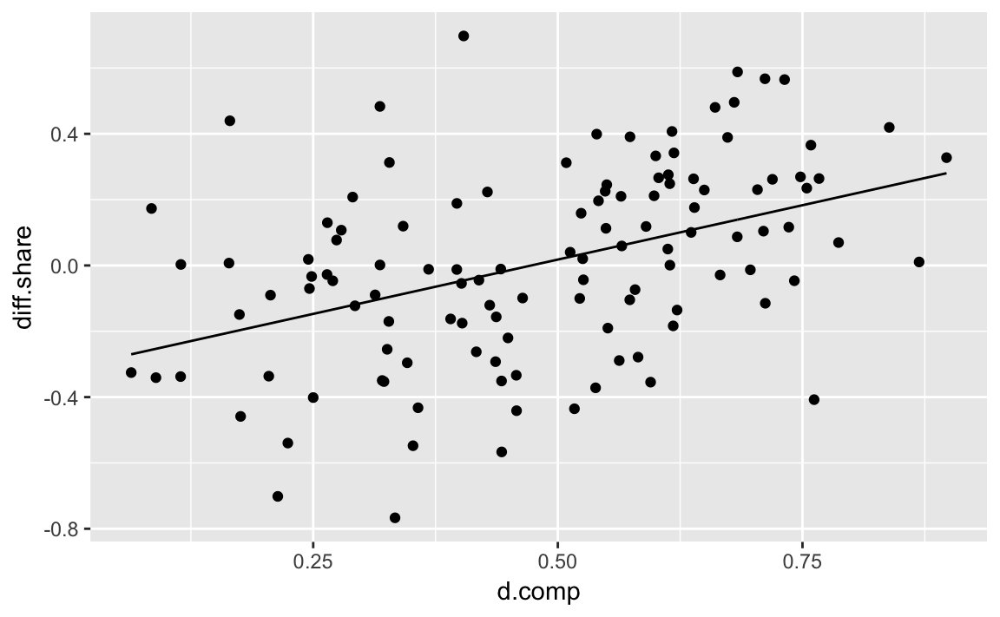
Challenge: What other ways could you visualize the results? How would you show all states? What about plotting the absolute or squared errors instead of the errors?
Challenge: What happens to prediction error if you average polls? Consider averaging back over time? What happens if you take the averages of the state poll average and average of all polls - does that improve prediction?
To create a scatter plots using the state abbreviations instead of points use geom_text instead of geom_point.
ggplot(last_polls, aes(x = margin, y = elec_margin, label = state)) +
geom_abline(color = "white", size = 2) +
geom_hline(yintercept = 0, color = "gray", size = 2) +
geom_vline(xintercept = 0, color = "gray", size = 2) +
geom_text() +
coord_fixed() +
labs(x = "Poll Results", y = "Actual Election Results")
We can create a confusion matrix as follows. Create a new column classification which shows how the poll’s classification was related to the actual election outcome (“true positive”, “false positive”, “true negative”, “false negative”). If there were two outcomes, then we would use the function. But with more than two outcomes, it is easier to use the dplyr function .
last_polls <-
last_polls %>%
ungroup() %>%
mutate(classification =
case_when(
(.$margin > 0 & .$elec_margin > 0) ~ "true positive",
(.$margin > 0 & .$elec_margin < 0) ~ "false positive",
(.$margin < 0 & .$elec_margin < 0) ~ "true negative",
(.$margin < 0 & .$elec_margin > 0) ~ "false negative"
))You need to use . to refer to the data frame when using case_when() within mutate(). Also, we needed to first use in order to remove the grouping variable so mutate() will work.
Now simply count the number of polls in each category of classification:
last_polls %>%
group_by(classification) %>%
count()
#> # A tibble: 4 x 2
#> # Groups: classification [4]
#> classification n
#> <chr> <int>
#> 1 false negative 2
#> 2 false positive 1
#> 3 true negative 21
#> 4 true positive 27Which states were incorrectly predicted by the polls, and what was their margins?
last_polls %>%
filter(classification %in% c("false positive", "false negative")) %>%
select(state, margin, elec_margin, classification) %>%
arrange(desc(elec_margin))
#> # A tibble: 3 x 4
#> state margin elec_margin classification
#> <chr> <int> <int> <chr>
#> 1 IN -5 1 false negative
#> 2 NC -1 1 false negative
#> 3 MO 1 -1 false positiveWhat was the difference in the poll prediction of electoral votes and actual electoral votes? We hadn’t included the variable EV when we first merged, but that’s no problem, we’ll just merge again in order to grab that variable:
last_polls %>%
left_join(select(pres08, state, EV), by = "state") %>%
summarise(EV_pred = sum( (margin > 0) * EV),
EV_actual = sum( (elec_margin > 0) * EV))
#> # A tibble: 1 x 2
#> EV_pred EV_actual
#> <int> <int>
#> 1 349 364We’ll produce the seven-day averages slightly differently than the method used in the text. For all dates in the data, we’ll calculate the moving average. The code presented in QSS uses a for loop similar to the following:
all_dates <- seq(min(polls08$middate), ELECTION_DAY, by = "days")
# Number of poll days to use
POLL_DAYS <- 7
pop_vote_avg <- vector(length(all_dates), mode = "list")
for (i in seq_along(all_dates)) {
date <- all_dates[i]
# summarise the seven day
week_data <-
filter(polls08,
as.integer(middate - date) <= 0,
as.integer(middate - date) > - POLL_DAYS) %>%
summarise(Obama = mean(Obama, na.rm = TRUE),
McCain = mean(McCain, na.rm = TRUE))
# add date for the observation
week_data$date <- date
pop_vote_avg[[i]] <- week_data
}
pop_vote_avg <- bind_rows(pop_vote_avg)Write a function which takes a date, and calculates the days (set the default to 7 days) moving average using the dataset .data:
poll_ma <- function(date, .data, days = 7) {
filter(.data,
as.integer(middate - date) <= 0,
as.integer(middate - date) > - !!days) %>%
summarise(Obama = mean(Obama, na.rm = TRUE),
McCain = mean(McCain, na.rm = TRUE)) %>%
mutate(date = !!date)
}The code above uses !!. This tells filter that days refers to a variable days in the calling environment, and not a column named days in the data frame. In this case, there wouldn’t be any ambiguities since there is not a column named days, but in general there can be ambiguities in the dplyr functions as to whether the names refer to columns in the data frame or variables in the environment calling the function. Read Programming with dplyr for an in-depth discussion of this.
This returns a one row data frame with the moving average for McCain and Obama on Nov 1, 2008.
Since we made days an argument to the function we could easily change the code to calculate other moving averages,
Now use a functional to execute that function with all dates for which we want moving averages. The function poll_ma returns a data frame, and our ideal output is a data frame that stacks those data frames row-wise. So we will use the map_df function,
Note that the other arguments for poll_ma are placed after the name of the function as additional arguments to map_df.
It is easier to plot this if the data are tidy, with Obama and McCain as categories of a column candidate.
pop_vote_avg_tidy <-
pop_vote_avg %>%
gather(candidate, share, -date, na.rm = TRUE)
head(pop_vote_avg_tidy)
#> date candidate share
#> 1 2008-01-01 Obama 46.5
#> 2 2008-01-02 Obama 46.5
#> 3 2008-01-03 Obama 46.5
#> 4 2008-01-04 Obama 46.5
#> 5 2008-01-05 Obama 46.5
#> 6 2008-01-06 Obama 46.5ggplot(pop_vote_avg_tidy, aes(x = date, y = share,
colour = fct_reorder2(candidate, date, share))) +
geom_point() +
geom_line() +
scale_colour_manual("Candidate",
values = c(Obama = "blue", McCain = "red"))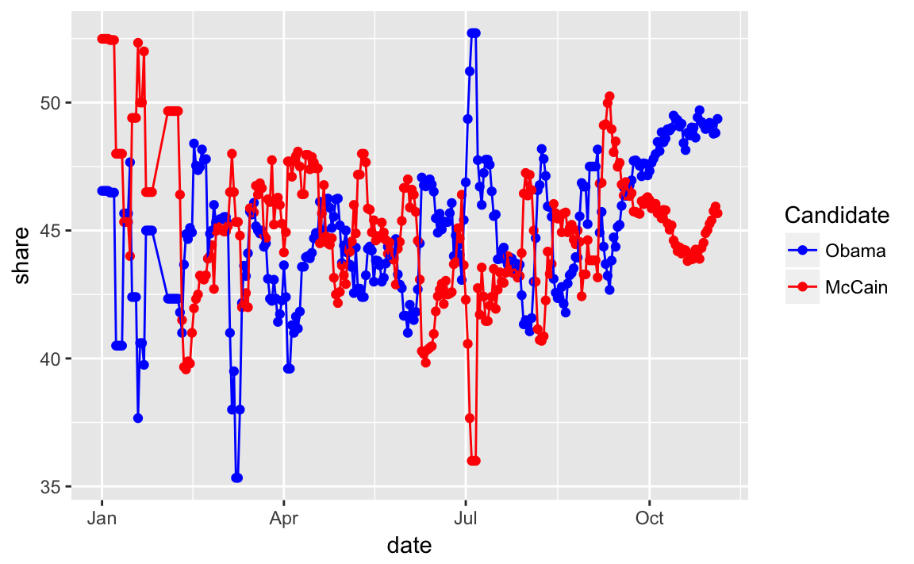
Challenge read R for Data Science chapter Iteration and use the function map_df to create the object poll_vote_avg as above instead of a for loop.
The 7-day average is similar to the simple method used by Real Clear Politics. The RCP average is simply the average of all polls in their data for the last seven days. Sites like 538 and the Huffpost Pollster, on the other hand, also use what amounts to averaging polls, but using more sophisticated statistical methods to assign different weights to different polls.
Challenge Why do we need to use different polls for the popular vote data? Why not simply average all the state polls? What would you have to do? Would the overall popular vote be useful in predicting state-level polling, or vice-versa? How would you use them?
4.2 Linear Regression
4.2.1 Facial Appearance and Election Outcomes
Load the face dataset:
Add Democrat and Republican vote shares, and the difference in shares:
face <- mutate(face,
d.share = d.votes / (d.votes + r.votes),
r.share = r.votes / (d.votes + r.votes),
diff.share = d.share - r.share)Plot facial competence vs. vote share:
ggplot(face, aes(x = d.comp, y = diff.share, colour = w.party)) +
geom_ref_line(h = 0) +
geom_point() +
scale_colour_manual("Winning\nParty",
values = c(D = "blue", R = "red")) +
labs(x = "Competence scores for Democrats",
y = "Democratic margin in vote share")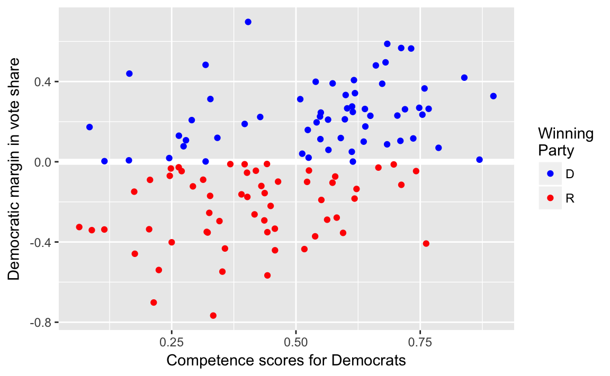
4.2.2 Correlation and Scatter Plots
4.2.3 Least Squares
Run the linear regression
fit <- lm(diff.share ~ d.comp, data = face)
fit
#>
#> Call:
#> lm(formula = diff.share ~ d.comp, data = face)
#>
#> Coefficients:
#> (Intercept) d.comp
#> -0.312 0.660There are many functions to get data out of the lm model.
In addition to these, the broom package provides three functions: glance, tidy, and augment that always return data frames.
The function glance returns a one-row data-frame summary of the model,
glance(fit)
#> r.squared adj.r.squared sigma statistic p.value df logLik AIC BIC
#> 1 0.187 0.18 0.266 27 8.85e-07 2 -10.5 27 35.3
#> deviance df.residual
#> 1 8.31 117The function tidy returns a data frame in which each row is a coefficient,
tidy(fit)
#> term estimate std.error statistic p.value
#> 1 (Intercept) -0.312 0.066 -4.73 6.24e-06
#> 2 d.comp 0.660 0.127 5.19 8.85e-07The function augment returns the original data with fitted values, residuals, and other observation level stats from the model appended to it.
augment(fit) %>% head()
#> diff.share d.comp .fitted .se.fit .resid .hat .sigma .cooksd
#> 1 0.2101 0.565 0.0606 0.0266 0.1495 0.00996 0.267 0.001600
#> 2 0.1194 0.342 -0.0864 0.0302 0.2059 0.01286 0.267 0.003938
#> 3 0.0499 0.612 0.0922 0.0295 -0.0423 0.01229 0.268 0.000158
#> 4 0.1965 0.542 0.0454 0.0256 0.1511 0.00922 0.267 0.001510
#> 5 0.4958 0.680 0.1370 0.0351 0.3588 0.01737 0.266 0.016307
#> 6 -0.3495 0.321 -0.1006 0.0319 -0.2490 0.01433 0.267 0.006436
#> .std.resid
#> 1 0.564
#> 2 0.778
#> 3 -0.160
#> 4 0.570
#> 5 1.358
#> 6 -0.941We can plot the results of the bivariate linear regression as follows:
ggplot() +
geom_point(data = face, mapping = aes(x = d.comp, y = diff.share)) +
geom_ref_line(v = mean(face$d.comp)) +
geom_ref_line(h = mean(face$diff.share)) +
geom_abline(slope = coef(fit)["d.comp"],
intercept = coef(fit)["(Intercept)"],
colour = "red") +
annotate("text", x = 0.9, y = mean(face$diff.share) + 0.05,
label = "Mean of Y", color = "blue", vjust = 0) +
annotate("text", y = -0.9, x = mean(face$d.comp), label = "Mean of X",
color = "blue", hjust = 0) +
scale_y_continuous("Democratic margin in vote shares",
breaks = seq(-1, 1, by = 0.5), limits = c(-1, 1)) +
scale_x_continuous("Democratic margin in vote shares",
breaks = seq(0, 1, by = 0.2), limits = c(0, 1)) +
ggtitle("Facial compotence and vote share")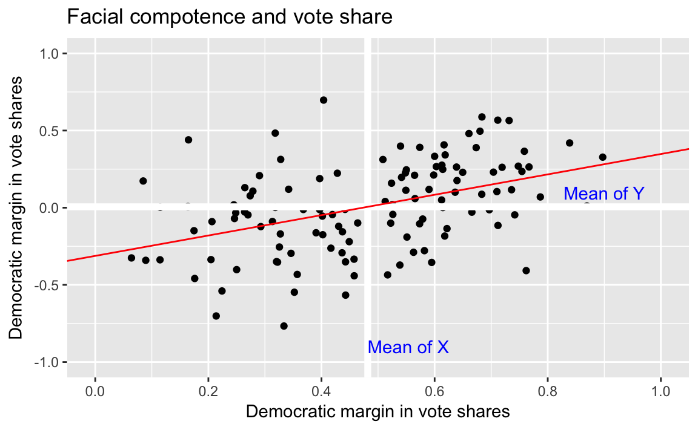
A more general way to plot the predictions of the model against the data is to use the methods described in Ch 23.3.3 of R4DS. Create an evenly spaced grid of values of d.comp, and add predictions of the model to it.
grid <- face %>%
data_grid(d.comp) %>%
add_predictions(fit)
head(grid)
#> # A tibble: 6 x 2
#> d.comp pred
#> <dbl> <dbl>
#> 1 0.0640 -0.270
#> 2 0.0847 -0.256
#> 3 0.0893 -0.253
#> 4 0.115 -0.237
#> 5 0.115 -0.236
#> 6 0.164 -0.204Now we can plot the regression line and the original data just like any other plot.
ggplot() +
geom_point(data = face, mapping = aes(x = d.comp, y = diff.share)) +
geom_line(data = grid, mapping = aes(x = d.comp, y = pred),
colour = "red")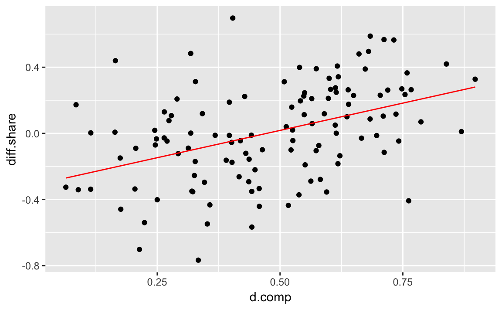 This method is more complicated than the geom_abline method for a bivariate regression, but will work for more complicated models, while the geom_abline method won’t.
Note that geom_smooth can be used to add a regression line to a data-set.
ggplot(data = face, mapping = aes(x = d.comp, y = diff.share)) +
geom_point() +
geom_smooth(method = "lm", se = FALSE)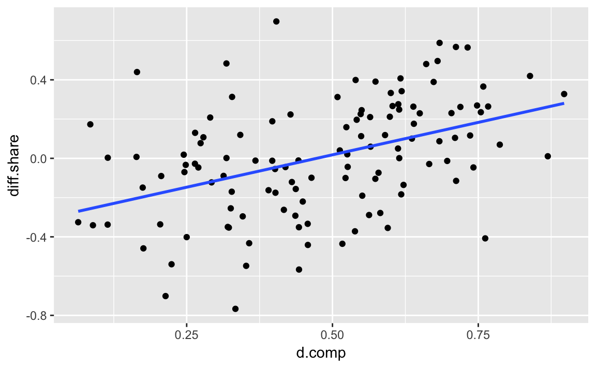 The argument method = "lm" specifies that the function lm is to be used to generate fitted values. It is equivalent to running the regression lm(y ~ x) and plotting the regression line, where y and x are the aesthetics specified by the mappings. The argument se = FALSE tells the function not to plot the confidence interval of the regression (discussed later).
4.2.4 Regression towards the mean
4.2.5 Merging Data Sets in R
See the R for Data Science chapter Relational data.
To join both data frames
However, since there are duplicate names, .x and .y are appended.
Challenge What would happen if by = "state" was dropped?
To avoid the duplicate names, or change them, you can rename before merging,
full_join(select(pres08, state, Obama_08 = Obama, McCain_08 = McCain,
EV_08 = EV),
select(pres12, state, Obama_12 = Obama, Romney_12 = Romney,
EV_12 = EV),
by = "state")or use the suffix argument to full_join
pres <- full_join(pres08, pres12, by = "state", suffix = c("_08", "_12"))
head(pres)
#> state.name state Obama_08 McCain EV_08 margin Obama_12 Romney EV_12
#> 1 Alabama AL 39 60 9 -21 38 61 9
#> 2 Alaska AK 38 59 3 -21 41 55 3
#> 3 Arizona AZ 45 54 10 -9 45 54 11
#> 4 Arkansas AR 39 59 6 -20 37 61 6
#> 5 California CA 61 37 55 24 60 37 55
#> 6 Colorado CO 54 45 9 9 51 46 9Challenge Would you consider this data tidy? How would you make it tidy?
The dplyr equivalent functions for cbind is bind_cols.
pres <- pres %>%
mutate(Obama2008_z = as.numeric(scale(Obama_08)),
Obama2012_z = as.numeric(scale(Obama_12)))Likewise, bind_cols concatenates data frames by row.
We need to use the as.numeric function because scale() always returns a matrix. Omitting as.numeric() would not produce an error in the code chunk above, since the columns of a data frame can be matrices, but it would produce errors in some of the following code if it were omitted.
Scatter plot of states with vote shares in 2008 and 2012
ggplot(pres, aes(x = Obama2008_z, y = Obama2012_z, label = state)) +
geom_abline(colour = "white", size = 2) +
geom_text() +
coord_fixed() +
scale_x_continuous("Obama's standardized vote share in 2008",
limits = c(-4, 4)) +
scale_y_continuous("Obama's standardized vote share in 2012",
limits = c(-4, 4))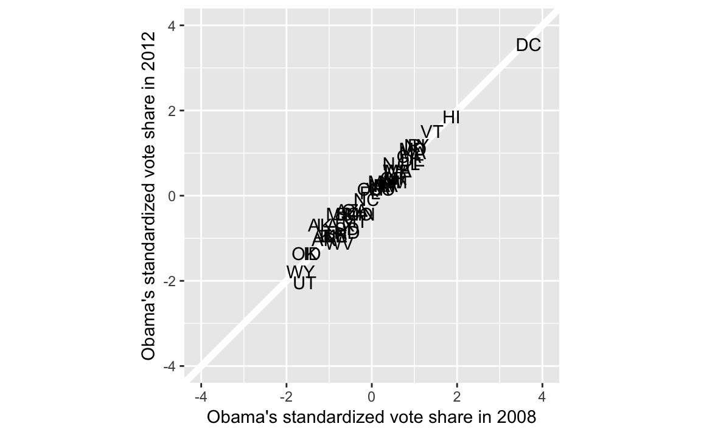
To calculate the bottom and top quartiles
pres %>%
filter(Obama2008_z < quantile(Obama2008_z, 0.25)) %>%
summarise(improve = mean(Obama2012_z > Obama2008_z))
#> improve
#> 1 0.583
pres %>%
filter(Obama2008_z < quantile(Obama2008_z, 0.75)) %>%
summarise(improve = mean(Obama2012_z > Obama2008_z))
#> improve
#> 1 0.5Challenge: Why is it important to standardize the vote shares?
4.2.6 Model Fit
data("florida", package = "qss")
fit2 <- lm(Buchanan00 ~ Perot96, data = florida)
fit2
#>
#> Call:
#> lm(formula = Buchanan00 ~ Perot96, data = florida)
#>
#> Coefficients:
#> (Intercept) Perot96
#> 1.3458 0.0359Extract \(R ^ 2\) from the results of summary,
Alternatively, can get the R squared value from the data frame glance returns:
glance(fit2)
#> r.squared adj.r.squared sigma statistic p.value df logLik AIC BIC
#> 1 0.513 0.506 316 68.5 9.47e-12 2 -480 966 972
#> deviance df.residual
#> 1 6506118 65We can add predictions and residuals to the original data frame using the modelr functions add_residuals and add_predictions
florida <-
florida %>%
add_predictions(fit2) %>%
add_residuals(fit2)
glimpse(florida)
#> Observations: 67
#> Variables: 9
#> $ county <chr> "Alachua", "Baker", "Bay", "Bradford", "Brevard", "...
#> $ Clinton96 <int> 40144, 2273, 17020, 3356, 80416, 320736, 1794, 2712...
#> $ Dole96 <int> 25303, 3684, 28290, 4038, 87980, 142834, 1717, 2783...
#> $ Perot96 <int> 8072, 667, 5922, 819, 25249, 38964, 630, 7783, 7244...
#> $ Bush00 <int> 34124, 5610, 38637, 5414, 115185, 177323, 2873, 354...
#> $ Gore00 <int> 47365, 2392, 18850, 3075, 97318, 386561, 2155, 2964...
#> $ Buchanan00 <int> 263, 73, 248, 65, 570, 788, 90, 182, 270, 186, 122,...
#> $ pred <dbl> 291.3, 25.3, 214.0, 30.8, 908.2, 1400.7, 24.0, 280....
#> $ resid <dbl> -2.83e+01, 4.77e+01, 3.40e+01, 3.42e+01, -3.38e+02,...There are now two new columns in florida, pred with the fitted values (predictions), and resid with the residuals.
Use fit2_augment to create a residual plot:
fit2_resid_plot <-
ggplot(florida, aes(x = pred, y = resid)) +
geom_ref_line(h = 0) +
geom_point() +
labs(x = "Fitted values", y = "residuals")
fit2_resid_plot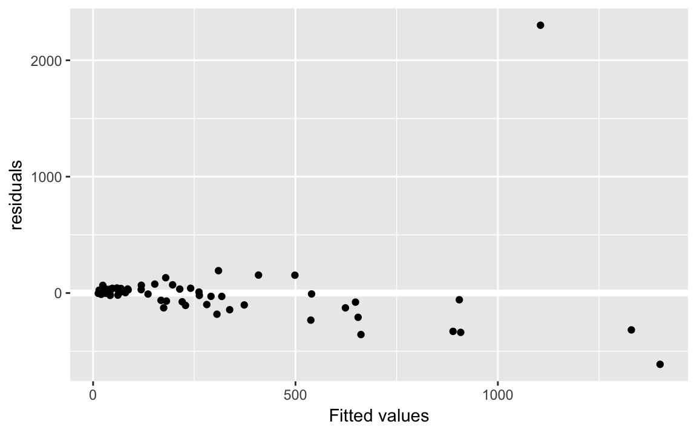 Note, we use the function geom_refline to add a reference line at 0.
Let’s add some labels to points, who is that outlier?
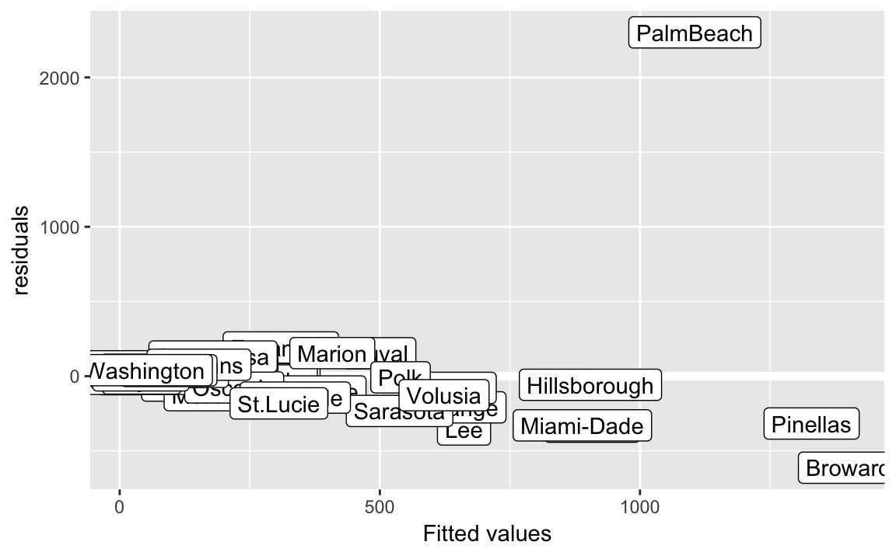
The outlier county is “Palm Beach”
arrange(florida) %>%
arrange(desc(abs(resid))) %>%
select(county, resid) %>%
head()
#> county resid
#> 1 PalmBeach 2302
#> 2 Broward -613
#> 3 Lee -357
#> 4 Brevard -338
#> 5 Miami-Dade -329
#> 6 Pinellas -317Data without Palm Beach
florida_pb <- filter(florida, county != "PalmBeach")
fit3 <- lm(Buchanan00 ~ Perot96, data = florida_pb)
fit3
#>
#> Call:
#> lm(formula = Buchanan00 ~ Perot96, data = florida_pb)
#>
#> Coefficients:
#> (Intercept) Perot96
#> 45.8419 0.0244\(R^2\) or coefficient of determination
glance(fit3)
#> r.squared adj.r.squared sigma statistic p.value df logLik AIC BIC
#> 1 0.851 0.849 87.7 366 3.61e-28 2 -388 782 788
#> deviance df.residual
#> 1 492803 64florida_pb %>%
add_residuals(fit3) %>%
add_predictions(fit3) %>%
ggplot(aes(x = pred, y = resid)) +
geom_ref_line(h = 0) +
geom_point() +
ylim(-750, 2500) +
xlim(0, 1500) +
labs(x = "Fitted values", y = "residuals")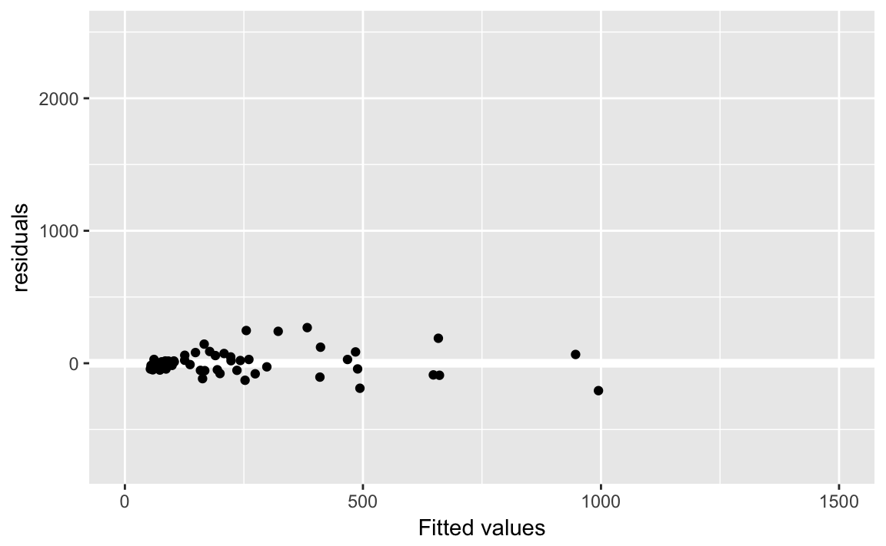
Create predictions for both models using data_grid and gather_predictions:
florida_grid <-
florida %>%
data_grid(Perot96) %>%
gather_predictions(fit2, fit3) %>%
mutate(model =
fct_recode(model,
"Regression\n with Palm Beach" = "fit2",
"Regression\n without Palm Beach" = "fit3"))Note this is an example of using non-syntactic column names in a tibble, as discussed in Chapter 10 of R for data science.
ggplot() +
geom_point(data = florida, mapping = aes(x = Perot96, y = Buchanan00)) +
geom_line(data = florida_grid,
mapping = aes(x = Perot96, y = pred,
colour = model)) +
geom_label(data = filter(florida, county == "PalmBeach"),
mapping = aes(x = Perot96, y = Buchanan00, label = county),
vjust = "top", hjust = "right") +
geom_text(data = tibble(label = unique(florida_grid$model),
x = c(20000, 31000),
y = c(1000, 300)),
mapping = aes(x = x, y = y, label = label, colour = label)) +
labs(x = "Perot's Vote in 1996", y = "Buchanan's Votes in 1996") +
theme(legend.position = "none")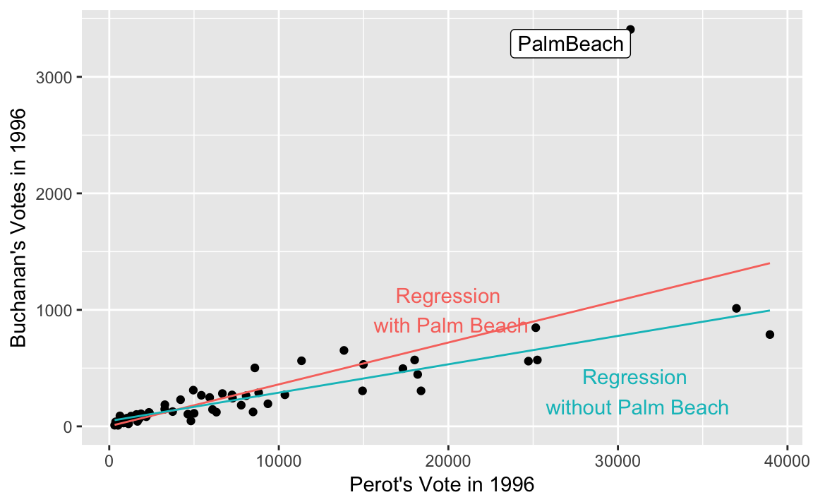 See Graphics for communication in R for Data Science on labels and annotations in plots.
4.3 Regression and Causation
4.3.1 Randomized Experiments
Load data
Proportion of female politicians in reserved GP vs. unreserved GP
women %>%
group_by(reserved) %>%
summarise(prop_female = mean(female))
#> # A tibble: 2 x 2
#> reserved prop_female
#> <int> <dbl>
#> 1 0 0.0748
#> 2 1 1.00The diff in means estimator:
# drinking water facilities
# irrigation facilities
mean(women$irrigation[women$reserved == 1]) -
mean(women$irrigation[women$reserved == 0])
#> [1] -0.369Mean values of irrigation and water in reserved and non-reserved districts.
women %>%
group_by(reserved) %>%
summarise(irrigation = mean(irrigation),
water = mean(water))
#> # A tibble: 2 x 3
#> reserved irrigation water
#> <int> <dbl> <dbl>
#> 1 0 3.39 14.7
#> 2 1 3.02 24.0The difference between the two groups can be calculated with the function diff, which calculates the difference between subsequent observations. This works as long as we are careful about which group is first or second.
women %>%
group_by(reserved) %>%
summarise(irrigation = mean(irrigation),
water = mean(water)) %>%
summarise(diff_irrigation = diff(irrigation),
diff_water = diff(water))
#> # A tibble: 1 x 2
#> diff_irrigation diff_water
#> <dbl> <dbl>
#> 1 -0.369 9.25The other way uses tidyr spread and gather,
women %>%
group_by(reserved) %>%
summarise(irrigation = mean(irrigation),
water = mean(water)) %>%
gather(variable, value, -reserved) %>%
spread(reserved, value) %>%
mutate(diff = `1` - `0`)
#> # A tibble: 2 x 4
#> variable `0` `1` diff
#> <chr> <dbl> <dbl> <dbl>
#> 1 irrigation 3.39 3.02 -0.369
#> 2 water 14.7 24.0 9.25Now each row is an outcome variable of interest, and there are columns for the treatment (1) and control (0) groups, and the difference (diff).
4.3.2 Regression with multiple predictors
data("social", package = "qss")
glimpse(social)
#> Observations: 305,866
#> Variables: 6
#> $ sex <chr> "male", "female", "male", "female", "female", "mal...
#> $ yearofbirth <int> 1941, 1947, 1951, 1950, 1982, 1981, 1959, 1956, 19...
#> $ primary2004 <int> 0, 0, 0, 0, 0, 0, 0, 0, 0, 0, 1, 0, 0, 1, 1, 1, 0,...
#> $ messages <chr> "Civic Duty", "Civic Duty", "Hawthorne", "Hawthorn...
#> $ primary2006 <int> 0, 0, 1, 1, 1, 0, 1, 1, 0, 0, 1, 0, 1, 0, 1, 1, 1,...
#> $ hhsize <int> 2, 2, 3, 3, 3, 3, 3, 3, 2, 2, 1, 2, 2, 1, 2, 2, 1,...
levels(social$messages)
#> NULL
fit <- lm(primary2006 ~ messages, data = social)
fit
#>
#> Call:
#> lm(formula = primary2006 ~ messages, data = social)
#>
#> Coefficients:
#> (Intercept) messagesControl messagesHawthorne
#> 0.31454 -0.01790 0.00784
#> messagesNeighbors
#> 0.06341Create indicator variables for each message:
social <-
social %>%
mutate(Control = as.integer(messages == "Control"),
Hawthorne = as.integer(messages == "Hawthorne"),
Neighbors = as.integer(messages == "Neighbors"))alternatively, create these using a for loop. This is easier to understand and less prone to typos:
We created a variable for each level of messages even though we will exclude one of them.
lm(primary2006 ~ Control + Hawthorne + Neighbors, data = social)
#>
#> Call:
#> lm(formula = primary2006 ~ Control + Hawthorne + Neighbors, data = social)
#>
#> Coefficients:
#> (Intercept) Control Hawthorne Neighbors
#> 0.31454 -0.01790 0.00784 0.06341Create predictions for each unique value of messages
unique_messages <-
data_grid(social, messages) %>%
add_predictions(fit)
unique_messages
#> # A tibble: 4 x 2
#> messages pred
#> <chr> <dbl>
#> 1 Civic Duty 0.315
#> 2 Control 0.297
#> 3 Hawthorne 0.322
#> 4 Neighbors 0.378Compare to the sample averages
social %>%
group_by(messages) %>%
summarise(mean(primary2006))
#> # A tibble: 4 x 2
#> messages `mean(primary2006)`
#> <chr> <dbl>
#> 1 Civic Duty 0.315
#> 2 Control 0.297
#> 3 Hawthorne 0.322
#> 4 Neighbors 0.378Linear regression without intercept.
fit.noint <- lm(primary2006 ~ -1 + messages, data = social)
fit.noint
#>
#> Call:
#> lm(formula = primary2006 ~ -1 + messages, data = social)
#>
#> Coefficients:
#> messagesCivic Duty messagesControl messagesHawthorne
#> 0.315 0.297 0.322
#> messagesNeighbors
#> 0.378Calculating the regression average effect is also easier if we make the control group the first level so all regression coefficients are comparisons to it. Use fct_relevel to make “Control”
fit.control <-
mutate(social, messages = fct_relevel(messages, "Control")) %>%
lm(primary2006 ~ messages, data = .)
fit.control
#>
#> Call:
#> lm(formula = primary2006 ~ messages, data = .)
#>
#> Coefficients:
#> (Intercept) messagesCivic Duty messagesHawthorne
#> 0.2966 0.0179 0.0257
#> messagesNeighbors
#> 0.0813Difference in means
social %>%
group_by(messages) %>%
summarise(primary2006 = mean(primary2006)) %>%
mutate(Control = primary2006[messages == "Control"],
diff = primary2006 - Control)
#> # A tibble: 4 x 4
#> messages primary2006 Control diff
#> <chr> <dbl> <dbl> <dbl>
#> 1 Civic Duty 0.315 0.297 0.0179
#> 2 Control 0.297 0.297 0
#> 3 Hawthorne 0.322 0.297 0.0257
#> 4 Neighbors 0.378 0.297 0.0813Adjusted R-squared is included in the output of broom::glance()
4.3.3 Heterogeneous Treatment Effects
Average treatment effect (ate) among those who voted in 2004 primary
ate <-
social %>%
group_by(primary2004, messages) %>%
summarise(primary2006 = mean(primary2006)) %>%
spread(messages, primary2006) %>%
mutate(ate_Neighbors = Neighbors - Control) %>%
select(primary2004, Neighbors, Control, ate_Neighbors)
ate
#> # A tibble: 2 x 4
#> # Groups: primary2004 [2]
#> primary2004 Neighbors Control ate_Neighbors
#> <int> <dbl> <dbl> <dbl>
#> 1 0 0.306 0.237 0.0693
#> 2 1 0.482 0.386 0.0965Difference in ATE in 2004 voters and non-voters
social.neighbor <- social %>%
filter( (messages == "Control") | (messages == "Neighbors"))
fit.int <- lm(primary2006 ~ primary2004 + messages + primary2004:messages,
data = social.neighbor)
fit.int
#>
#> Call:
#> lm(formula = primary2006 ~ primary2004 + messages + primary2004:messages,
#> data = social.neighbor)
#>
#> Coefficients:
#> (Intercept) primary2004
#> 0.2371 0.1487
#> messagesNeighbors primary2004:messagesNeighbors
#> 0.0693 0.0272lm(primary2006 ~ primary2004 * messages, data = social.neighbor)
#>
#> Call:
#> lm(formula = primary2006 ~ primary2004 * messages, data = social.neighbor)
#>
#> Coefficients:
#> (Intercept) primary2004
#> 0.2371 0.1487
#> messagesNeighbors primary2004:messagesNeighbors
#> 0.0693 0.0272social.neighbor <-
social.neighbor %>%
mutate(age = 2008 - yearofbirth)
summary(social.neighbor$age)
#> Min. 1st Qu. Median Mean 3rd Qu. Max.
#> 22.0 43.0 52.0 51.8 61.0 108.0
fit.age <- lm(primary2006 ~ age * messages, data = social.neighbor)
fit.age
#>
#> Call:
#> lm(formula = primary2006 ~ age * messages, data = social.neighbor)
#>
#> Coefficients:
#> (Intercept) age messagesNeighbors
#> 0.089477 0.003998 0.048573
#> age:messagesNeighbors
#> 0.000628Calculate average treatment effects
ate.age <-
crossing(age = seq(from = 25, to = 85, by = 20),
messages = c("Neighbors", "Control")) %>%
add_predictions(fit.age) %>%
spread(messages, pred) %>%
mutate(diff = Neighbors - Control)
ate.age
#> # A tibble: 4 x 4
#> age Control Neighbors diff
#> <dbl> <dbl> <dbl> <dbl>
#> 1 25.0 0.189 0.254 0.0643
#> 2 45.0 0.269 0.346 0.0768
#> 3 65.0 0.349 0.439 0.0894
#> 4 85.0 0.429 0.531 0.102You can use poly function to calculate polynomials instead of adding each term, age + I(age ^ 2). Though note that the coefficients will be be different since by default poly calculates orthogonal polynomials instead of the natural (raw) polynomials. However, you really shouldn’t interpret the coefficients directly anyways, so this should matter.
fit.age2 <- lm(primary2006 ~ poly(age, 2) * messages,
data = social.neighbor)
fit.age2
#>
#> Call:
#> lm(formula = primary2006 ~ poly(age, 2) * messages, data = social.neighbor)
#>
#> Coefficients:
#> (Intercept) poly(age, 2)1
#> 0.2966 27.6665
#> poly(age, 2)2 messagesNeighbors
#> -10.2832 0.0816
#> poly(age, 2)1:messagesNeighbors poly(age, 2)2:messagesNeighbors
#> 4.5820 -5.5124Create a data frame of combinations of ages and messages using data_grid, which means that we only need to specify the variables, and not the specific values,
ggplot(y.hat, aes(x = age, y = pred,
colour = str_c(messages, " condition"))) +
geom_line() +
labs(colour = "", y = "Predicted turnout rates") +
theme(legend.position = "bottom")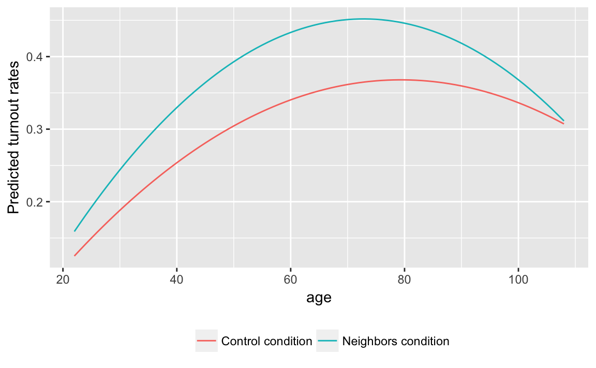
y.hat %>%
spread(messages, pred) %>%
mutate(ate = Neighbors - Control) %>%
filter(age > 20, age < 90) %>%
ggplot(aes(x = age, y = ate)) +
geom_line() +
labs(y = "Estimated average treatment effect",
x = "Age") +
ylim(0, 0.1)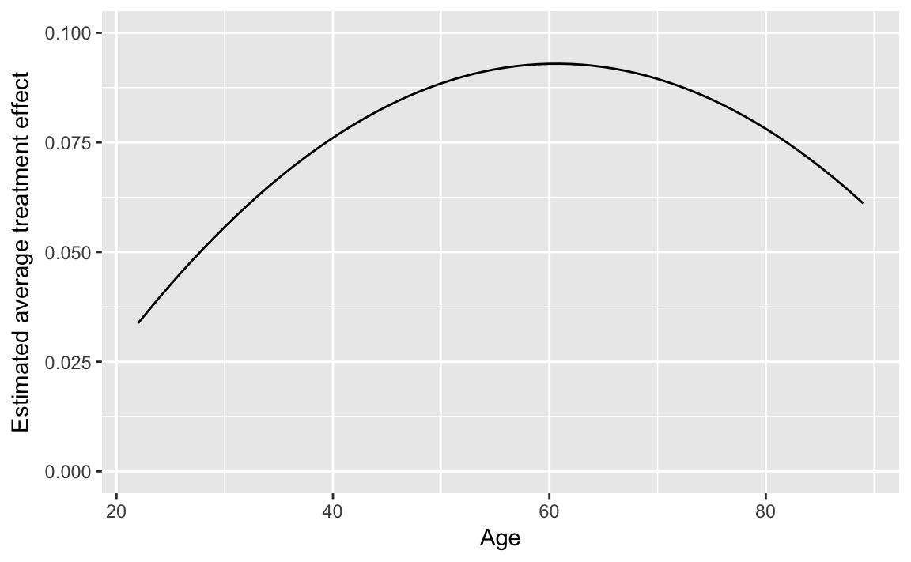
4.3.4 Regression Discontinuity Design
data("MPs", package = "qss")
MPs_labour <- filter(MPs, party == "labour")
MPs_tory <- filter(MPs, party == "tory")
labour_fit1 <- lm(ln.net ~ margin,
data = filter(MPs_labour, margin < 0))
labour_fit2 <- lm(ln.net ~ margin, MPs_labour, margin > 0)
tory_fit1 <- lm(ln.net ~ margin,
data = filter(MPs_tory, margin < 0))
tory_fit2 <- lm(ln.net ~ margin, data = filter(MPs_tory, margin > 0))Use to generate a grid for predictions.
y1_labour <-
filter(MPs_labour, margin < 0) %>%
data_grid(margin) %>%
add_predictions(labour_fit1)
y2_labour <-
filter(MPs_labour, margin > 0) %>%
data_grid(margin) %>%
add_predictions(labour_fit2)
y1_tory <-
filter(MPs_tory, margin < 0) %>%
data_grid(margin) %>%
add_predictions(tory_fit1)
y2_tory <-
filter(MPs_tory, margin > 0) %>%
data_grid(margin) %>%
add_predictions(tory_fit2)Tory politicians
ggplot() +
geom_ref_line(v = 0) +
geom_point(data = MPs_tory,
mapping = aes(x = margin, y = ln.net)) +
geom_line(data = y1_tory,
mapping = aes(x = margin, y = pred), colour = "red", size = 1.5) +
geom_line(data = y2_tory,
mapping = aes(x = margin, y = pred), colour = "red", size = 1.5) +
labs(x = "margin of victory", y = "log net wealth at death",
title = "labour")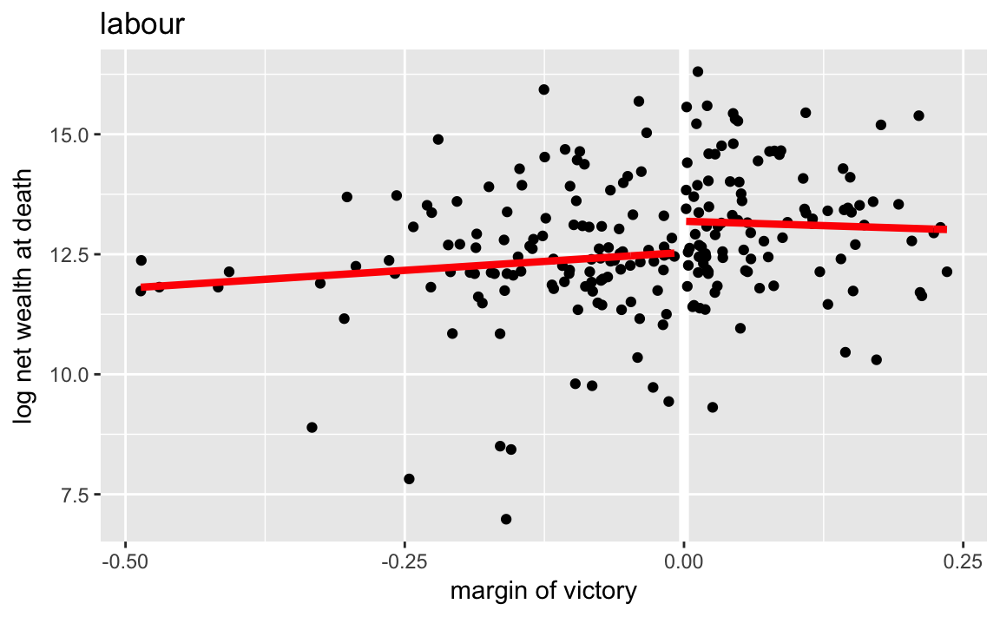
We can actually produce this plot easily without running the regressions, by using geom_smooth:
ggplot(mutate(MPs, winner = (margin > 0)),
aes(x = margin, y = ln.net)) +
geom_ref_line(v = 0) +
geom_point() +
geom_smooth(method = lm, se = FALSE, mapping = aes(group = winner)) +
facet_grid(party ~ .) +
labs(x = "margin of victory", y = "log net wealth at death")
In the previous code, I didn’t directly compute the the average net wealth at 0, so I’ll need to do that here. I’ll use gather_predictions to add predictions for multiple models:
5 Discovery
The idea of tidy data and the common feature of tidyverse packages is that data should be stored in data frames with certain conventions. This works well with naturally tabular data, the type which has been common in social science applications. But there are other domains in which other data structures are more appropriate because they more naturally model the data or processes, or for computational reasons. The three applications in this chapter: text, networks, and spatial data are examples where the tidy data structure is less of an advantage. I will still rely on ggplot2 for plotting, and use tidy verse compatible packages where appropriate.
- Textual data: tidytext
- Network data: igraph for network computation, as in the chapter. But several ggplot22 extension packages for plotting the networks.
- Spatial data: ggplot2 has some built-in support for maps. The map package provides map data.
See the R for Data Science section 12.7 Non-tidy data and this post on Non-tidy data by Jeff Leek for more on non-tidy data.
5.1 Textual data
Prerequisites
library("tidyverse")
library("lubridate")
library("stringr")
library("forcats")
library("modelr")
library("tm")
library("SnowballC")
library("tidytext")
library("wordcloud")This section will primarily use the tidytext package. It is a relatively new package. The tm and quanteda (by Ken Benoit) packages are more established and use the document-term matrix format as described in the QSS chapter. The tidytext package stores everything in a data frame; this may be less efficient than the other packages, but has the benefit of being able to easily take advantage of the tidyverse ecosystem. If your corpus is not too large, this shouldn’t be an issue.
See Tidy Text Mining with R for a full introduction to using tidytext.
In tidy data, each row is an observation and each column is a variable. In the tidytext package, documents are stored as data frames with one-term-per-row.
We can cast data into the tidytext format either from the Corpus object, or, after processing, from the document-term matrix object.
DIR_SOURCE <- system.file("extdata/federalist", package = "qss")
corpus_raw <- VCorpus(DirSource(directory = DIR_SOURCE, pattern = "fp"))
corpus_raw
#> <<VCorpus>>
#> Metadata: corpus specific: 0, document level (indexed): 0
#> Content: documents: 85Use the function tidy to convert the to a data frame with one row per document.
corpus_tidy <- tidy(corpus_raw, "corpus")
corpus_tidy
#> # A tibble: 85 x 8
#> author datetimestamp description heading id lang… orig… text
#> <lgl> <dttm> <lgl> <lgl> <chr> <chr> <lgl> <chr>
#> 1 NA 2018-01-13 13:32:27 NA NA fp01.… en NA AFTER…
#> 2 NA 2018-01-13 13:32:27 NA NA fp02.… en NA "WHEN…
#> 3 NA 2018-01-13 13:32:27 NA NA fp03.… en NA IT IS…
#> 4 NA 2018-01-13 13:32:27 NA NA fp04.… en NA "MY L…
#> 5 NA 2018-01-13 13:32:27 NA NA fp05.… en NA "QUEE…
#> 6 NA 2018-01-13 13:32:27 NA NA fp06.… en NA "THE …
#> # ... with 79 more rowsThe text column contains the text of the documents themselves. Since most of the metadata columns are either missings or irrelevant for our purposes, we’ll delete those columns, keeping only the document (id) and text columns.
Also, we want to extract the essay number and use that as the document id rather than its file name.
The function tokenizes the document texts:
tokens <- corpus_tidy %>%
# tokenizes into words and stems them
unnest_tokens(word, text, token = "word_stems") %>%
# remove any numbers in the strings
mutate(word = str_replace_all(word, "\\d+", "")) %>%
# drop any empty strings
filter(word != "")
tokens
#> # A tibble: 202,089 x 2
#> document word
#> <int> <chr>
#> 1 1 after
#> 2 1 an
#> 3 1 unequivoc
#> 4 1 experi
#> 5 1 of
#> 6 1 the
#> # ... with 2.021e+05 more rowsThe unnest_tokens function uses the tokenizers package to tokenize the text. By default, it uses the function which removes punctuation, and lowercases the words. I set the tokenizer to to stem the word, using the SnowballC package.
We can remove stop-words with an anti_join on the dataset stop_words
5.1.1 Document-Term Matrix
In tokens there is one observation for each token (word) in the each document. This is almost equivalent to a document-term matrix. For a document-term matrix we need documents, and terms as the keys for the data and a column with the number of times the term appeared in the document.
5.1.2 Topic Discovery
Plot the word-clouds for essays 12 and 24:


Use the function bind_tf_idf to add a column with the tf-idf to the data frame.
dtm <- bind_tf_idf(dtm, word, document, n)
dtm
#> # A tibble: 38,847 x 6
#> document word n tf idf tf_idf
#> <int> <chr> <int> <dbl> <dbl> <dbl>
#> 1 1 abl 1 0.00145 0.705 0.00102
#> 2 1 absurd 1 0.00145 1.73 0.00251
#> 3 1 accid 1 0.00145 3.75 0.00543
#> 4 1 accord 1 0.00145 0.754 0.00109
#> 5 1 acknowledg 1 0.00145 1.55 0.00225
#> 6 1 act 1 0.00145 0.400 0.000579
#> # ... with 3.884e+04 more rowsThe 10 most important words for Paper No. 12 are
dtm %>%
filter(document == 12) %>%
top_n(10, tf_idf)
#> # A tibble: 10 x 6
#> document word n tf idf tf_idf
#> <int> <chr> <int> <dbl> <dbl> <dbl>
#> 1 12 cent 2 0.00199 4.44 0.00884
#> 2 12 coast 3 0.00299 3.75 0.0112
#> 3 12 commerc 8 0.00796 1.11 0.00884
#> 4 12 contraband 3 0.00299 4.44 0.0133
#> 5 12 excis 5 0.00498 2.65 0.0132
#> 6 12 gallon 2 0.00199 4.44 0.00884
#> # ... with 4 more rowsand for Paper No. 24,
dtm %>%
filter(document == 24) %>%
top_n(10, tf_idf)
#> # A tibble: 10 x 6
#> document word n tf idf tf_idf
#> <int> <chr> <int> <dbl> <dbl> <dbl>
#> 1 24 armi 7 0.00858 1.26 0.0108
#> 2 24 arsenal 2 0.00245 3.75 0.00919
#> 3 24 dock 3 0.00368 4.44 0.0163
#> 4 24 frontier 3 0.00368 2.83 0.0104
#> 5 24 garrison 6 0.00735 2.83 0.0208
#> 6 24 nearer 2 0.00245 3.34 0.00820
#> # ... with 4 more rowsThe slightly different results from the book are due to tokenization differences.
Subset those documents known to have been written by Hamilton.
HAMILTON_ESSAYS <- c(1, 6:9, 11:13, 15:17, 21:36, 59:61, 65:85)
dtm_hamilton <- filter(dtm, document %in% HAMILTON_ESSAYS)The kmeans function expects the input to be rows for observations and columns for each variable: in our case that would be documents as rows, and words as columns, with the tf-idf as the cell values. We could use spread to do this, but that would be a large matrix.
CLUSTERS <- 4
km_out <-
kmeans(cast_dtm(dtm_hamilton, document, word, tf_idf), centers = CLUSTERS,
nstart = 10)
km_out$iter
#> [1] 3Data frame with the unique terms used by Hamilton. I extract these from the column names of the DTM after cast_dtm to ensure that the order is the same as the k-means results.
The centers of the clusters is a cluster x word matrix. We want to transpose it and then append columns to hamilton_words so the location of each word in the cluster is listed.
hamilton_words <- bind_cols(hamilton_words, as_tibble(t(km_out$centers)))
hamilton_words
#> # A tibble: 3,850 x 5
#> word `1` `2` `3` `4`
#> <chr> <dbl> <dbl> <dbl> <dbl>
#> 1 abl 0.000939 0.000743 0 0
#> 2 absurd 0 0.000517 0 0.000882
#> 3 accid 0 0.000202 0 0
#> 4 accord 0 0.000399 0 0.000852
#> 5 acknowledg 0 0.000388 0 0.000473
#> 6 act 0 0.000560 0.00176 0.000631
#> # ... with 3,844 more rowsTo find the top 10 words in each centroid, we use top_n with group_by:
top_words_cluster <-
gather(hamilton_words, cluster, value, -word) %>%
group_by(cluster) %>%
top_n(10, value)We can print them out using a for loop
for (i in 1:CLUSTERS) {
cat("CLUSTER ", i, ": ",
str_c(filter(top_words_cluster, cluster == i)$word, collapse = ", "),
"\n\n")
}
#> CLUSTER 1 : presid, appoint, senat, claus, expir, fill, recess, session, unfound, vacanc
#>
#> CLUSTER 2 : offic, presid, tax, land, revenu, armi, militia, senat, taxat, claus
#>
#> CLUSTER 3 : sedit, guilt, chief, clemenc, impun, plead, crime, pardon, treason, conniv
#>
#> CLUSTER 4 : court, jurisdict, inferior, suprem, trial, tribun, cogniz, juri, impeach, appelThis is alternative code that prints out a table:
gather(hamilton_words, cluster, value, -word) %>%
group_by(cluster) %>%
top_n(10, value) %>%
summarise(top_words = str_c(word, collapse = ", ")) %>%
knitr::kable()| cluster | top_words |
|---|---|
| 1 | presid, appoint, senat, claus, expir, fill, recess, session, unfound, vacanc |
| 2 | offic, presid, tax, land, revenu, armi, militia, senat, taxat, claus |
| 3 | sedit, guilt, chief, clemenc, impun, plead, crime, pardon, treason, conniv |
| 4 | court, jurisdict, inferior, suprem, trial, tribun, cogniz, juri, impeach, appel |
Or to print out the documents in each cluster,
enframe(km_out$cluster, "document", "cluster") %>%
group_by(cluster) %>%
summarise(documents = str_c(document, collapse = ", ")) %>%
knitr::kable()| cluster | documents |
|---|---|
| 1 | 67 |
| 2 | 1, 6, 7, 8, 9, 11, 12, 13, 15, 16, 17, 21, 22, 23, 24, 25, 26, 27, 28, 29, 30, 31, 32, 33, 34, 35, 36, 59, 60, 61, 66, 68, 69, 70, 71, 72, 73, 75, 76, 77, 78, 79, 80, 84, 85 |
| 3 | 74 |
| 4 | 65, 81, 82, 83 |
5.1.4 Cross-Validation
tidyverse: For cross-validation, I rely on the modelr package function RDoc("modelr::crossv_kfold"). See the tutorial Cross validation of linear regression with modelr for more on using modelr for cross validation or k-fold cross-validation with modelr and broom.
In sample, this regression perfectly predicts the authorship of the documents with known authors.
author_data %>%
filter(!is.na(author)) %>%
group_by(author) %>%
summarise(`Proportion Correct` = mean(author == pred_author))
#> # A tibble: 2 x 2
#> author `Proportion Correct`
#> <chr> <dbl>
#> 1 Hamilton 1.00
#> 2 Madison 1.00Create the cross-validation data-sets using . As in the chapter, I will use a leave-one-out cross-validation, which is a k-fold cross-validation where k is the number of observations. To simplify this, I define the crossv_loo function that runs crossv_kfold with k = nrow(data).
crossv_loo <- function(data, id = ".id") {
modelr::crossv_kfold(data, k = nrow(data), id = id)
}
# leave one out cross-validation object
cv <- author_data %>%
filter(!is.na(author)) %>%
crossv_loo()Now estimate the model for each training dataset
models <- purrr::map(cv$train, ~ lm(author2 ~ upon + there + consequently + whilst,
data = ., model = FALSE))Note that I use purrr::map to ensure that the correct map() function is used since the maps package also defines a map.
Now calculate the test performance on the held out observation,
test <- map2_df(models, cv$test,
function(mod, test) {
add_predictions(as.data.frame(test), mod) %>%
mutate(pred_author =
if_else(pred >= 0, "Hamilton", "Madison"),
correct = (pred_author == author))
})
test %>%
group_by(author) %>%
summarise(mean(correct))
#> # A tibble: 2 x 2
#> author `mean(correct)`
#> <chr> <dbl>
#> 1 Hamilton 1.00
#> 2 Madison 0.786When adding prediction with add_predictions it added predictions for missing values as well.
Table of authorship of disputed papers
| document | pred | pred_author |
|---|---|---|
| 18 | -0.360 | Madison |
| 19 | -0.587 | Madison |
| 20 | -0.055 | Madison |
| 49 | -0.966 | Madison |
| 50 | -0.003 | Madison |
| 51 | -1.520 | Madison |
| 52 | -0.195 | Madison |
| 53 | -0.506 | Madison |
| 54 | -0.521 | Madison |
| 55 | 0.094 | Hamilton |
| 56 | -0.550 | Madison |
| 57 | -1.221 | Madison |
| 62 | -0.946 | Madison |
| 63 | -0.184 | Madison |
disputed_essays <- filter(author_data, is.na(author))$document
ggplot(mutate(author_data,
author = fct_explicit_na(factor(author), "Disputed")),
aes(y = document, x = pred, colour = author, shape = author)) +
geom_ref_line(v = 0) +
geom_point() +
scale_y_continuous(breaks = seq(10, 80, by = 10),
minor_breaks = seq(5, 80, by = 5)) +
scale_color_manual(values = c("Madison" = "blue",
"Hamilton" = "red",
"Disputed" = "black")) +
scale_shape_manual(values = c("Madison" = 16, "Hamilton" = 15,
"Disputed" = 17)) +
labs(colour = "Author", shape = "Author",
y = "Federalist Papers", x = "Predicted values")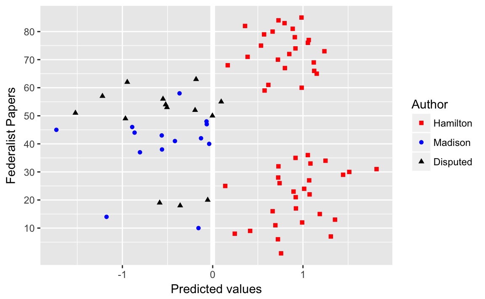
5.2 Network data
The igraph, sna, and network packages are the best in class. See the Social Network Analysis section of the Social Sciences Task View. See this tutorial by Katherin Ognyanova, Static and dynamic network visualization with R, for a good overview of network visualization with those packages in R.
There are several packages that plot networks in ggplot2.
- ggnetwork
- ggraph
- geomnet
- GGally functions ggnet,
ggnet2, andggnetworkmap. - ggCompNet compares the speed of various network plotting packages in R.
See this presentation for an overview of some of those packages for data visualization.
Examples: Network Visualization Examples with the ggplot2 Package
Prerequisites
5.2.1 Twitter Following Network
Since the names twitter.following and twitter.senator are verbose, we’ll simplify future code by copying their values to variables named twitter and senator, respectively.
Simply use the function since twitter consists of edges (a link from a senator to another). Since graph_from_edgelist expects a matrix, convert the data frame to a matrix using .
Add in- and out-degree variables to the senator data frame:
senator <-
mutate(senator,
indegree = igraph::degree(twitter_adj, mode = "in"),
outdegree = igraph::degree(twitter_adj, mode = "out"))Now find the senators with the 3 greatest in-degrees
arrange(senator, desc(indegree)) %>%
slice(1:3) %>%
select(name, party, state, indegree, outdegree)
#> # A tibble: 3 x 5
#> name party state indegree outdegree
#> <chr> <chr> <chr> <dbl> <dbl>
#> 1 Tom Cotton R AR 64.0 15.0
#> 2 Richard J. Durbin D IL 60.0 87.0
#> 3 John Barrasso R WY 58.0 79.0or using the function:
top_n(senator, 3, indegree) %>%
arrange(desc(indegree)) %>%
select(name, party, state, indegree, outdegree)
#> name party state indegree outdegree
#> 1 Tom Cotton R AR 64 15
#> 2 Richard J. Durbin D IL 60 87
#> 3 John Barrasso R WY 58 79
#> 4 Joe Donnelly D IN 58 9
#> 5 Orrin G. Hatch R UT 58 50The top_n function catches that three senators are tied for 3rd highest outdegree, whereas the simply sorting and slicing cannot.
And we can find the senators with the three highest out-degrees similarly,
top_n(senator, 3, outdegree) %>%
arrange(desc(outdegree)) %>%
select(name, party, state, indegree, outdegree)
#> name party state indegree outdegree
#> 1 Thad Cochran R MS 55 89
#> 2 Steve Daines R MT 30 88
#> 3 John McCain R AZ 41 88
#> 4 Joe Manchin, III D WV 43 88# Define scales to reuse for the plots
scale_colour_parties <- scale_colour_manual("Party", values = c(R = "red",
D = "blue",
I = "green"))
scale_shape_parties <- scale_shape_manual("Party", values = c(R = 16,
D = 17,
I = 4))
senator %>%
mutate(closeness_in = igraph::closeness(twitter_adj, mode = "in"),
closeness_out = igraph::closeness(twitter_adj, mode = "out")) %>%
ggplot(aes(x = closeness_in, y = closeness_out,
colour = party, shape = party)) +
geom_abline(intercept = 0, slope = 1, colour = "white", size = 2) +
geom_point() +
scale_colour_parties +
scale_shape_parties +
labs(main = "Closeness", x = "Incoming path", y = "Outgoing path")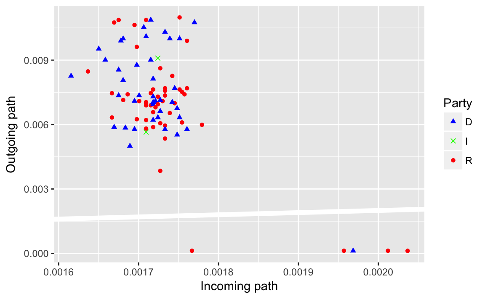
What does the reference line indicate? What does that say about senators twitter networks?
senator %>%
mutate(betweenness_dir = igraph::betweenness(twitter_adj, directed = TRUE),
betweenness_undir = igraph::betweenness(twitter_adj,
directed = FALSE)) %>%
ggplot(aes(x = betweenness_dir, y = betweenness_undir, colour = party,
shape = party)) +
geom_abline(intercept = 0, slope = 1, colour = "white", size = 2) +
geom_point() +
scale_colour_parties +
scale_shape_parties +
labs(main = "Betweenness", x = "Directed", y = "Undirected")
We’ve covered three different methods of calculating the importance of a node in a network: degree, closeness, and centrality. But what do they mean? What’s the “best” measure of importance? The answer to the the former is “it depends on the question”. There are probably other papers out there on this, but Borgatti (2005) is a good discussion:
Borgatti, Stephen. 2005. “Centrality and Network Flow”. Social Networks. DOI
Add and plot page-rank:
senator <- mutate(senator, page_rank = page_rank(twitter_adj)[["vector"]])
ggnet(twitter_adj, mode = "target")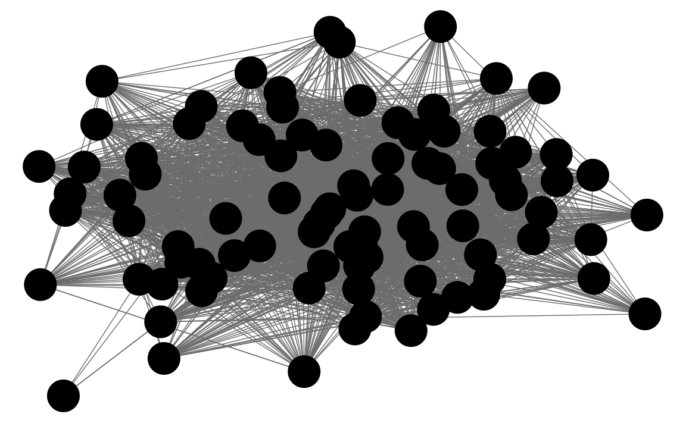
5.3 Spatial Data
Some resources on plotting spatial data in R:
ggplot2 has several map-related functions
ggmap allows ggplot to us a map from Google Maps, OpenStreet Maps or similar as a background for the plot.
- David Kahle and Hadley Wickham. 2013. ggmap: Spatial Visualization with ggplot2. Journal of Statistical Software
- Github dkahle/ggmamp
- tmap is not built on ggplot2 but uses a ggplot2-like API for network data.
leaflet is an R interface to a popular javascript mapping library.
Here are few tutorials on plotting spatial data in ggplot2:
Prerequisites
5.3.1 Spatial Data in R
data("us.cities", package = "maps")
glimpse(us.cities)
#> Observations: 1,005
#> Variables: 6
#> $ name <chr> "Abilene TX", "Akron OH", "Alameda CA", "Albany GA...
#> $ country.etc <chr> "TX", "OH", "CA", "GA", "NY", "OR", "NM", "LA", "V...
#> $ pop <int> 113888, 206634, 70069, 75510, 93576, 45535, 494962...
#> $ lat <dbl> 32.5, 41.1, 37.8, 31.6, 42.7, 44.6, 35.1, 31.3, 38...
#> $ long <dbl> -99.7, -81.5, -122.3, -84.2, -73.8, -123.1, -106.6...
#> $ capital <int> 0, 0, 0, 0, 2, 0, 0, 0, 0, 0, 0, 0, 0, 0, 0, 0, 0,...usa_map <- map_data("usa")
#>
#> Attaching package: 'maps'
#> The following object is masked from 'package:purrr':
#>
#> map
capitals <- filter(us.cities,
capital == 2,
!country.etc %in% c("HI", "AK"))
ggplot() +
geom_map(map = usa_map) +
borders(database = "usa") +
geom_point(aes(x = long, y = lat, size = pop),
data = capitals) +
# scale size area ensures: 0 = no area
scale_size_area() +
coord_quickmap() +
theme_void() +
labs(x = "", y = "", title = "US State Capitals",
size = "Population")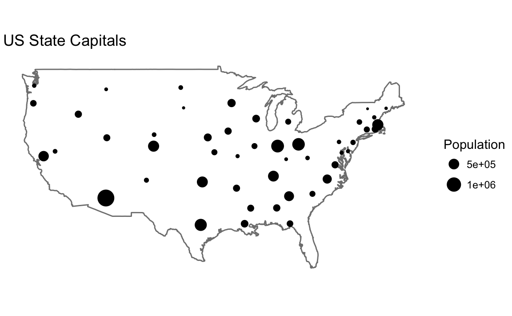
cal_cities <- filter(us.cities, country.etc == "CA") %>%
top_n(7, pop)
ggplot() +
borders(database = "state", regions = "California") +
geom_point(aes(x = long, y = lat), data = cal_cities) +
geom_text_repel(aes(x = long, y = lat, label = name), data = cal_cities) +
coord_quickmap() +
theme_minimal() +
labs(x = "", y = "")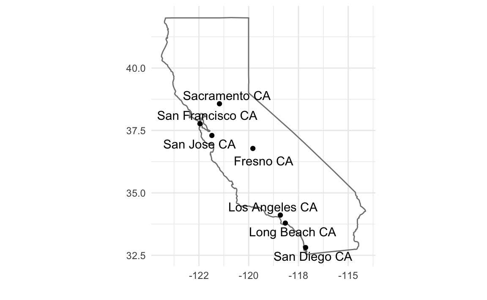
5.3.2 Colors in R
For more resources on using colors in R
R4DSchapter Graphics for Communication- ggplot2 book Chapter “Scales”
- Jenny Bryan Using colors in R
- Achim Zeileis, Kurt Hornik, Paul Murrell (2009). Escaping RGBland: Selecting Colors for Statistical Graphics. Computational Statistics & Data Analysis DOI
- colorspace vignette
- Maureen Stone Choosing Colors for Data Visualization
- ColorBrewer A website with a variety of palettes, primarily designed for maps, but also useful in data viz.
- Stephen Few Practical Rules for Using Color in Charts
- Why Should Engineers and Scientists by Worried About Color?
- A Better Default Colormap for Matplotlib A SciPy 2015 talk that describes how the viridis was created.
- Evaluation of Artery Visualizations for Heart Disease Diagnosis Using the wrong color scale can be deadly … literally.
- The python package matplotlib has a good discussion of colormaps.
- Peter Kovesi Good Color Maps: How to Design Them.
- See the viridis, ggthemes, dichromat, and pals packages for color palettes.
Use scale_identity for the color and alpha scales since the values of the variables are the values of the scale itself (the color names, and the alpha values).
ggplot(tibble(x = rep(1:4, each = 2),
y = x + rep(c(0, 0.2), times = 2),
colour = rep(c("black", "red"), each = 4),
alpha = c(1, 1, 0.5, 0.5, 1, 1, 0.5, 0.5)),
aes(x = x, y = y, colour = colour, alpha = alpha)) +
geom_point(size = 15) +
scale_color_identity() +
scale_alpha_identity() +
theme_bw() +
theme(panel.grid = element_blank())
5.3.3 United States Presidential Elections
data("pres08", package = "qss")
pres08 <- pres08 %>%
mutate(Dem = Obama / (Obama + McCain),
Rep = McCain / (Obama + McCain))ggplot() +
borders(database = "state", regions = "California", fill = "blue") +
coord_quickmap() +
theme_void()
cal_color <- filter(pres08, state == "CA") %>% {
rgb(red = .$Rep, green = 0, blue = .$Dem)
}
ggplot() +
borders(database = "state", regions = "California", fill = cal_color) +
coord_quickmap() +
theme_void()# America as red and blue states
map(database = "state") # create a map
for (i in 1:nrow(pres08)) {
if ( (pres08$state[i] != "HI") & (pres08$state[i] != "AK") &
(pres08$state[i] != "DC")) {
map(database = "state", regions = pres08$state.name[i],
col = ifelse(pres08$Rep[i] > pres08$Dem[i], "red", "blue"),
fill = TRUE, add = TRUE)
}
}
## America as purple states
map(database = "state") # create a map
for (i in 1:nrow(pres08)) {
if ( (pres08$state[i] != "HI") & (pres08$state[i] != "AK") &
(pres08$state[i] != "DC")) {
map(database = "state", regions = pres08$state.name[i],
col = rgb(red = pres08$Rep[i], blue = pres08$Dem[i],
green = 0), fill = TRUE, add = TRUE)
}
}states <- map_data("state") %>%
left_join(mutate(pres08, state.name = str_to_lower(state.name)),
by = c("region" = "state.name")) %>%
# drops DC
filter(!is.na(EV)) %>%
mutate(party = if_else(Dem > Rep, "Dem", "Rep"),
color = map2_chr(Dem, Rep, ~ rgb(blue = .x, red = .y, green = 0)))
ggplot(states) +
geom_polygon(aes(group = group, x = long, y = lat,
fill = party)) +
coord_quickmap() +
scale_fill_manual(values = c("Rep" = "red", "Dem" = "blue")) +
theme_void() +
labs(x = "", y = "")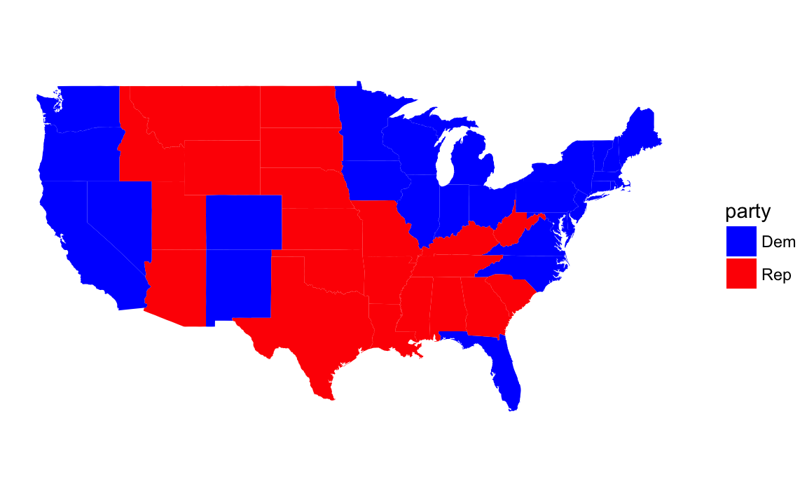
For plotting the purple states, I use since the color column contains the RGB values to use in the plot:
ggplot(states) +
geom_polygon(aes(group = group, x = long, y = lat,
fill = color)) +
coord_quickmap() +
scale_fill_identity() +
theme_void() +
labs(x = "", y = "")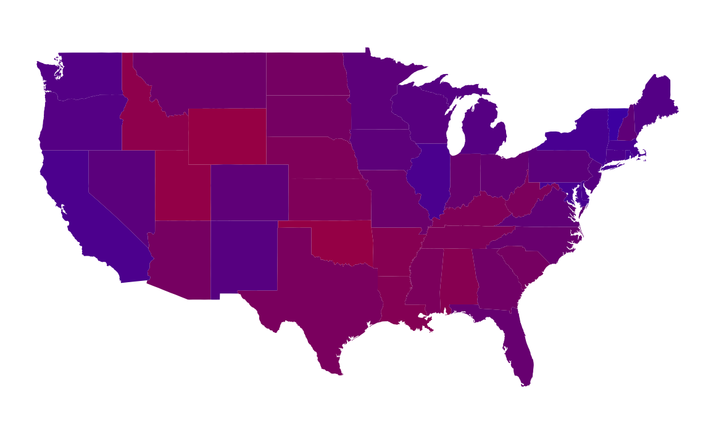
However, plotting purple states is not a good data visualization. Even though the colors are a proportional mixture of red and blue, human visual perception doesn’t work that way.
The proportion of the democratic vote is best thought of a diverging scale with 0.5 is midpoint. And since the Democratic Party is associated with the color blue and the Republican Party is associated with the color red. The Color Brewer palette RdBu is an example:
5.3.4 Expansion of Walmart
We don’t need to do the direct mapping since
data("walmart", package = "qss")
ggplot() +
borders(database = "state") +
geom_point(aes(x = long, y = lat, colour = type, size = size),
data = mutate(walmart,
size = if_else(type == "DistributionCenter", 2, 1)),
alpha = 1 / 3) +
coord_quickmap() +
scale_size_identity() +
guides(color = guide_legend(override.aes = list(alpha = 1))) +
theme_void() We don’t need to worry about colors since ggplot handles that. I use guides to so that the colors or not transparent in the legend (see R for Data Science chapterGraphics for communication).
To make a plot showing all Walmart stores opened up through that year, I write a function, that takes the year and dataset as parameters.
Since I am calling the function for its side effect (printing the plot) rather than the value it returns, I use the walk function rather than map. See R for Data Science, Chapter 21.8: Walk for more information.
map_walmart <- function(year, .data) {
.data <- filter(.data, opendate < make_date(year, 1, 1)) %>%
mutate(size = if_else(type == "DistributionCenter", 2, 1))
ggplot() +
borders(database = "state") +
geom_point(aes(x = long, y = lat, colour = type, size = size),
data = .data, alpha = 1 / 3) +
coord_quickmap() +
scale_size_identity() +
guides(color = guide_legend(override.aes = list(alpha = 1))) +
theme_void() +
ggtitle(year)
}
years <- c(1975, 1985, 1995, 2005)
walk(years, ~ print(map_walmart(.x, walmart)))
 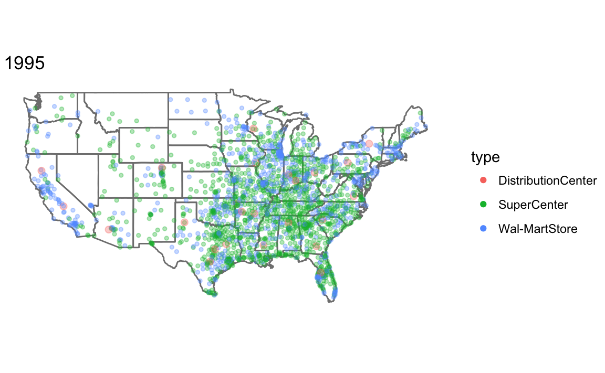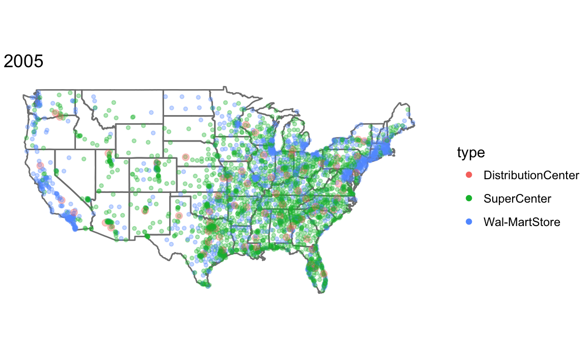
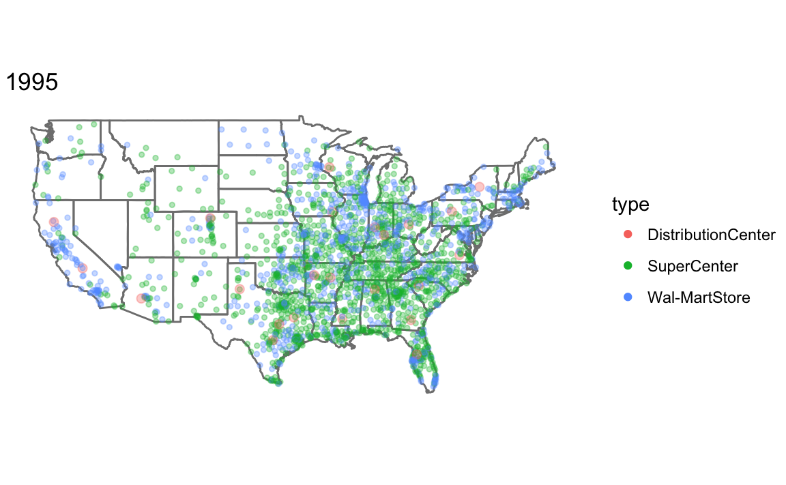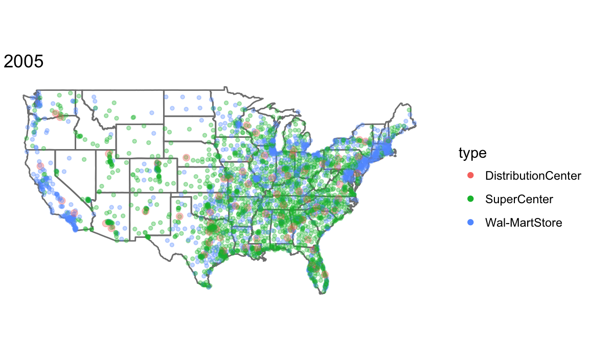
5.3.5 Animation in R
For easy animation with ggplot2, use the gganimate package. Note that the gganimate package is not on CRAN, so you have to install it with the devtools package:
An animation is a series of frames. The gganimate package works by adding a frame aesthetic to ggplots, and function will animate the plot.
I use frame = year(opendate) to have the animation use each year as a frame, and cumulative = TRUE so that the previous years are shown.
6 Probability
Prerequisites
6.1 Probability
6.1.1 Frequentist vs. Bayesian
6.1.2 Definition and Axioms
6.1.3 Permutations
birthday <- function(k) {
logdenom <- k * log(365) + lfactorial(365 - k)
lognumer <- lfactorial(365)
pr <- 1 - exp(lognumer - logdenom)
pr
}
bday <- tibble(k = 1:50, pr = birthday(k))
ggplot(bday, aes(x = k, y = pr)) +
geom_hline(yintercept = 0.5, colour = "white", size = 2) +
geom_line() +
geom_point() +
scale_y_continuous(str_c("Probability that at least two",
"people have the same birthday", sep = "\n"),
limits = c(0, 1), breaks = seq(0, 1, by = 0.1)) +
labs(x = "Number of people")
Note: The logarithm is used for numerical stability. Basically, “floating-point” numbers are approximations of numbers. If you perform arithmetic with numbers that are very large, very small, or vary differently in magnitudes, you could have problems. Logarithms help with some of those issues. See “Falling Into the Floating Point Trap” in The R Inferno for a summary of floating point numbers. See these John Fox posts 1 2 for an example of numerical stability gone wrong. Also see: http://andrewgelman.com/2016/06/11/log-sum-of-exponentials/.
6.1.4 Sampling without replacement
Instead of using a for loop, we could do the simulations using a functional as described in R for Data Science chapter “Iterations”.
Define the function sim_bdays which randomly samples k birthdays, and returns TRUE if there are any duplicate birthdays, and FALSE if there are none.
We can test the code for k = 10 birthdays.
Since the function is randomly sampling birthdays, running it multiple times will produce different answers.
One helpful feature of a functional style of writing code vs. a for loop is that the function encapsulates the code and allows you to test that it works for different inputs before repeating it for many inputs. It is more difficult to debug functions that produce random outputs, but some sanity checks are that the function:
- returns a logical vector of length one (
TRUEorFALSE) - always returns
FALSEwhenk = 1since there can never be a duplicates with one person - always returns
TRUEwhenk > 365by the pidgeonhole principle.
Set the parameters for 1,000 simulations, and 23 individuals. We use map_lgl since sim_bdays returns a logical value (TRUE, FALSE):
An alternative way of running this is using the rerun and using flatten to turn the output to a numeric vector:
6.1.5 Combinations
The function for \(84\choose{6}\) is:
However, due to the the larges values that the binomial coefficient, it is almost always better to use the log of the binomial coefficient, \(\log{84\choose{6}}\),
6.2 Conditional Probability
6.2.1 Conditional, Marginal, and Joint Probabilities
Load Florida voting data from the qss package:
data(FLVoters, package = "qss")
dim(FLVoters)
#> [1] 10000 6
glimpse(FLVoters)
#> Observations: 10,000
#> Variables: 6
#> $ surname <chr> "PIEDRA", "LYNCH", "CHESTER", "LATHROP", "HUMMEL", "CH...
#> $ county <int> 115, 115, 115, 115, 115, 115, 115, 115, 1, 1, 115, 115...
#> $ VTD <int> 66, 13, 103, 80, 8, 55, 84, 48, 41, 39, 26, 45, 11, 48...
#> $ age <int> 58, 51, 63, 54, 77, 49, 77, 34, 56, 60, 44, 45, 80, 83...
#> $ gender <chr> "f", "m", "m", "m", "f", "m", "f", "f", "f", "m", "m",...
#> $ race <chr> "white", "white", NA, "white", "white", "white", "whit...
FLVoters <- FLVoters %>%
na.omit()
dim(FLVoters)
#> [1] 9113 6Note the difference between glimpse() and dim() - what is different in how they handle NA observations?
Instead of using prop.base, we calculate the probabilities with a data frame. Calculate the marginal probabilities of each race:
margin_race <-
FLVoters %>%
count(race) %>%
mutate(prop = n / sum(n))
margin_race
#> # A tibble: 6 x 3
#> race n prop
#> <chr> <int> <dbl>
#> 1 asian 175 0.0192
#> 2 black 1194 0.131
#> 3 hispanic 1192 0.131
#> 4 native 29 0.00318
#> 5 other 310 0.0340
#> 6 white 6213 0.682Calculate the marginal probabilities of each gender:
margin_gender <-
FLVoters %>%
count(gender) %>%
mutate(prop = n / sum(n))
margin_gender
#> # A tibble: 2 x 3
#> gender n prop
#> <chr> <int> <dbl>
#> 1 f 4883 0.536
#> 2 m 4230 0.464FLVoters %>%
filter(gender == "f") %>%
count(race) %>%
mutate(prop = n / sum(n))
#> # A tibble: 6 x 3
#> race n prop
#> <chr> <int> <dbl>
#> 1 asian 83 0.0170
#> 2 black 678 0.139
#> 3 hispanic 666 0.136
#> 4 native 17 0.00348
#> 5 other 158 0.0324
#> 6 white 3281 0.672joint_p <-
FLVoters %>%
count(gender, race) %>%
mutate(prop = n / sum(n))
joint_p
#> # A tibble: 12 x 4
#> gender race n prop
#> <chr> <chr> <int> <dbl>
#> 1 f asian 83 0.00911
#> 2 f black 678 0.0744
#> 3 f hispanic 666 0.0731
#> 4 f native 17 0.00187
#> 5 f other 158 0.0173
#> 6 f white 3281 0.360
#> # ... with 6 more rowsWe can convert the data frame to have gender as columns:
joint_p %>%
select(-n) %>%
spread(gender, prop)
#> # A tibble: 6 x 3
#> race f m
#> * <chr> <dbl> <dbl>
#> 1 asian 0.00911 0.0101
#> 2 black 0.0744 0.0566
#> 3 hispanic 0.0731 0.0577
#> 4 native 0.00187 0.00132
#> 5 other 0.0173 0.0167
#> 6 white 0.360 0.322Sum over race:
joint_p %>%
group_by(race) %>%
summarise(prop = sum(prop))
#> # A tibble: 6 x 2
#> race prop
#> <chr> <dbl>
#> 1 asian 0.0192
#> 2 black 0.131
#> 3 hispanic 0.131
#> 4 native 0.00318
#> 5 other 0.0340
#> 6 white 0.682Sum over gender:
joint_p %>%
group_by(gender) %>%
summarise(prop = sum(prop))
#> # A tibble: 2 x 2
#> gender prop
#> <chr> <dbl>
#> 1 f 0.536
#> 2 m 0.464FLVoters <-
FLVoters %>%
mutate(age_group = cut(age, c(0, 20, 40, 60, Inf), right = TRUE,
labels = c("<= 20", "20-40", "40-60", "> 60")))joint3 <-
FLVoters %>%
count(race, age_group, gender) %>%
ungroup() %>%
mutate(prop = n / sum(n))
joint3
#> # A tibble: 47 x 5
#> race age_group gender n prop
#> <chr> <fctr> <chr> <int> <dbl>
#> 1 asian <= 20 f 1 0.000110
#> 2 asian <= 20 m 2 0.000219
#> 3 asian 20-40 f 24 0.00263
#> 4 asian 20-40 m 26 0.00285
#> 5 asian 40-60 f 38 0.00417
#> 6 asian 40-60 m 47 0.00516
#> # ... with 41 more rowsMarginal probabilities by age groups
margin_age <-
FLVoters %>%
count(age_group) %>%
mutate(prop = n / sum(n))
margin_age
#> # A tibble: 4 x 3
#> age_group n prop
#> <fctr> <int> <dbl>
#> 1 <= 20 161 0.0177
#> 2 20-40 2469 0.271
#> 3 40-60 3285 0.360
#> 4 > 60 3198 0.351Calculate the probabilities that each group is in a given age group, and show \(P(\text{black} \land \text{female} \land \text{age} > 60)\): (Note: the symbol \(\land\) is the logical symbol for ‘and’, implying the joint probability.)
left_join(joint3,
select(margin_age, age_group, margin_age = prop),
by = "age_group") %>%
mutate(prob_age_group = prop / margin_age) %>%
filter(race == "black", gender == "f", age_group == "> 60") %>%
select(race, age_group, gender, prob_age_group)
#> # A tibble: 1 x 4
#> race age_group gender prob_age_group
#> <chr> <fctr> <chr> <dbl>
#> 1 black > 60 f 0.0538Two-way joint probability table for age group and gender
joint2 <- FLVoters %>%
count(age_group, gender) %>%
ungroup() %>%
mutate(prob_age_gender = n / sum(n))
joint2
#> # A tibble: 8 x 4
#> age_group gender n prob_age_gender
#> <fctr> <chr> <int> <dbl>
#> 1 <= 20 f 88 0.00966
#> 2 <= 20 m 73 0.00801
#> 3 20-40 f 1304 0.143
#> 4 20-40 m 1165 0.128
#> 5 40-60 f 1730 0.190
#> 6 40-60 m 1555 0.171
#> # ... with 2 more rowsThe joint probability \(P(\text{age} > 60 \land \text{female})\),
joint2 %>%
filter(age_group == "> 60", gender == "f")
#> # A tibble: 1 x 4
#> age_group gender n prob_age_gender
#> <fctr> <chr> <int> <dbl>
#> 1 > 60 f 1761 0.193The conditional probabilities \(P(\text{race } | \text{ gender, age})\),
condprob_race <-
left_join(joint3, select(joint2, -n), by = c("age_group", "gender")) %>%
mutate(prob_race = prop / prob_age_gender) %>%
arrange(age_group, gender) %>%
select(age_group, gender, race, prob_race)Each row is the \(P(\text{race } | \text{ age group} \land \text{gender})\), so \(P(\text{black } | \text{ female} \land \text{age} > 60)\),
6.2.2 Independence
Create a table with the products of margins of race and age. Using the function crossing to create a tibble with all combinations of race and gender and the independent prob.
race_gender_indep <-
crossing(select(margin_race, race, prob_race = prop),
select(margin_gender, gender, prob_gender = prop)) %>%
mutate(prob_indep = prob_race * prob_gender) %>%
left_join(select(joint_p, gender, race, prob = prop),
by = c("gender", "race")) %>%
select(race, gender, everything())
race_gender_indep
#> # A tibble: 12 x 6
#> race gender prob_race prob_gender prob_indep prob
#> <chr> <chr> <dbl> <dbl> <dbl> <dbl>
#> 1 asian f 0.0192 0.536 0.0103 0.00911
#> 2 asian m 0.0192 0.464 0.00891 0.0101
#> 3 black f 0.131 0.536 0.0702 0.0744
#> 4 black m 0.131 0.464 0.0608 0.0566
#> 5 hispanic f 0.131 0.536 0.0701 0.0731
#> 6 hispanic m 0.131 0.464 0.0607 0.0577
#> # ... with 6 more rowsggplot(race_gender_indep,
aes(x = prob_indep, y = prob, colour = race)) +
geom_abline(intercept = 0, slope = 1, colour = "white", size = 2) +
geom_point() +
facet_grid(. ~ gender) +
coord_fixed() +
theme(legend.position = "bottom") +
labs(x = expression(P("race") * P("gender")),
y = expression(P("race and gender")))
While the original code only calculates joint-independence value for values of age > 60, and female, this calculates the joint probabilities for all combinations of the three variables, and facets by age and gender.
joint_indep <-
crossing(select(margin_race, race, prob_race = prop),
select(margin_age, age_group, prob_age = prop),
select(margin_gender, gender, prob_gender = prop)) %>%
mutate(indep_prob = prob_race * prob_age * prob_gender) %>%
left_join(select(joint3, race, age_group, gender, prob = prop),
by = c("gender", "age_group", "race")) %>%
replace_na(list(prob = 0))
ggplot(joint_indep, aes(x = prob, y = indep_prob, colour = race)) +
geom_abline(intercept = 0, slope = 1, colour = "white", size = 2) +
geom_point() +
facet_grid(age_group ~ gender) +
coord_fixed() +
labs(x = "P(race and age and gender)",
y = "P(race) * P(age) * P(gender)",
title = "Joint Independence")
While code in QSS only calculates the conditional independence given female, the following code calculates conditional independence for all values of gender:
cond_gender <-
left_join(select(joint3, race, age_group, gender, joint_prob = prop),
select(margin_gender, gender, prob_gender = prop),
by = c("gender")) %>%
mutate(cond_prob = joint_prob / prob_gender)Calculate the conditional distribution \(\Pr(\text{race} | \text{gender})\):
prob_race_gender <-
left_join(select(joint_p, race, gender, prob_race_gender = prop),
select(margin_gender, gender, prob_gender = prop),
by = "gender") %>%
mutate(prob_race = prob_race_gender / prob_gender)Calculate the conditional distribution \(\Pr(\text{age} | \text{gender})\):
prob_age_gender <-
left_join(select(joint2, age_group, gender, prob_age_gender),
select(margin_gender, gender, prob_gender = prop),
by = "gender") %>%
mutate(prob_age = prob_age_gender / prob_gender)
# indep prob of race and age
indep_cond_gender <-
full_join(select(prob_race_gender, race, gender, prob_race),
select(prob_age_gender, age_group, gender, prob_age),
by = "gender") %>%
mutate(indep_prob = prob_race * prob_age)
inner_join(select(indep_cond_gender, race, age_group, gender, indep_prob),
select(cond_gender, race, age_group, gender, cond_prob),
by = c("gender", "age_group", "race")) %>%
ggplot(aes(x = cond_prob, y = indep_prob, colour = race)) +
geom_abline(intercept = 0, slope = 1, colour = "white", size = 2) +
geom_point() +
facet_grid(age_group ~ gender) +
coord_fixed() +
labs(x = "P(race and age | gender)",
y = "P(race | gender) * P(age | gender)",
title = "Marginal independence")
Monty-hall problem
The for loop approach in QSS is valid code, but here we provide a more functional approach to solving the problem. We will define a function to choose a door, repeat the function multiple times while storing the results in a data frame, and then summarize that data frame.
First, create a function for a single iteration. This returns a single logical value:
choose_door <- function(.iter) {
# what's behind each door door:
# Why is it okay that this is fixed?
doors <- c("goat", "goat", "car")
# User randomly chooses a door
first <- sample(1:3, 1)
# randomly choose the door that Monty Hall reveals
remain <- doors[-first]
monty <- sample( (1:2)[remain == "goat"], size = 1)
# did the contestant win?
tibble(.iter = .iter,
result = remain[-monty] == "car")
}Now use map_df to run choose_door multiple times, and then summarize the results:
6.2.3 Bayes’ Rule
6.2.4 Predicting Race Using Surname and Residence Location
Start with the Census names files:
data("cnames", package = "qss")
glimpse(cnames)
#> Observations: 151,671
#> Variables: 7
#> $ surname <chr> "SMITH", "JOHNSON", "WILLIAMS", "BROWN", "JONES", ...
#> $ count <int> 2376206, 1857160, 1534042, 1380145, 1362755, 11278...
#> $ pctwhite <dbl> 73.34, 61.55, 48.52, 60.72, 57.69, 85.80, 64.73, 6...
#> $ pctblack <dbl> 22.22, 33.80, 46.72, 34.54, 37.73, 10.41, 30.77, 0...
#> $ pctapi <dbl> 0.40, 0.42, 0.37, 0.41, 0.35, 0.42, 0.40, 1.43, 0....
#> $ pcthispanic <dbl> 1.56, 1.50, 1.60, 1.64, 1.44, 1.43, 1.58, 90.82, 9...
#> $ pctothers <dbl> 2.48, 2.73, 2.79, 2.69, 2.79, 1.94, 2.52, 1.09, 0....For each surname, cnames contains variables with the probability that it belongs to an individual of a given race (pctwhite, pctblack, …). We want to find the most-likely race for a given surname, by finding the race with the maximum proportion. Instead of dealing with multiple variables, it is easier to use max on a single variable, so we will rearrange the data to in order to use a grouped summarize, and then merge the new variable back to the original data sets. We will also remove the ‘pct’ prefix from each of the variable names.
Calculate the most likely race for each name:
most_likely_race <-
cnames %>%
select(-count) %>%
gather(race_pred, pct, -surname) %>%
# remove pct_ prefix from variable names
mutate(race_pred = str_replace(race_pred, "^pct", "")) %>%
# # group by surname
group_by(surname) %>%
# select obs with the largest percentage
filter(row_number(desc(pct)) == 1L) %>%
# Ungroup to avoid errors later
ungroup %>%
# # don't need pct anymore
select(-pct) %>%
mutate(race_pred = recode(race_pred, asian = "api", other = "others"))Merge the data frame with the most likely race for each surname to the the original cnames data frame:
Instead of using match, use inner_join to merge the surnames to FLVoters:
FLVoters also includes a “native” category that the surname dataset does not.
Check that the levels of race and race_pred are the same:
FLVoters %>%
count(race2)
#> # A tibble: 5 x 2
#> race2 n
#> <fctr> <int>
#> 1 asian 140
#> 2 black 1078
#> 3 hispanic 1023
#> 4 other 277
#> 5 white 5504
FLVoters %>%
count(race_pred)
#> # A tibble: 5 x 2
#> race_pred n
#> <chr> <int>
#> 1 api 120
#> 2 black 258
#> 3 hispanic 1121
#> 4 others 7
#> 5 white 6516Now we can calculate True positive rate for all races
FLVoters %>%
group_by(race2) %>%
summarise(tp = mean(race2 == race_pred)) %>%
arrange(desc(tp))
#> # A tibble: 5 x 2
#> race2 tp
#> <fctr> <dbl>
#> 1 white 0.950
#> 2 hispanic 0.847
#> 3 black 0.160
#> 4 asian 0
#> 5 other 0and the False discovery rate for all races,
FLVoters %>%
group_by(race_pred) %>%
summarise(fp = mean(race2 != race_pred)) %>%
arrange(desc(fp))
#> # A tibble: 5 x 2
#> race_pred fp
#> <chr> <dbl>
#> 1 api 1.00
#> 2 others 1.00
#> 3 black 0.329
#> 4 hispanic 0.227
#> 5 white 0.197Now add residence data using the FLCensus data included in the
\(P(\text{race})\) in Florida:
race.prop <-
FLCensus %>%
select(total.pop, white, black, api, hispanic, others) %>%
gather(race, pct, -total.pop) %>%
group_by(race) %>%
summarise(mean = weighted.mean(pct, weights = total.pop)) %>%
arrange(desc(mean))
race.prop
#> # A tibble: 5 x 2
#> race mean
#> <chr> <dbl>
#> 1 white 0.605
#> 2 hispanic 0.213
#> 3 black 0.139
#> 4 api 0.0219
#> 5 others 0.02146.2.5 Predicting Election Outcomes with Uncertainty
Load the pres08 data from the qss package.
Add a column p which contains Obama’s vote share of the major parties:
Write a function to simulate the elections. df is the data frame (pres08) with the state, EV, and p columns. n_draws is the size of the binomial distribution to draw from. .id is the simulation number.
sim_election <- function(.id, df, n_draws = 1000) {
# For each state randomly sample
mutate(df,
draws = rbinom(n(), n_draws, p)) %>%
filter(draws > (n_draws / 2)) %>%
summarise(EV = sum(EV),
.id = .id)
}Now simulate the election 10,000 times:
In the 2008 election, Obama received 364 electoral votes
And plot them,
ggplot(sim_results, aes(x = EV, y = ..density..)) +
geom_histogram(binwidth = 10, fill = "gray30") +
geom_vline(xintercept = ELECTION_EV, colour = "black", size = 2) +
labs(x = "Electoral Votes", y = "density") Simulation mean, variance, and standard deviations:
Simulation mean, variance, and standard deviations:
Theoretical probabilities from a binomial distribution:
6.3 Random Variables and Probability Distributions
6.3.1 Bernoulli and Uniform Distributions
Uniform distribution functions:
Sample from a uniform distribution, and convert to a probability:
6.3.2 Binomial distribution
6.3.3 Normal distribution
Write a function to calculate the area of a normal distribution \(\pm \sigma\)
normal_pm_sigma <- function(x, mu = 0, sd = 1) {
(pnorm(mu + sd * x, mean = mu, sd = sd) -
pnorm(mu - sd * x, mean = mu, sd = sd))
}
normal_pm_sigma(1)
#> [1] 0.683
normal_pm_sigma(2)
#> [1] 0.954
normal_pm_sigma(1, mu = 5, sd = 2)
#> [1] 0.683
normal_pm_sigma(2, mu = 5, sd = 2)
#> [1] 0.954To join both data frames
pres <-
full_join(select(pres08, state, Obama_2008 = Obama, McCain_2008 = McCain,
EV_2008 = EV),
select(pres12, state, Obama_2012 = Obama, Romney_2012 = Romney,
EV_2012 = EV),
by = "state") %>%
mutate(Obama_2008_z = as.numeric(scale(Obama_2008)),
Obama_2012_z = as.numeric(scale(Obama_2012)))Plot the residuals and compare them to a normal distribution:
err <- tibble(err = resid(fit1)) %>%
# z-score of residuals
mutate(err_std = err / sd(err))
ggplot(err, aes(x = err_std)) +
geom_histogram(mapping = aes(y = ..density..),
binwidth = 1, boundary = 0) +
stat_function(geom = "line", fun = dnorm) +
scale_x_continuous("Standardized residuals",
breaks = -3:3, limits = c(-3, 3))
ggplot(err, aes(sample = err_std)) +
geom_abline(intercept = 0, slope = 1, color = "white", size = 2) +
geom_qq() +
coord_fixed(ratio = 1) +
scale_y_continuous("Sample quantiles", limits = c(-3, 3)) +
scale_x_continuous("Theoretical quantiles", limits = c(-3, 3))
Alternatively, you can use the augment function from broom which returns the residuals for each observation in the .resid column.
augment(fit1) %>%
mutate(.resid_z = .resid / sd(.resid)) %>%
ggplot(aes(x = .resid_z)) +
geom_histogram(mapping = aes(y = ..density..),
binwidth = 1, boundary = 0) +
stat_function(geom = "line", fun = dnorm) +
scale_x_continuous("Standardized residuals",
breaks = -3:3, limits = c(-3, 3))
Obama’s vote shares in 2008 and 2012.
Standard deviation of errors:
Probability of having a larger vote in California in 2012 than in 2008?
The predicted value of 2012 vote share can be calculated manually with \(\hat{beta} \times x\),
or calculated using the predict function with the newdata argument providing any specific values to calculate?
Now calculate
We can generalize the previous code to calculate the probability that Obama would exceed his 2008 vote to all states:
pres_gt_2008 <- augment(fit1) %>%
mutate(p_greater = pnorm(Obama_2008_z, mean = .fitted, sd = err_sd,
lower.tail = FALSE))Plotting these results, we can observe regression to the mean. States with larger (smaller) 2008 vote shares had a lower (higher) probability that the 2012 vote share will exceed them.
ggplot(pres_gt_2008, aes(x = Obama_2008_z, y = p_greater)) +
modelr::geom_ref_line(h = 0.5) +
modelr::geom_ref_line(v = 0) +
geom_point() +
labs(x = "Standardized vote share of Obama (2008)",
y = "Pr. 2012 vote share greater than 2008")
6.3.4 Expectation and Variance
Theoretical and actual sample variable of a set of Bernoulli draws:
6.3.5 Predicting Election Outcomes with Uncertainty
Load 2008 Presidential Election data:
sim_election <- function(x, n = 1000) {
n_states <- nrow(x)
# samples the number of votes for Obama
mutate(x,
draws = rbinom(n_states, size = !!n, prob = p),
obama_EV = EV * (draws > (!!n / 2))) %>%
pluck("obama_EV") %>%
sum()
}This function returns the electoral votes for Obama for a single simulation:
Run this simulation sims times, saving the electoral votes of Obama in each simulation:
Obama’s actual electoral value
library("glue")
ggplot(tibble(Obama_EV = Obama_EV_sims),
aes(x = Obama_EV, y = ..density..)) +
geom_histogram(binwidth = 10, boundary = 0, fill = "gray60") +
geom_vline(xintercept = OBAMA_EV, colour = "black", size = 2) +
annotate("text", x = OBAMA_EV + 2, y = 0.02,
label = glue("Obama's 2008 EV = {OBAMA_EV}"), hjust = 0) +
scale_x_continuous("Obama's Electoral College Votes",
breaks = seq(300, 400, by = 20)) +
scale_y_continuous("Density") +
labs(title = "Prediction of election outcomes")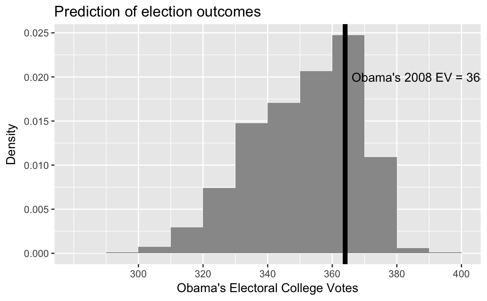
Summarize the simulations:
Compare theoretical and simulation means:
# simulation EV
mean(Obama_EV_sims)
#> [1] 352
# theoretical
n <- 1000
pres08 %>%
mutate(Obama_EV = EV * pbinom(n / 2, size = n, prob = p,
lower.tail = FALSE)) %>%
summarise(Obama_EV = sum(Obama_EV))
#> Obama_EV
#> 1 352Compare theoretical and simulation variances:
# simulation variance
var(Obama_EV_sims)
#> [1] 273
# theoretical variance
Obama_EV_var <- pres08 %>%
mutate(pb = pbinom(n / 2, size = n, prob = p, lower.tail = FALSE),
EV_var = pb * (1 - pb) * EV ^ 2) %>%
summarise(EV_var = sum(EV_var)) %>%
pluck("EV_var")
Obama_EV_var
#> [1] 269and standard deviations
6.4 Large Sample Theorems
6.4.1 Law of Large Numbers
Put the simulation number, x and mean in a tibble:
sims <- 1000
p <- 0.2
size <- 10
lln_binom <- tibble(
n = seq_len(sims),
x = rbinom(sims, prob = p, size = size),
mean = cumsum(x) / n,
distrib = str_c("Binomial(", size, ", ", p, ")"))lln_unif <-
tibble(n = seq_len(sims),
x = runif(sims),
mean = cumsum(x) / n,
distrib = str_c("Uniform(0, 1)"))true_means <-
tribble(~distrib, ~mean,
"Uniform(0, 1)", 0.5,
str_c("Binomial(", size, ", ", p, ")"), size * p)
ggplot() +
geom_hline(aes(yintercept = mean), data = true_means,
colour = "white", size = 2) +
geom_line(aes(x = n, y = mean),
data = bind_rows(lln_binom, lln_unif)) +
facet_grid(distrib ~ ., scales = "free_y") +
labs(x = "Sample Size", y = "Sample Mean")
6.4.2 Central Limit Theorem
The population mean of the binomial distribution is \(\mu = p n\) and the variance is \(\sigma^2 = p (1 - p) n\).
Write functions to calculate the mean of a binomial distribution with size, size, and probability, p,
variance of a binomial distribution,
Write a function that takes n_samp samples from a binomial distribution with size, size, and probability of success, p, and returns a data frame with the z-score of the sample distribution:
sim_binom_clt <- function(n_samp, size, p) {
x <- rbinom(n_samp, prob = p, size = size)
z <- (mean(x) - binom_mean(size, p)) /
sqrt(binom_var(size, p) / n_samp)
tibble(distrib = str_c("Binomial(", p, ", ", size, ")"),
z = z)
}For the uniform distribution, we need a function to calculate the mean of a uniform distribution,
variance of a uniform distribution,
and a function to perform the CLT simulation,
sim_unif_clt <- function(n_samp, min = 0, max = 1) {
x <- runif(n_samp, min = min, max = max)
z <- (mean(x) - unif_mean(min, max)) /
sqrt(unif_var(min, max) / n_samp)
tibble(distrib = str_c("Uniform(", min, ", ", max, ")"),
z = z)
}Since we will calculate this for n_samp = 1000 and n_samp, we might as well write a function for it.
clt_plot <- function(n_samp) {
bind_rows(map_df(seq_len(sims), ~ sim_binom_clt(n_samp, size, p)),
map_df(seq_len(sims), ~ sim_unif_clt(n_samp))) %>%
ggplot(aes(x = z)) +
geom_density() +
geom_rug() +
stat_function(fun = dnorm, colour = "red") +
facet_grid(distrib ~ .) +
ggtitle(str_c("Sample size = ", n_samp))
}
clt_plot(1000)
clt_plot(100)

7 Uncertainty
Prerequisites
We will use these package in this chapter:
7.1 Estimation
7.1.1 Unbiasedness and Consistency
In these simulations, we draw a sample of size n from normal distributions with means mu0 and mu1 and standard deviations sd0 and sd1 respectively,
n <- 100
mu0 <- 0
sd0 <- 1
mu1 <- 1
sd1 <- 1
smpl <- tibble(id = seq_len(n),
# Y if not treated
Y0 = rnorm(n, mean = mu0, sd = sd0),
# Y if treated
Y1 = rnorm(n, mean = mu1, sd = sd1),
# individual treatment effects
tau = Y1 - Y0)The SATE is:
Simulations of RCTs. Write a function that takes the sample as an input smpl, randomly assigns the treatment to each individual:
sim_treat <- function(smpl) {
n <- nrow(smpl)
SATE <- mean(smpl[["tau"]])
# indexes of obs receiving treatment
idx <- sample(seq_len(n), floor(nrow(smpl) / 2), replace = FALSE)
# treat variable are those receiving treatment, else 0
smpl[["treat"]] <- as.integer(seq_len(nrow(smpl)) %in% idx)
smpl %>%
mutate(Y_obs = if_else(treat == 1L, Y1, Y0)) %>%
group_by(treat) %>%
summarise(Y_obs = mean(Y_obs)) %>%
spread(treat, Y_obs) %>%
rename(Y1_mean = `1`, Y0_mean = `0`) %>%
mutate(diff_mean = Y1_mean - Y0_mean,
est_error = diff_mean - SATE)
}This returns a data frame with columns: Y0_mean (mean \(Y\) for observations not receiving the treatment), Y1_mean (mean \(Y\) for observations receiving the treatment), diff (difference in mean values between the two groups), and est_error (difference between the estimated difference and the known SATE):
sim_treat(smpl)
#> # A tibble: 1 x 4
#> Y0_mean Y1_mean diff_mean est_error
#> <dbl> <dbl> <dbl> <dbl>
#> 1 -0.0570 0.875 0.932 -0.0207Rerun this function sims times:
sims <- 5000
sate_sims <- map_df(seq_len(sims), ~ sim_treat(smpl))
summary(sate_sims[["est_error"]])
#> Min. 1st Qu. Median Mean 3rd Qu. Max.
#> -0.484 -0.087 -0.002 -0.001 0.085 0.414Simulate the PATE:
PATE <- mu1 - mu0
sim_pate <- function(n, mu0, mu1, sd0, sd1) {
smpl <- tibble(Y0 = rnorm(n, mean = mu0, sd = sd0),
Y1 = rnorm(n, mean = mu1, sd = sd1),
tau = Y1 - Y0)
# indexes of obs receiving treatment
idx <- sample(seq_len(n), floor(nrow(smpl) / 2), replace = FALSE)
# treat variable are those receiving treatment, else 0
smpl[["treat"]] <- as.integer(seq_len(nrow(smpl)) %in% idx)
smpl %>%
mutate(Y_obs = if_else(treat == 1L, Y1, Y0)) %>%
group_by(treat) %>%
summarise(Y_obs = mean(Y_obs)) %>%
spread(treat, Y_obs) %>%
rename(Y1_mean = `1`, Y0_mean = `0`) %>%
mutate(diff_mean = Y1_mean - Y0_mean,
est_error = diff_mean - PATE)
}Example of one simulation
7.1.2 Standard Error
Plot of the sampling distribution of the difference-in-means estimator:
ggplot(pate_sims, aes(x = diff_mean, y = ..density..)) +
geom_histogram(binwidth = 0.01, boundary = 1) +
geom_vline(xintercept = PATE, colour = "white", size = 2) +
ggtitle("Sampling distribution") +
labs(x = "Difference-in-means estimator")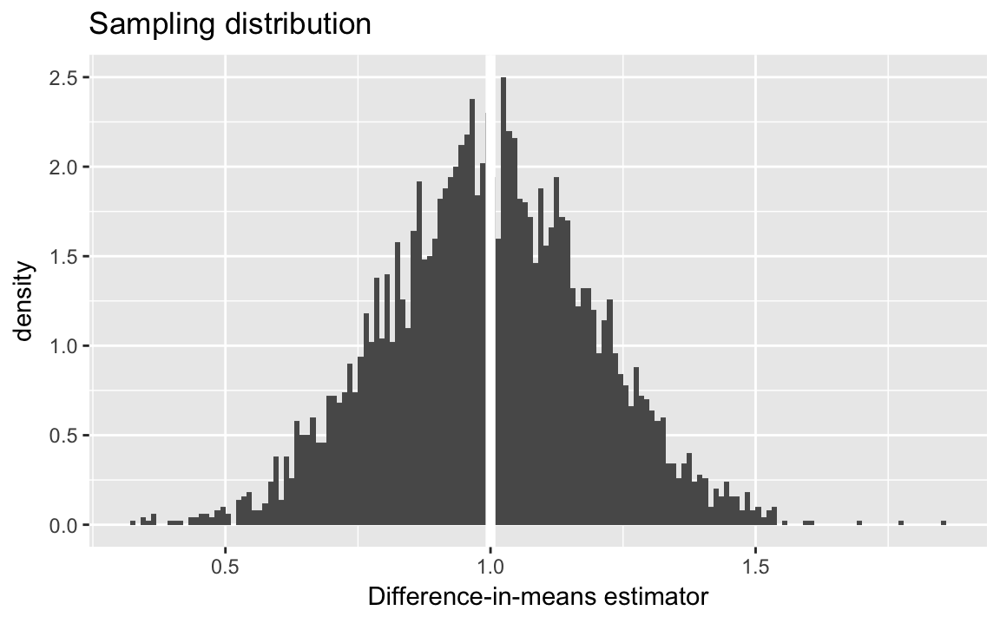
Simulate PATE with a standard error:
sim_pate_se <- function(n, mu0, mu1, sd0, sd1) {
# PATE - difference in means
PATE <- mu1 - mu0
# sample
smpl <- tibble(Y0 = rnorm(n, mean = mu0, sd = sd0),
Y1 = rnorm(n, mean = mu1, sd = sd1),
tau = Y1 - Y0)
# indexes of obs receiving treatment
idx <- sample(seq_len(n), floor(nrow(smpl) / 2), replace = FALSE)
# treat variable are those receiving treatment, else 0
smpl[["treat"]] <- as.integer(seq_len(nrow(smpl)) %in% idx)
# sample
smpl %>%
mutate(Y_obs = if_else(treat == 1L, Y1, Y0)) %>%
group_by(treat) %>%
summarise(mean = mean(Y_obs),
var = var(Y_obs),
nobs = n()) %>%
summarise(diff_mean = diff(mean),
se = sqrt(sum(var / nobs)),
est_error = diff_mean - PATE)
}Run a single simulation:
sim_pate_se(n, mu0, mu1, sd0, sd1)
#> # A tibble: 1 x 3
#> diff_mean se est_error
#> <dbl> <dbl> <dbl>
#> 1 1.05 0.190 0.0539Run sims simulations:
Standard deviation of difference-in-means
Mean of standard errors,
7.1.3 Confidence Intervals
Calculate a \(p\%\) confidence interval for the binomial distribution:
# Sample size
n <- 1000
# point estimate
x_bar <- 0.6
# standard error
se <- sqrt(x_bar * (1 - x_bar) / n)
# Desired Confidence levels
levels <- c(0.99, 0.95, 0.90)tibble(level = levels) %>%
mutate(
ci_lower = x_bar - qnorm(1 - (1 - level) / 2) * se,
ci_upper = x_bar + qnorm(1 - (1 - level) / 2) * se
)
#> # A tibble: 3 x 3
#> level ci_lower ci_upper
#> <dbl> <dbl> <dbl>
#> 1 0.990 0.560 0.640
#> 2 0.950 0.570 0.630
#> 3 0.900 0.575 0.625Calculate the coverage ratio of the 95% confidence interval in the PATE simulations.
level <- 0.95
pate_sims_se %>%
mutate(ci_lower = diff_mean - qnorm(1 - (1 - level) / 2) * se,
ci_upper = diff_mean + qnorm(1 - (1 - level) / 2) * se,
includes_pate = PATE > ci_lower & PATE < ci_upper) %>%
summarise(coverage = mean(includes_pate))
#> # A tibble: 1 x 1
#> coverage
#> <dbl>
#> 1 0.948To do this for multiple levels encapsulate the above code in a function with arguments .data (the data frame) and the confidence level, level:
pate_sims_coverage <- function(.data, level = 0.95) {
mutate(.data,
ci_lower = diff_mean - qnorm(1 - (1 - level) / 2) * se,
ci_upper = diff_mean + qnorm(1 - (1 - level) / 2) * se,
includes_pate = PATE > ci_lower & PATE < ci_upper) %>%
summarise(coverage = mean(includes_pate))
}pate_sims_coverage(pate_sims_se, 0.95)
#> # A tibble: 1 x 1
#> coverage
#> <dbl>
#> 1 0.948
pate_sims_coverage(pate_sims_se, 0.99)
#> # A tibble: 1 x 1
#> coverage
#> <dbl>
#> 1 0.989
pate_sims_coverage(pate_sims_se, 0.90)
#> # A tibble: 1 x 1
#> coverage
#> <dbl>
#> 1 0.898Define a function that samples from a Bernoulli distribution, calculates its standard error, and returns a logical value as to whether it contains the true value:
binom_ci_contains <- function(n, p, alpha = 0.05) {
x <- rbinom(n, size = 1, prob = p)
x_bar <- mean(x)
se <- sqrt(x_bar * (1 - x_bar) / n)
ci_lower <- x_bar - qnorm(1 - alpha / 2) * se
ci_upper <- x_bar + qnorm(1 - alpha / 2) * se
(ci_lower <= p) & (p <= ci_upper)
}We can run this once for given sample size:
Using map_df we can rerun it sims times and calculate the coverage proportion:
Encapsulate the above code in a function that calculates the coverage of a confidence interval with size, n, and success probability, p:
binom_ci_coverage <- function(n, p, sims) {
mean(map_lgl(seq_len(sims), ~ binom_ci_contains(n, p)))
}Use binom_ci_coverage to calculate CI coverage for multiple values of the sample size:
7.1.4 Margin of Error and Sample Size Calculation in Polls
Write a function to calculate the sample size needed for a given proportion.
moe_pop_prop <- function(MoE) {
tibble(p = seq(from = 0.01, to = 0.99, by = 0.01),
n = 1.96 ^ 2 * p * (1 - p) / MoE ^ 2,
MoE = MoE)
}
moe_pop_prop(0.01)
#> # A tibble: 99 x 3
#> p n MoE
#> <dbl> <dbl> <dbl>
#> 1 0.0100 380 0.0100
#> 2 0.0200 753 0.0100
#> 3 0.0300 1118 0.0100
#> 4 0.0400 1475 0.0100
#> 5 0.0500 1825 0.0100
#> 6 0.0600 2167 0.0100
#> # ... with 93 more rowsThen use map_df to call this function for different margins of error, and return the entire thing as a data frame with columns: n, p, and MoE.
Since its a data frame, its easy to plot with ggplot:
ggplot(props, aes(x = p, y = n, colour = factor(MoE))) +
geom_line() +
labs(colour = "margin of error",
x = "population proportion",
y = "sample size") +
theme(legend.position = "bottom") read_csv already recognizes the date columns, so we don’t need to convert them. The 2008 election was on Nov 11, 2008, so we’ll store that in a variable.
read_csv already recognizes the date columns, so we don’t need to convert them. The 2008 election was on Nov 11, 2008, so we’ll store that in a variable.
Load the final vote shares,
and polling data
We need to add an additional column to the polls08 data frame which contains the number of days until the election:
For each state calculate the mean of the latest polls,
poll_pred <-
polls08 %>%
group_by(state) %>%
# latest polls in the state
filter(DaysToElection == min(DaysToElection)) %>%
# take mean of latest polls and convert from 0-100 to 0-1
summarise(Obama = mean(Obama) / 100)
# Add confidence itervals
# sample size
sample_size <- 1000
# confidence level
alpha <- 0.05
poll_pred <-
poll_pred %>%
mutate(se = sqrt(Obama * (1 - Obama) / sample_size),
ci_lwr = Obama + qnorm(alpha / 2) * se,
ci_upr = Obama + qnorm(1 - alpha / 2) * se)
# Add actual outcome
poll_pred <-
left_join(poll_pred,
select(pres08, state, actual = Obama),
by = "state") %>%
mutate(actual = actual / 100,
covers = (ci_lwr <= actual) & (actual <= ci_upr))
poll_pred
#> # A tibble: 51 x 7
#> state Obama se ci_lwr ci_upr actual covers
#> <chr> <dbl> <dbl> <dbl> <dbl> <dbl> <lgl>
#> 1 AK 0.390 0.0154 0.360 0.420 0.380 T
#> 2 AL 0.360 0.0152 0.330 0.390 0.390 F
#> 3 AR 0.440 0.0157 0.409 0.471 0.390 F
#> 4 AZ 0.465 0.0158 0.434 0.496 0.450 T
#> 5 CA 0.600 0.0155 0.570 0.630 0.610 T
#> 6 CO 0.520 0.0158 0.489 0.551 0.540 T
#> # ... with 45 more rowsIn the plot, color the point ranges by whether they include the election day outcome.
ggplot(poll_pred, aes(x = actual, y = Obama,
ymin = ci_lwr, ymax = ci_upr,
colour = covers)) +
geom_abline(intercept = 0, slope = 1, colour = "white", size = 2) +
geom_pointrange() +
scale_y_continuous("Poll prediction", limits = c(0, 1)) +
scale_x_continuous("Obama's vote share", limits = c(0, 1)) +
scale_colour_discrete("CI includes result?") +
coord_fixed() +
theme(legend.position = "bottom")
Proportion of polls with confidence intervals that include the election outcome?
poll_pred <-
poll_pred %>%
# calc bias
mutate(bias = Obama - actual) %>%
# bias corrected prediction, se, and CI
mutate(Obama_bc = Obama - mean(bias),
se_bc = sqrt(Obama_bc * (1 - Obama_bc) / sample_size),
ci_lwr_bc = Obama_bc + qnorm(alpha / 2) * se_bc,
ci_upr_bc = Obama_bc + qnorm(1 - alpha / 2) * se_bc,
covers_bc = (ci_lwr_bc <= actual) & (actual <= ci_upr_bc))
poll_pred %>%
summarise(mean(covers_bc))
#> # A tibble: 1 x 1
#> `mean(covers_bc)`
#> <dbl>
#> 1 0.7657.1.5 Analysis of Randomized Controlled Trials
Load the STAR data from the qss package,
Add meaningful labels to the classtype variable:
STAR <- STAR %>%
mutate(classtype = factor(classtype,
labels = c("small class", "regular class",
"regular class with aid")))Summarize scores by classroom type:
classtype_means <-
STAR %>%
group_by(classtype) %>%
summarise(g4reading = mean(g4reading, na.rm = TRUE))Plot the distribution of scores by classroom type:
classtypes_used <- c("small class", "regular class")
ggplot(filter(STAR,
classtype %in% classtypes_used,
!is.na(g4reading)),
aes(x = g4reading, y = ..density..)) +
geom_histogram(binwidth = 20) +
geom_vline(data = filter(classtype_means, classtype %in% classtypes_used),
mapping = aes(xintercept = g4reading),
colour = "white", size = 2) +
facet_grid(classtype ~ .) +
labs(x = "Fourth grade reading score", y = "Density")
alpha <- 0.05
star_estimates <-
STAR %>%
filter(!is.na(g4reading)) %>%
group_by(classtype) %>%
summarise(n = n(),
est = mean(g4reading),
se = sd(g4reading) / sqrt(n)) %>%
mutate(lwr = est + qnorm(alpha / 2) * se,
upr = est + qnorm(1 - alpha / 2) * se)
star_estimates
#> # A tibble: 3 x 6
#> classtype n est se lwr upr
#> <fctr> <int> <dbl> <dbl> <dbl> <dbl>
#> 1 small class 726 723 1.91 720 727
#> 2 regular class 836 720 1.84 716 723
#> 3 regular class with aid 791 721 1.86 717 724star_estimates %>%
filter(classtype %in% c("small class", "regular class")) %>%
# ensure that it is ordered small then regular
arrange(desc(classtype)) %>%
summarise(
se = sqrt(sum(se ^ 2)),
est = diff(est)
) %>%
mutate(ci_lwr = est + qnorm(alpha / 2) * se,
ci_up = est + qnorm(1 - alpha / 2) * se)
#> # A tibble: 1 x 4
#> se est ci_lwr ci_up
#> <dbl> <dbl> <dbl> <dbl>
#> 1 2.65 3.50 -1.70 8.70Use we could use spread and gather:
star_ate <-
star_estimates %>%
filter(classtype %in% c("small class", "regular class")) %>%
mutate(classtype = fct_recode(factor(classtype),
"small" = "small class",
"regular" = "regular class")) %>%
select(classtype, est, se) %>%
gather(stat, value, -classtype) %>%
unite(variable, stat, classtype) %>%
spread(variable, value) %>%
mutate(ate_est = est_small - est_regular,
ate_se = sqrt(se_small ^ 2 + se_regular ^ 2),
ci_lwr = ate_est + qnorm(alpha / 2) * ate_se,
ci_upr = ate_est + qnorm(1 - alpha / 2) * ate_se)
star_ate
#> # A tibble: 1 x 8
#> est_regular est_small se_regular se_small ate_est ate_se ci_lwr ci_upr
#> <dbl> <dbl> <dbl> <dbl> <dbl> <dbl> <dbl> <dbl>
#> 1 720 723 1.84 1.91 3.50 2.65 -1.70 8.707.1.6 Analysis Based on Student’s t-Distribution
Use filter to subset.
t.test(filter(STAR, classtype == "small class")$g4reading,
filter(STAR, classtype == "regular class")$g4reading)
#>
#> Welch Two Sample t-test
#>
#> data: filter(STAR, classtype == "small class")$g4reading and filter(STAR, classtype == "regular class")$g4reading
#> t = 1, df = 2000, p-value = 0.2
#> alternative hypothesis: true difference in means is not equal to 0
#> 95 percent confidence interval:
#> -1.70 8.71
#> sample estimates:
#> mean of x mean of y
#> 723 720The function t.test can also take a formula as its first parameter.
t.test(g4reading ~ classtype,
data = filter(STAR, classtype %in% c("small class", "regular class")))
#>
#> Welch Two Sample t-test
#>
#> data: g4reading by classtype
#> t = 1, df = 2000, p-value = 0.2
#> alternative hypothesis: true difference in means is not equal to 0
#> 95 percent confidence interval:
#> -1.70 8.71
#> sample estimates:
#> mean in group small class mean in group regular class
#> 723 7207.2 Hypothesis Testing
7.2.1 Tea-Testing Experiment
# Number of cups of tea
cups <- 4
# Number guessed correctly
k <- c(0, seq_len(cups))
true <- tibble(correct = k * 2,
n = choose(cups, k) * choose(cups, cups - k)) %>%
mutate(prob = n / sum(n))
true
#> # A tibble: 5 x 3
#> correct n prob
#> <dbl> <dbl> <dbl>
#> 1 0 1.00 0.0143
#> 2 2.00 16.0 0.229
#> 3 4.00 36.0 0.514
#> 4 6.00 16.0 0.229
#> 5 8.00 1.00 0.0143sims <- 1000
guess <- tibble(guess = c("M", "T", "T", "M", "M", "T", "T", "M"))
randomize_tea <- function(df) {
# randomize the order of teas
assignment <- sample_frac(df, 1) %>%
rename(actual = guess)
bind_cols(df, assignment) %>%
summarise(correct = sum(guess == actual))
}
approx <-
map_df(seq_len(sims), ~ randomize_tea(guess)) %>%
count(correct) %>%
mutate(prob = n / sum(n))
left_join(select(approx, correct, prob_sim = prob),
select(true, correct, prob_exact = prob),
by = "correct") %>%
mutate(diff = prob_sim - prob_exact)
#> # A tibble: 5 x 4
#> correct prob_sim prob_exact diff
#> <dbl> <dbl> <dbl> <dbl>
#> 1 0 0.0110 0.0143 -0.00329
#> 2 2.00 0.234 0.229 0.00543
#> 3 4.00 0.486 0.514 -0.0283
#> 4 6.00 0.253 0.229 0.0244
#> 5 8.00 0.0160 0.0143 0.001717.2.2 The General Framework
The test functions like fisher.test do not work particularly well with data frames, and expect vectors or matrices as input, so tidyverse functions are less directly applicable
# all guesses correct
x <- tribble(~Guess, ~Truth, ~Number,
"Milk", "Milk", 4L,
"Milk", "Tea", 0L,
"Tea", "Milk", 0L,
"Tea", "Tea", 4L)
x
#> # A tibble: 4 x 3
#> Guess Truth Number
#> <chr> <chr> <int>
#> 1 Milk Milk 4
#> 2 Milk Tea 0
#> 3 Tea Milk 0
#> 4 Tea Tea 4
# 6 correct guesses
y <- x %>%
mutate(Number = c(3L, 1L, 1L, 3L))
y
#> # A tibble: 4 x 3
#> Guess Truth Number
#> <chr> <chr> <int>
#> 1 Milk Milk 3
#> 2 Milk Tea 1
#> 3 Tea Milk 1
#> 4 Tea Tea 3
# Turn into a 2x2 table for fisher.test
select(spread(x, Truth, Number), -Guess)
#> # A tibble: 2 x 2
#> Milk Tea
#> * <int> <int>
#> 1 4 0
#> 2 0 4
# Use spread to make it a 2 x 2 table
fisher.test(select(spread(x, Truth, Number), -Guess),
alternative = "greater")
#>
#> Fisher's Exact Test for Count Data
#>
#> data: select(spread(x, Truth, Number), -Guess)
#> p-value = 0.01
#> alternative hypothesis: true odds ratio is greater than 1
#> 95 percent confidence interval:
#> 2 Inf
#> sample estimates:
#> odds ratio
#> Inf
fisher.test(select(spread(y, Truth, Number), -Guess))
#>
#> Fisher's Exact Test for Count Data
#>
#> data: select(spread(y, Truth, Number), -Guess)
#> p-value = 0.5
#> alternative hypothesis: true odds ratio is not equal to 1
#> 95 percent confidence interval:
#> 0.212 621.934
#> sample estimates:
#> odds ratio
#> 6.417.2.3 One-Sample Tests
n <- 1018
x.bar <- 550 / n
se <- sqrt(0.5 * 0.5 / n) # standard deviation of sampling distribution
# upper red area in the figure
upper <- pnorm(x.bar, mean = 0.5, sd = se, lower.tail = FALSE)
# lower red area in the figure; identical to the upper area
lower <- pnorm(0.5 - (x.bar - 0.5), mean = 0.5, sd = se)
# two side p value
upper + lower
#> [1] 0.0102
2 * upper
#> [1] 0.0102
# one sided p value
upper
#> [1] 0.00508
z.score <- (x.bar - 0.5) / se
z.score
#> [1] 2.57
pnorm(z.score, lower.tail = FALSE) # one-sided p-value
#> [1] 0.00508
2 * pnorm(z.score, lower.tail = FALSE) # two-sided p-value
#> [1] 0.0102
# 99% confidence interval contains 0.5
c(x.bar - qnorm(0.995) * se, x.bar + qnorm(0.995) * se)
#> [1] 0.500 0.581
# 95% confidence interval does not contain 0.5
c(x.bar - qnorm(0.975) * se, x.bar + qnorm(0.975) * se)
#> [1] 0.510 0.571
# no continuity correction to get the same p-value as above
prop.test(550, n = n, p = 0.5, correct = FALSE)
#>
#> 1-sample proportions test without continuity correction
#>
#> data: 550 out of n, null probability 0.5
#> X-squared = 7, df = 1, p-value = 0.01
#> alternative hypothesis: true p is not equal to 0.5
#> 95 percent confidence interval:
#> 0.510 0.571
#> sample estimates:
#> p
#> 0.54
# with continuity correction
prop.test(550, n = n, p = 0.5)
#>
#> 1-sample proportions test with continuity correction
#>
#> data: 550 out of n, null probability 0.5
#> X-squared = 6, df = 1, p-value = 0.01
#> alternative hypothesis: true p is not equal to 0.5
#> 95 percent confidence interval:
#> 0.509 0.571
#> sample estimates:
#> p
#> 0.54
prop.test(550, n = n, p = 0.5, conf.level = 0.99)
#>
#> 1-sample proportions test with continuity correction
#>
#> data: 550 out of n, null probability 0.5
#> X-squared = 6, df = 1, p-value = 0.01
#> alternative hypothesis: true p is not equal to 0.5
#> 99 percent confidence interval:
#> 0.499 0.581
#> sample estimates:
#> p
#> 0.547.2.4 Two-sample tests
The ATE estimates are stored in a data frame, star_ate. Note that the dplyr function transmute is like mutate, but only returns the variables specified in the function.
star_ate %>%
transmute(p_value_1sided = pnorm(-abs(ate_est),
mean = 0, sd = ate_se),
p_value_2sided = 2 * pnorm(-abs(ate_est), mean = 0,
sd = ate_se))
#> # A tibble: 1 x 2
#> p_value_1sided p_value_2sided
#> <dbl> <dbl>
#> 1 0.0935 0.187t.test(g4reading ~ classtype,
data = filter(STAR, classtype %in% c("small class", "regular class")))
#>
#> Welch Two Sample t-test
#>
#> data: g4reading by classtype
#> t = 1, df = 2000, p-value = 0.2
#> alternative hypothesis: true difference in means is not equal to 0
#> 95 percent confidence interval:
#> -1.70 8.71
#> sample estimates:
#> mean in group small class mean in group regular class
#> 723 720or
t.test(filter(STAR, classtype == "small class")$g4reading,
filter(STAR, classtype == "regular class")$g4reading)
#>
#> Welch Two Sample t-test
#>
#> data: filter(STAR, classtype == "small class")$g4reading and filter(STAR, classtype == "regular class")$g4reading
#> t = 1, df = 2000, p-value = 0.2
#> alternative hypothesis: true difference in means is not equal to 0
#> 95 percent confidence interval:
#> -1.70 8.71
#> sample estimates:
#> mean of x mean of y
#> 723 720data("resume", package = "qss")
x <- resume %>%
count(race, call) %>%
spread(call, n) %>%
ungroup()
x
#> # A tibble: 2 x 3
#> race `0` `1`
#> * <chr> <int> <int>
#> 1 black 2278 157
#> 2 white 2200 235
prop.test(as.matrix(select(x, -race)), alternative = "greater")
#>
#> 2-sample test for equality of proportions with continuity
#> correction
#>
#> data: as.matrix(select(x, -race))
#> X-squared = 20, df = 1, p-value = 2e-05
#> alternative hypothesis: greater
#> 95 percent confidence interval:
#> 0.0188 1.0000
#> sample estimates:
#> prop 1 prop 2
#> 0.936 0.903# sample size
n0 <- sum(resume$race == "black")
n1 <- sum(resume$race == "white")
# sample proportions
p <- mean(resume$call) # overall
p0 <- mean(filter(resume, race == "black")$call)
p1 <- mean(filter(resume, race == "white")$call)
# point estimate
est <- p1 - p0
est
#> [1] 0.032
# standard error
se <- sqrt(p * (1 - p) * (1 / n0 + 1 / n1))
se
#> [1] 0.0078
# z statistic
zstat <- est / se
zstat
#> [1] 4.11
# one sided p value
pnorm(-abs(zstat))
#> [1] 1.99e-05The only thing that changed is using filter for selecting the groups.
7.2.5 Power Analysis
# set the parameters
n <- 250
p.star <- 0.48 # data generating process
p <- 0.5 # null value
alpha <- 0.05
# critical value
cr.value <- qnorm(1 - alpha / 2)
# standard errors under the hypothetical data generating process
se.star <- sqrt(p.star * (1 - p.star) / n)
# standard error under the null
se <- sqrt(p * (1 - p) / n)
# power
pnorm(p - cr.value * se, mean = p.star, sd = se.star) +
pnorm(p + cr.value * se, mean = p.star, sd = se.star, lower.tail = FALSE)
# parameters
n1 <- 500
n0 <- 500
p1.star <- 0.05
p0.star <- 0.1
# overall call back rate as a weighted average
p <- (n1 * p1.star + n0 * p0.star) / (n1 + n0)
# standard error under the null
se <- sqrt(p * (1 - p) * (1 / n1 + 1 / n0))
# standard error under the hypothetical data generating process
se.star <- sqrt(p1.star * (1 - p1.star) / n1 + p0.star * (1 - p0.star) / n0)
pnorm(-cr.value * se, mean = p1.star - p0.star, sd = se.star) +
pnorm(cr.value * se, mean = p1.star - p0.star, sd = se.star,
lower.tail = FALSE)
power.prop.test(n = 500, p1 = 0.05, p2 = 0.1, sig.level = 0.05)
power.prop.test(p1 = 0.05, p2 = 0.1, sig.level = 0.05, power = 0.9)
power.t.test(n = 100, delta = 0.25, sd = 1, type = "one.sample")
power.t.test(power = 0.9, delta = 0.25, sd = 1, type = "one.sample")
power.t.test(delta = 0.25, sd = 1, type = "two.sample",
alternative = "one.sided", power = 0.9)7.3 Linear Regression Model with Uncertainty
7.3.1 Linear Regression as a Generative Model
Load the minimum wage date included with the qss package:
minwage <- mutate(minwage,
fullPropBefore = fullBefore / (fullBefore + partBefore),
fullPropAfter = fullAfter / (fullAfter + partAfter),
NJ = as.integer(location == "PA"))fit_minwage <- lm(fullPropAfter ~ -1 + NJ + fullPropBefore +
wageBefore + chain, data = minwage)
fit_minwage
#>
#> Call:
#> lm(formula = fullPropAfter ~ -1 + NJ + fullPropBefore + wageBefore +
#> chain, data = minwage)
#>
#> Coefficients:
#> NJ fullPropBefore wageBefore chainburgerking
#> -0.0542 0.1688 0.0813 -0.0614
#> chainkfc chainroys chainwendys
#> -0.0966 -0.1522 -0.1659
fit_minwage1 <- lm(fullPropAfter ~ NJ + fullPropBefore +
wageBefore + chain, data = minwage)
fit_minwage1
#>
#> Call:
#> lm(formula = fullPropAfter ~ NJ + fullPropBefore + wageBefore +
#> chain, data = minwage)
#>
#> Coefficients:
#> (Intercept) NJ fullPropBefore wageBefore
#> -0.0614 -0.0542 0.1688 0.0813
#> chainkfc chainroys chainwendys
#> -0.0352 -0.0908 -0.1045
gather_predictions(slice(minwage, 1), fit_minwage, fit_minwage1) %>%
select(model, pred)
#> # A tibble: 2 x 2
#> model pred
#> <chr> <dbl>
#> 1 fit_minwage 0.271
#> 2 fit_minwage1 0.2717.3.2 Inference about coefficients
Use the tidy function to return the coefficients, including confidence intervals, as a data frame:
data("women", package = "qss")
fit_women <- lm(water ~ reserved, data = women)
summary(fit_women)
#>
#> Call:
#> lm(formula = water ~ reserved, data = women)
#>
#> Residuals:
#> Min 1Q Median 3Q Max
#> -23.99 -14.74 -7.86 2.26 316.01
#>
#> Coefficients:
#> Estimate Std. Error t value Pr(>|t|)
#> (Intercept) 14.74 2.29 6.45 4.2e-10 ***
#> reserved 9.25 3.95 2.34 0.02 *
#> ---
#> Signif. codes: 0 '***' 0.001 '**' 0.01 '*' 0.05 '.' 0.1 ' ' 1
#>
#> Residual standard error: 33.4 on 320 degrees of freedom
#> Multiple R-squared: 0.0169, Adjusted R-squared: 0.0138
#> F-statistic: 5.49 on 1 and 320 DF, p-value: 0.0197
tidy(fit_women)
#> term estimate std.error statistic p.value
#> 1 (Intercept) 14.74 2.29 6.45 4.22e-10
#> 2 reserved 9.25 3.95 2.34 1.97e-02You need to set conf.int = TRUE for tidy to include the confidence interval:
summary(fit_minwage)
#>
#> Call:
#> lm(formula = fullPropAfter ~ -1 + NJ + fullPropBefore + wageBefore +
#> chain, data = minwage)
#>
#> Residuals:
#> Min 1Q Median 3Q Max
#> -0.4862 -0.1813 -0.0281 0.1513 0.7509
#>
#> Coefficients:
#> Estimate Std. Error t value Pr(>|t|)
#> NJ -0.0542 0.0332 -1.63 0.1034
#> fullPropBefore 0.1688 0.0566 2.98 0.0031 **
#> wageBefore 0.0813 0.0389 2.09 0.0374 *
#> chainburgerking -0.0614 0.1755 -0.35 0.7266
#> chainkfc -0.0966 0.1793 -0.54 0.5904
#> chainroys -0.1522 0.1832 -0.83 0.4066
#> chainwendys -0.1659 0.1853 -0.90 0.3711
#> ---
#> Signif. codes: 0 '***' 0.001 '**' 0.01 '*' 0.05 '.' 0.1 ' ' 1
#>
#> Residual standard error: 0.244 on 351 degrees of freedom
#> Multiple R-squared: 0.635, Adjusted R-squared: 0.628
#> F-statistic: 87.2 on 7 and 351 DF, p-value: <2e-16
tidy(fit_minwage, conf.int = TRUE)
#> term estimate std.error statistic p.value conf.low conf.high
#> 1 NJ -0.0542 0.0332 -1.633 0.10343 -0.11953 0.0111
#> 2 fullPropBefore 0.1688 0.0566 2.981 0.00307 0.05744 0.2801
#> 3 wageBefore 0.0813 0.0389 2.090 0.03737 0.00478 0.1579
#> 4 chainburgerking -0.0614 0.1755 -0.350 0.72657 -0.40648 0.2837
#> 5 chainkfc -0.0966 0.1793 -0.539 0.59044 -0.44919 0.2560
#> 6 chainroys -0.1522 0.1832 -0.831 0.40664 -0.51238 0.2080
#> 7 chainwendys -0.1659 0.1853 -0.895 0.37115 -0.53031 0.19857.3.3 Inference about predictions
data("MPs", package = "qss")
MPs_labour <- filter(MPs, party == "labour")
MPs_tory <- filter(MPs, party == "tory")
labour_fit1 <- lm(ln.net ~ margin, data = filter(MPs_labour, margin < 0))
labour_fit2 <- lm(ln.net ~ margin, data = filter(MPs_labour, margin > 0))
tory_fit1 <- lm(ln.net ~ margin, data = filter(MPs_tory, margin < 0))
tory_fit2 <- lm(ln.net ~ margin, data = filter(MPs_tory, margin > 0))Predictions at the threshold. The broom function augment will return prediction fitted values and standard errors for each value, but not the confidence intervals themselves (we’d have to multiply the correct t-distribution with degrees of freedom.) So instead, we’ll directly use the predict function:
tory_y0 <-
predict(tory_fit1, interval = "confidence",
newdata = tibble(margin = 0)) %>% as_tibble()
tory_y0
#> # A tibble: 1 x 3
#> fit lwr upr
#> <dbl> <dbl> <dbl>
#> 1 12.5 12.1 13.0
tory_y1 <-
predict(tory_fit2, interval = "confidence",
newdata = tibble(margin = 0)) %>% as_tibble()
tory_y1
#> # A tibble: 1 x 3
#> fit lwr upr
#> <dbl> <dbl> <dbl>
#> 1 13.2 12.8 13.6Alternatively, using augment (and assuming a normal distribution since the number of observations is so large its not worth worrying about the t-distribution):
tory_y0 <-
augment(tory_fit1, newdata = tibble(margin = 0)) %>%
mutate(lwr = .fitted + qnorm(0.025) * .se.fit,
upr = .fitted + qnorm(0.975) * .se.fit)
tory_y0
#> margin .fitted .se.fit lwr upr
#> 1 0 12.5 0.214 12.1 13
tory_y1 <-
augment(tory_fit2, newdata = tibble(margin = 0)) %>%
mutate(lwr = .fitted + qnorm(0.025) * .se.fit,
upr = .fitted + qnorm(0.975) * .se.fit)
tory_y1
#> margin .fitted .se.fit lwr upr
#> 1 0 13.2 0.192 12.8 13.6y1_range <- data_grid(filter(MPs_tory, margin <= 0), margin)
tory_y0 <- augment(tory_fit1, newdata = y1_range)
y2_range <- data_grid(filter(MPs_tory, margin >= 0), margin)
tory_y1 <- augment(tory_fit2, newdata = y2_range)ggplot() +
geom_ref_line(v = 0) +
geom_point(aes(y = ln.net, x = margin), data = MPs_tory) +
# plot losers
geom_ribbon(aes(x = margin,
ymin = .fitted + qnorm(0.025) * .se.fit,
ymax = .fitted + qnorm(0.975) * .se.fit),
data = tory_y0, alpha = 0.3) +
geom_line(aes(x = margin, y = .fitted), data = tory_y0) +
# plot winners
geom_ribbon(aes(x = margin,
ymin = .fitted + qnorm(0.025) * .se.fit,
ymax = .fitted + qnorm(0.975) * .se.fit),
data = tory_y1, alpha = 0.3) +
geom_line(aes(x = margin, y = .fitted), data = tory_y1) +
labs(x = "Margin of vitory", y = "log net wealth")
tory_y1 <- augment(tory_fit1, newdata = tibble(margin = 0))
tory_y1
#> margin .fitted .se.fit
#> 1 0 12.5 0.214
tory_y0 <- augment(tory_fit2, newdata = tibble(margin = 0))
tory_y0
#> margin .fitted .se.fit
#> 1 0 13.2 0.192
summary(tory_fit1)
#>
#> Call:
#> lm(formula = ln.net ~ margin, data = filter(MPs_tory, margin <
#> 0))
#>
#> Residuals:
#> Min 1Q Median 3Q Max
#> -5.320 -0.472 -0.035 0.663 3.580
#>
#> Coefficients:
#> Estimate Std. Error t value Pr(>|t|)
#> (Intercept) 12.538 0.214 58.54 <2e-16 ***
#> margin 1.491 1.291 1.15 0.25
#> ---
#> Signif. codes: 0 '***' 0.001 '**' 0.01 '*' 0.05 '.' 0.1 ' ' 1
#>
#> Residual standard error: 1.43 on 119 degrees of freedom
#> Multiple R-squared: 0.0111, Adjusted R-squared: 0.00277
#> F-statistic: 1.33 on 1 and 119 DF, p-value: 0.251
summary(tory_fit2)
#>
#> Call:
#> lm(formula = ln.net ~ margin, data = filter(MPs_tory, margin >
#> 0))
#>
#> Residuals:
#> Min 1Q Median 3Q Max
#> -3.858 -0.877 0.001 0.830 3.126
#>
#> Coefficients:
#> Estimate Std. Error t value Pr(>|t|)
#> (Intercept) 13.188 0.192 68.69 <2e-16 ***
#> margin -0.728 1.982 -0.37 0.71
#> ---
#> Signif. codes: 0 '***' 0.001 '**' 0.01 '*' 0.05 '.' 0.1 ' ' 1
#>
#> Residual standard error: 1.29 on 100 degrees of freedom
#> Multiple R-squared: 0.00135, Adjusted R-squared: -0.00864
#> F-statistic: 0.135 on 1 and 100 DF, p-value: 0.714Since we aren’t doing anything more with these values, there isn’t much benefit in keeping them in data frames.
# standard error
se_diff <- sqrt(tory_y0$.se.fit ^ 2 + tory_y1$.se.fit ^ 2)
se_diff
#> [1] 0.288
# point estimate
diff_est <- tory_y1$.fitted - tory_y0$.fitted
diff_est
#> [1] -0.65
# confidence interval
CI <- c(diff_est - se_diff * qnorm(0.975),
diff_est + se_diff * qnorm(0.975))
CI
#> [1] -1.2134 -0.0859
# hypothesis test
z.score <- diff_est / se_diff
# two sided p value
p.value <- 2 * pnorm(abs(z.score), lower.tail = FALSE)
p.value
#> [1] 0.0239For more on using projects read Project-oriented workflow.↩
See the discussion in R for Data Science on how
tibbleobjects differ from basedata.frameobjects in how[is handled.↩